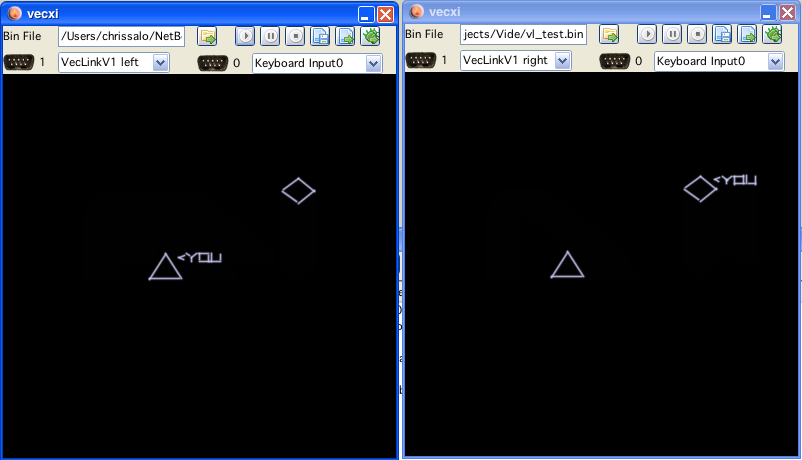

menubar
Vide
Vide is a collection of different sources - and some new creations - in a single application.
It is a Vectrex Integrated Developement Environment.
I do not intend to make VIDE an "emulator of choice".
It will not be as pretty as ParaJVE, it will not be as fast as VecX and it won't be as "elegant" as the MAME/MESS emulation.
I am a pragmatic guy not one for beauty or aesthetics.
Vide is a collection of different sources - and some new creations - in a single application. It is a Vectrex Integrated Developement Environment.
It as of now consists of:
a java port of the vecx emulator (by me - Malban)
The port is a port of a port and reaches back to the original author: Valavan Manohararajah of whom I can't find a valid homepage. Copyright status to me unkown, but as often as that code was used, I guess it is "freely distributable".
The port also has some enhancements, as you will notice.
This part will be called vecxi further on.
a java port (by me - Malban) (or should I say a complete rewrite? - not much of the original code is left) of DASM6809, which I am sure also is a port of a port of a rewrite. Originally developed by Sean Riddle, Copyright (c)1995 Sean Riddle (freely distributable... see source files).
The port also has some enhancements/changes, as you will notice.
This part will be called dissi further on.
a code adaption of a java 6809 assembler called "asmj".
(sourceforge: http://sourceforge.net/projects/asmj/) developed by Bill Yakowenko.
The sources in the sourceforge zip, the svn version and the binaries are not complete nor compatible. I tried reaching out to the author, but have received no feedback yet. I fixed the part I am interested in - so that it works for me. The source is public domain.
This part will be called assi further on.
a set of editor classes, done by me. Syntax highlighting uses a modified version of "Syntax", a package done by (c) Stephen Ostermiller (http://ostermiller.org/syntax/ ), the source is distributed under GNU V2 or later license (... see source files). M6809 Syntax JFlexed by me - Malban.
This part will be called vedi further on.
a set of vector editor classes, done by me. Hm... didn't really reuse any other software here... something is wrong.
This part will be called vecci further on.
and many small utilities that may or may not make the live of a vectrex developer more easy.
The icons on display are taken from "famfamfam.com" a website of Mark James, a web developer from Birmingham, UK.
http://www.famfamfam.com/lab/icons/silk/
The icons can also be used under Creative Commons Attribution 3.0 License (Hi Debian folks!) with the following requirements:
As an author, I would appreciate a reference to my authorship of the Silk icon set contents within a readme file or equivalent documentation for the software which includes the set or a subset of the icons contained within.
Thanks a lot Mark!
The application "state" VIDE is in, is more or less persistent (if development keeps up).
As of now, VIDE remembers its open windows their size and their positions.
There are a few "main" windows and quite a few "child windows". Once any window is open - the gui makes no difference between main and child.
"My" difference between main- and child- windows is the place where they can be opened. Main Windows can be opened from the Menubar, there from the menu: "Tools":
menubar
All other (child) windows are opened from the "main" windows.
Each window is accessable (uniconify/bring to front), via the window menu
Using CTRL/TAB gives access to a "quick" Window switcher
Windows can be iconified to the desktop
Thru tinylaf, themes are supported

Starter window
Here all configured cartridges are listed (along with their properties). The starter is split into two halfes, the upper part a list of all "games", and the lower half an information panel. The list has some "excel-qualities" you can filter/sort the list right mouseclick for a popup with other configurations and even export it to excel (or whatever your favourite table application may be).
A double click on a table entry starts the rom image behind the entry (or initiates a download first).
You can add/change entries for the starter using the "Cartridge Information" (utility).

vecxi emulation window
Emulation wise this is the heart of VIDE. In the above example you can see Cleansweep running in the emulator.
The shown window is a preliminary version, I am sure the final output will be different!
In short:
 load
load
a new vectrex file (doesn't start the emulation)
 start
start
running (if in debug mode, do a single step) (if SHIFT is held, it resets the current loaded rom)
 pause
pause
 stop
stop
(unloads the current rom)
load
well - load a state (only one savestate possible as of now)
save
save a state
Emulation and debugging wise, vecxi is the center of VIDE. Once you load a rom and start emulation, a "dissi" window will pop up (if not already open - or might "pop" into an iconified state).
From dissi you can access all other debugging utilities VIDE has to offer. . .
Some features:
If in debug mode, vecxi will display the "current" drawn vector in yellow, rather than white.
If in debug mode, vecxi will display the drawn vectors in the "current" refresh cycle in BRIGHTER white than "older" vectors.
vecxi can be told (mainly usable in debug mode, otherwise there is just a "blur") to draw a small circle at the current "integrator position", so you can follow the virtual beam
vecxi can be told to draw "arrows" rather than vectors, so you can see the direction of all vectors
and much more...
keyboard shortcuts:
"P" Pause/unpause
"O" Overlay/no Overlay (if available)

dissi window
Dissi only shows sensible data that was LOADED from a file, dissi does NOT read data from the emulator, all addresses not loaded are marked as "unkown" and contain for the purpose of dissi only a "0" (null). That means it is not possible to look at RAM or IO locations and per default these are hidden from view!
If no help is given (in form of information, see below) dissi tries to disassemble the given file as follows:
it assumes the file is a valid vectrex file, meaning it searches the start of the file for a vectrex header:
copyright string
music
text display list (with size and position information)
0 (zero)
assumes code therafter
"assuming code therafter" in general is kind of difficult, because if data is encountered dissy tries to interprete data as code and that looks most of the time pretty silly - so please help dissi!
dissi allways tries to disassemble the file so that assi can compile the generated source code to be 100% the same binary as was given in the first place
for that at all to be possible (see bulletpoint 2) dissi even without help must generate data, because there are data bytes that have no representation as an assembler mnemonic, or a postbyte is illegal for a correct mnemonic
dissi generates DB data values for those occasions and provides a line comment for its reasoning
in general dissi would be grateful, if you discover "bunches" of such generated DB-Data, that you provide help and mark these ranges as DATA (which is just a drag, a click and another click to save them for next time)
Using vide there will only be one "instance" of dissi and its children be available - usually that will be "enough". In the seldom cases when it might be usefull [debugging link cable connected vectri] to debug two vecxi instances at the same time (in opposite to the non usefull cases, where the user just wants to play around) you can switch dissi from one vecxi to another vecxi by pressing the  button on the vecxi instance. Pressing that button ensures that dissi is connected to THAT vecxi instance. Pressing the button also clears all breakpoints (only if dissi realy was connected to a different vecxi instance), after all - where should the debugging be done for a breakpoint - if there is no dissi anymore...
button on the vecxi instance. Pressing that button ensures that dissi is connected to THAT vecxi instance. Pressing the button also clears all breakpoints (only if dissi realy was connected to a different vecxi instance), after all - where should the debugging be done for a breakpoint - if there is no dissi anymore...
Buttons
For dissi and its "children" you can often find the following icon in the uper left corner:
 always update
always update
(that is a "switch" button!) which means the contents of this window will be updated "always". This mainly refers to when not in debug mode. The term "always" is a bit misleading. Always here means after each "emulator call". This does not mean "after each emulated instruction". The later is only true, when in single step or continuous mode. When the emulator is in "play" mode, each emulator call approximately emulates 30000 cycles worth of instructions.
Following buttons are available for dissi:
debug
start debuging (program halts for now), also opens a "regi" window
 single step
single step
perform one single step, all output/status windows are updated
 overstep
overstep
the next "one time" breakpoint is set after the address of the next instruction. This means, the next instruction is emulated, and e.g. if that one is a JSR to some other place, that whole subroutine is executed and the program will be halted after returning.
 step out
step out
if the program is performing a subroutine, the next "one time" breakpoint is set to the top most callstack address
 breakpoint
breakpoint
a breakpoint is set at the current selected address in "dissi".
Breakpoints are ALWAYS active, even when not in debug mode!
 continuous single step
continuous single step
single step until breakpoint is hit, or the user interferes
 undo
undo
undo the last emulated instruction. Currently the undo-buffer is set to "2000", after that no undo is possible. This will be configurable at a later point.
 redo
redo
the next "state" in the ringbuffer of undoable state is set. If I did everything correct, this should be exactly the same as performing a single step. Although, performing a "real" single step "resets" the redo "pointer".
 tracki
tracki
opens a tracki window
 viai
viai
open a monitor window for the 6522
 dumpi
dumpi
opens a memory dump window
 vari
vari
opens a variable listing window
 labi
labi
opens a label listing window
 ayi
ayi
opens an ayi window
 breaki
breaki
opens a breaki window
 vinfi
vinfi
this will enable a mouse pointer in the emulation window. You can select any displayed vector and get information about it. Upon selecting a vector a "vinfi" window opens.
 write file
write file
This writes a source file of the current dissi contents to your hard drive. The file generated will save to the location the current bin file was loaded from and has a file extenstion of *.dasm.asm".
Shift click will save a "clean" assembler file. Clean, as in no variables, defines, equ or whatever. Just plain assembler with lots of numbers!
If the current cartridge has more than one bank, a file is generated for EACH bank.
 write cnt file
write cnt file
This writes the current collected or individually gained information of dissi to a cnt file (or more than one if banks are used). This is the only way to persist your comments and insights. Use it!
 save vector screenshot
save vector screenshot
Saves the current vectrex display as a vectorlist to use in vecci.
 history back
history back
Within dissi you can easily "jump" from one address to the next, dissi keeps a history of these "jumps", with these buttons you can navigate your history
 history forward
history forward
...
The main part of "dissi" is occupied by a "memory" table. Each line represents one memory location of your vectrex. Per default unkown locations are hidden. Addresses which are "part of other" addresses are also per default hidden (both can be viewed toggling the two checkboxes in the upper right area).
It is worth mentioning, that if a dumpi window is displayed, and on dumpi the switches "data display" and "active" are activated, that each selection in dissi is also taken as selection in dumpi. This way you can select regions (vectorlists or bitmap data) also in dissi and use dumpi as a "preview" window for the selected data!
The columns of the table are more or less self explainatory, here some more information:
Column 1 - Address
This is the memory location where this line starts. Machine code instructions can occupy more than one memory location, as do "groups" of bytes, words or chars. Per default one group of such data is displayed per line. The next address will be the one after the grouped memory locations.
SHIFT-mouse click opens dumpi at address.
Column 2 - Label
This column contains all known labels for that address (group). If there is more than one label, they are seperated by a ":". Single click on a label cell, will hightlight the first label in the operand entry of the table.
Labels can be edited! When you enter the editor, you see all labels for exactly the address of that line seperated by a ":" (in opposition to when you are not editing, than you can see all labels belonging to the corresponding instruction group of that address).
You can enter new labels, delete old ones as you like.
The disassembly after finishing editing the labels will change accordingly.
If you "delete" any of the old labels, the reference in the source will be replaced with the first label in the list.
Changing the order does not change references.
Adding a new first label does not change references.
deleting the last label will either replace the reference with the actuall address (or offset), or generate a new label on the fly (depending on dissi configuration settings)
there is no "syntax checking" on edited labels, if they contain spaces or otherwise "bad" characters, than "bad luck" if you want to assemble exported sources
Column 3 - Content
This is a hex-byte representation of this memory location (group)
Column 4 - Mnemonic
A Mnemonic representation of the underlying manchine language instruction - or a pseudo opcode for data (DB, DW). Double click on an instruction will open a small help for the mnemonic (stay on top window).
Column 5 - Operand
Underlying operand of the machine language instruction or a representation of data.
If the operand represents a BIOS (Bruce Tomlin style) routine, you can double click the operand, and a small help (stay on top window) will be displayed.
Column 6 - Page
one of four possible states:
0 - page 0 opcode
1 - page 1 opcode
2 - page 2 opcode
-1 - data
Column 7 - Cycles
The number of cycles an instruction takes (or ??? for data)
Column 8 - Mode
If the instruction has an "address mode", than it is listed here (empty otherwise). Possible states are:
- immediate
- direct
- extended
- indexed
- relative
- inherent
Column 9 - →Address
If column 9 was one of (direct, extended, relative) the resulting "target"-address is listed here. If the resulting address is a 16bit address, the tooltip will show the contents of that location. A double click on the address will move dissi to that location (8 bit addresses are interpreted as relative jumps, 16 bit addresses as absolut jumps). In many cases this convention makes sense - not in all. A SHIFT double click opens dumpi at that address location.
Column 10 - Type
The type of the memory location. Can be one of:
- DB Char
- DB Byte
- DB Ptr
- DB Word
- INS 1
- INS 2
- INS 3
- INS 4
- INS 5
- INSPart 2
- INSPart 3
- INSPart 4
- INSPart 5
Column 11 - Length
Length of the instruction in bytes - or the length of the grouped data in bytes.
Column 12 - Comments
All comments belonging to the address. Seperate lines are seperated by ":". All comments are displayed by the tooltip! Comments can be edited - as labels only for exactly the address of the current row.
Column 13 - DP
Guessed or set direct page register dissi thinks appropriate for that address. This is not allways correct

popup window
Selecting rows in dissi enables you to change the "display" of the data on the fly. Right clicking opens a popup. Selecting the menuitems applies the selected entry to the currently selected rows (and their represented addresses). Following options are provided:
cast to code
casts the selected rows to be "enforced" to code
cast to byte
casts the selected rows to be "enforced" to byte data
cast to word
casts the selected rows to be "enforced" to word data
cast to char
casts the selected rows to be "enforced" to char data
ungroup
ungroup selected rows (if possible, code e.g. can't be ungrouped or joined)
join
groups selected rows, ALL selected (if possible, data which are not ascii e.g. can't be char-joined)
join #
group to selected number (2-6)
DP
set direct page register (what dissi is led to believe the dp is) to one of $c8, $c9, $d0
use label as data You can force a label to be also be recognized as "immediate data". If you force that, dissi is able to use an address in immediate addressing. That means, if e.g.
$c880 has a label start_ram
and an assembler directive like:
LDU #$c880
is encountered, dissi than can recognize the immediate label and output:
LDU #start_ram
... for better readability.
There are not many yet - dissi is still in development:
"SPACE", sets or unsets a breakpoint at the current row.
"R", run (disables debugging, till a breakpoint is hit)
(This is not finished yet) Below the main table is a split panel, which again consists of two entities.
a "message" board, which at some stage might give you some feedback of what you are doing
a commandline where you can enter dissi commands without getting dizzy from all the mouse movements (although, this is a part which is not complete yet).

dissi commands
h shows a help of the current available commands, ...
these will be expanded as I need them, as of now following "written" commands are available:
hardreset
softreset
go
cycles (set or read)
run cycles
count cycles (between two addresses)
print (memory location)
breakpoint address, upon bankswitch, or any bit of VIA ORB
label reset (all automatically build lables)
clear ALL breakpoints
information about current cartridge
switch debugger to bank #
remove all automatically build "error" comments
toggle display about when a bankswitch occurred
cls
poke $xxxx $yy [change any memory location]
sync bank comments
carti
joyi
bankswitch debug
set xx yy
(as you see, these were commands that I at some stage needed while hacking VIDE together :-))
You can enter simple "expression" and use the cli as a small calculator. Conversion between decimal, binary and hex is also supported.
On the bottom of dissi is a search field. Searches covers all kinds of labels and commentary
Entering any text will hightlight the operand cells, that contain a match.
In order to satisfy old debugging habbits (of doing a "System.out.println(...)" or a Console.writeln("...") or whatever) - I implemented a "hey dissi" routine.
In short, you can tell your source code to output information to the dissi message board. Everything works in form of comments. How comments are entered - see below (CNT, LST or ASSI, which of these is of no importance, as long as dissy knows the comments, when a vectrex program is executed).
As of now there are only two commands implemented, but if needs arise I can improvise and supply more :-).
The comment syntax is quite easy, dissi parses all comments and if it finds the keywords:
hey dissi
It knows that you are talking to it. Dissi than takes the string it finds after "hey dissi" which is expected to be in quotes and tries to interprete it as commands.
Dissi as of now only knows two commands:
print
print some information
break
insert a breakpoint here
Example 1:
; hey dissi "print I am great"
Will output
"I am great"
Whenever this line is passed in emulation. The emulation is not stopped, only the string is printed.
Example 2:
; hey dissi "print value of $c9b5"
Will output
"value of $c9b5 = $89"
(in case the memory location of $c95b equals $89 at the time)
Example 3:
; hey dissi "print value of $loop"
Will output
"value of loop = $01"
(in case the memory location of the label "loop" equals $01 at the time)
In short:
you can output any text after a print provided in quotes
you can give the print command a 16bit hex-number which must start with a "$", it than will print that address and the 8bit value stored in that address
you can print any known "variable" and its 8bit contents, the label must be proceded by a "$"
you can print all 6809 register and there values, write a hash before the register (e.g. #a for register a)
technically the string in the parantheses is "split(" ")" and all resulting words are interpreted with the above syntax, so in one line you can print as much as you like
Example 4:
; hey dissi "break"
Will simply add a breakpoint to that line. Program execution will be halted.
There are three (plus one) ways to supply dissy with information.
if you happen to use as09 from: Copyright 1990-..., Frank A. Vorstenbosch, Kingswood Software.
You can use the "LST" files that this assembler generates. If the "LST" file is in the same directory as the rom file, it will be loaded automatically.
Compile your source file with assi in VIDE.
edit dissi (not implemented yet, and this is actually the "plus one")
Supply a "CNT" file, if the "CNT" file is in the same directory as the rom, it will be loaded automatically.
You can create CNT files manually, but you will usually do is either:
assemble a source code with assi - than an cnt file is generated automatically
comment a "bin" cartridge in dissi - and save your comments - saving "knowledge" in dissi alays saves to a cnt file
Saving is always done to the same directory the binary file was loaded from. In opposition to that cnt files are loaded in the following manner:
first dissi tries to load a cnt file in the directory the binary file as loaded from
after that a directory "cnt" is looked for and if found, a cnt file for the binary file is looked for there
A CNT file is a description file for a rom. There are a handfull of entries you can provide. If done with enough endurance and research you can supply a whealth of information. Following entries are possible:
START BANK x / END BANK x
All entries between those tags are only relevant for the given bank. The same CNT file can be used for different banks, but all information not belonging to the corresponding bank are ignored.
If no start or end is given, all information are considered to be relevant for bank 0.
After an END BANK x the default switches back to bank 0.
(Not parsable numbers/characters are treated also as bank 0)
END BANK x
EQU
Defines a "constant".
Example:
EQU VECTOR_LENGTH 0x10
EQU LENGTH_TIME $A0
EQU LENGTH_POS_X 20
LABEL
Defines a "label".
Example:
LABEL $F192 Wait_Recal
DIRECT_LABEL
Defines a "label" for DP addressing, with this option you can assign different names to same values and have dissi enabled to discern the two.
Example:
DIRECT_LABEL $D0 $00 ORB
DIRECT_LABEL $D0 $01 ORA
DIRECT_LABEL $C9 $00 Ship_counter
COMMENT_LINE
Adds a complete line of commentary befor the given address.
Example:
COMMENT_LINE $0020 From here on, the wonderfull vectrex program will do ...
COMMENT
Adds a comment to the end of the instruction (group) beginning at the address.
Example:
COMMENT $0022 Plus 1 here because the ship exploded yesterday ...
COMMENT_LABEL
Adds a comment to a label (this is mainly interesting for labels in RAM).
Example:
COMMENT_LABEL $C89F Amount of shrimps the player has eaten ...
RANGES
The range keyword has several subdivisions, which all work alike.
First the examples, than a quick explaination.
Example:
RANGE $17 - $28 CHAR_DATA
RANGE $1917 - $1943 DB_DATA
RANGE $1913 - $1917 BIN_DATA
RANGE $1913 - $1917 DW_DATA
RANGE $2913 - $2917 DWP_DATA
RANGE $1943 - $3499 CODE
RANGE $1B2D - $5255 DP $D0
Essentially tell dissi what kind of data/code it has to expect. The example shows all six different type of ranges currently implemented.
CHAR_DATA
Are Vectrex "ASCII" chars, usually terminated by a $80.
DB_DATA
Byte data.
BIN_DATA
Byte data as binary.
DW_DATA
Word data.
DWP_DATA
Word pointer data.
CODE
Code, here dissi should be put to work!
DP
Tell dissi to expect DP to be set to the following value.
The first four of those ranges can have an additional value added. A number describing the maximal group length. If supplied, dissi tries to group the data found in the range into groups with that length.
Example:
RANGE $1917 - $1943 DB_DATA 5
Will group data into "packages" of five:
DB $10, $ff, $03, $06, $0c
DB $10, $ff, $18, $0c, $08
DB $10, $ff, $01, $02, $02
edit and save data to local "derby" database
(done!) make assi and dissi completely compatible
In order to test the assembler, I wrote a special version of dissi, → cdissi (compare dissi).

compare dissi
CDissi only makes sense if you have two nearly identical binary images.
You can load both of them and have them displayed side by side.
Both lists are in sync, and can not be unsynced.
"Rows" in dissi are compared address wise. All that are equal have white background, all that are different are red.
Below the table you can enter a start and an end address for a CRC generation for both loaded files.
Note:
Format (byte, word, char, code) of the output is respected, so the same data as word and byte shows as a difference.
On both tables you do have the popup-menu to cast the data to anything you like.

indexed adressing modes
Dissi generates data (instead of code), if the postbyte of an indexed instruction is not as described in the above official table.
To be exact here an extract of the dissi corresponding source code ("DASM6809.java"):
reg=(pb>>5)&0x3;
// filter out not allowed combinations
// 1xxx 0111
// 1xxx 1010
// 1xxx 1110
if ( ((pb & 0x8f) == 0x87) ||
((pb & 0x8f) == 0x8a) ||
((pb & 0x8f) == 0x8e) )
{
return incorrectDisassembleFoundAt(currentPC, "Illegal postbyte value for indexed addressing, bit combination of 4 lower bits.");
}
// filter out not allowed combinations
// 1xx1 0010
// 1xx1 0000
if ( ((pb & 0x9f) == 0x92) ||
((pb & 0x9f) == 0x90) )
{
return incorrectDisassembleFoundAt(currentPC, "Illegal postbyte value ,-R or ,R+ not allowed for indirect indexed addressing.");
}
// filter out not allowed combinations
// 1xx0 1111
if ( ((pb & 0x9f) == 0x8f) )
{
return incorrectDisassembleFoundAt(currentPC, "Illegal postbyte value 16 bit extended not allowed in indexed (non indirect) addressing.");
}
// filter out not allowed combinations
// 1011 1111
// 1101 1111
// 1111 1111
if ( ((pb & 0xff) == 0xbf) ||
((pb & 0xff) == 0xdf) ||
((pb & 0xff) == 0xff) )
{
return incorrectDisassembleFoundAt(currentPC, "Illegal postbyte value 16 bit indirect indexed addressing expects bits 5 and 6 to be 0");
}
// 1xxx 1100
// 1xxx 1101
if (( (pb&0x8f) == 0x8d) || ( (pb&0x8f) == 0x8c))
{
// reg == PC!
reg = 4;
if ( ((pb>>4) & 0x6) != 0)
{
/*
1XX? ????
X bits can be anything,
asmj converts "sta <$30,pc"
to "ec 8c 30"
which is correct
but "ec ec 30"
but "ec dc 30"
but "ec bc 30" are also correct, but only the first 100% ressembles old binary
therefor the below three variants must be converted to DB, with comment not to convert to code!
this is true for both 16 bit or 8 bit variant!
*/
return incorrectDisassembleFoundAt(currentPC, "Ambiguous pc index addressing, postbytes bit 5 and 6 are non zero (assi generates 0).");
}
}

regi window
All registers are displayed.
tooltips will show the translation to decimal and hex.
double click on a "address" register will initiate jump to that address in dissi
SHIFT double click on a "address" register will initiate jump to that address in dumpi
the table under "S" shows the current callstack
double click on a callstack address will initiate jump to that address in dissi
red registers changed since last regi update
regi also display the bank (in [] after pc)
Notice:
the callstack is not the contents of the stack!
the callstack only has "subroutine"-return-addresses!
the callstack might also get confused if the stack is changed programmatically (like LDS #$C800)

dumpi window
In the top row there are buttons to jump directly to RAM locations. Followed by 16bit register buttons. Pressing the later also jumps to the address the "pressed" register points to.
On the top left is a checkbox called "data display". If selected, the dumpi window is split, and in the bottom part a vector/raster display is shown.
This displays when "active" (a checkbox below the table) either a "raster" image (a vector representation of a bitmap) or a vectorlist.
These modes are selectable by the two radiobuttons.
The selection that is displayed can be chosen by three differen means:
in the dumpi window: left click on start address, shift left click on end address
the selection in dissi is taken immediately as selection in dumpi (when active)
direct editing of start/end address in textfields
The selected values are highlighted light blue in the dumpi-table.
The data selected can be displayed as a vectorlist. The configuration of the vectorlist types that are supported (or can be configured) are the same as described in vecci (import). For a detailed description see there...
Raster data (images or fonts) can also be displayed (large amount of selected data slows down vide, remember in java to not place heavily updated windows above each other, they will trigger updating each other...).
The user still has to figure out:
start of the data
end of the data
how many bytes constitute one "line"
For images the last one is usually not to big (10 bytes are already a 80 bit wide image).
For fonts the width is usually the number of characters that the font consists of. (e.g. BerzerkArena has a font with 108 characters, so the width is 108)

dumpi example 2 vectorlist display

vinfi window
Vector information window.
Here you can see some data of a selected vector. The data shown are:
on the first line you see the currently drawn count of vectors
The count is related to the display routine though â which means patterned vectors are not counted as one vector, but are counted by how many times the light is switched on or off â this will NOT be fixed â this is a feature not a bug :-)!
the coordinates
a tooltip displays the distance
intensity of the vector
the PC where the ~BLANK signal became 1 (when the vector was finished drawing)
and the callstack at that time
double click on PC will initiate jump to that address in dissi
double click on a callstack address will initiate jump to that address in dissi
Notice:
The callstack is not the contents of the stack!
The callstack only has "subroutine"-return-adresses!
Mouse
Below the callstack, while moving over the emulation window, you can see the mouse-coordinates displayed. These coordinates are calculated to represent the actual integrator values needed for that position. This means the mouse coordinates are displayed in vectrex integrator/coordinates.

viai window
Well - also straight forward... all VIA 6522 registers and lines are shown.
They are displayed in hex and in binary form.
Some tooltips enhance the show...

ani window
Well - also straight forward... all analog settings are shown.
Some tooltips enhance the show...
Why?
You might say what is that panel usefull for, there is already a VIA panel with the same information. Well that is not true!
Here you see the values of the actual analog vectrex parts. On the VIA panel "only" the via ports and registers are shown. With the implementation of delays, these values can differ. Usually the analog values are set a few cycles later than the via counterparts!
On the bottom you can see the joystick input and output lines (differentiated between the two states), you can - by using a popup window - place breakpoints on these.

labi window
Well - also straight forward... all available labels are shown.
On double click, dissi moves there...

vari window
Well - also straight forward... all known variables (named RAM-locations) are shown.
You can update the variables name on the fly, the disassembly in dissi will reflect the changes, all references to the variable will be updated.
Same with comments.
all known...
In case you need more than all known locations, you can add locations using the  button (this mainly comes handy if RAM-locations are used via accessing with the use of the DP register)
button (this mainly comes handy if RAM-locations are used via accessing with the use of the DP register)
breakpoints
As shown in the image above, you can also set breakpoints to ram locations.
read: triggered when the ram location is read
write: triggered when ram location is written to
value: triggered when ram locations is written to with a certain value
use label as data You can force a label to be also be recognized as "immediate data". If you force that, dissi is able to use an address in immediate addressing.
That means, if e.g.
$c880 has a label start_ram
and an assembler directive like:
LDU #$c880
is encountered, dissi than can recognize the immediate label and output:
LDU #start_ram
... for better readability.

tracki window
The time in system cycles between the two memory locations is measured and shown.
Default are suitable memory locations for a measurement of user programs, timed between each Wait_Recal - call.
The cycle count is always measured between two memory locations. The locations to enter as start and end address are usually "inverse" to the natural order of memory locations.
For example, to do a measurement between two calls of WaitRecal, you chose as start address the "exit" of WaitRecal and as an end address the entry point of WaitRecal.
That way you measure all cycles IN BETWEEN two calls of WaitRecal.
Many original games and some homebrew stuff use the BIOS WaitRecal routine in their game loop to stabilize display, so the default setting should work fairly often.
Nonetheless you will find, especially if you program yourself optimzed stuff, that you will want to measure you own routines. For that you can:
enter start and end addresses
you can also name these and persist them, so you can easily reuse them in a later session.
Just type in a name for your meaurement in the textbox and press the save button. The new measurement setting will be added to the combobox to chose from.

breaki window
not finished yet!
This is the beginning of a breakpoint list window. Although it is functionally working I don't like the looks of it.
The display lists all known information of all breakpoints, although to "normal" user this information may seem cryptic.
It displays all known breakpoints in a list. The current "break" is highlighted red (only once, for one single "step").
To delete a breakpoint press the corresponding  button.
button.
As of yet it is not possible to add new breakpoints via this panel.
Notice!
Not all type of breakpoints are implemented yet!
Some more cryptic information
Target:
Memory
All breakpoints related to memory locations
CPU
All breakpoints related to CPU, there are possible sub-systems:
PC - implemented
A
B
D
X
Y
U
S
CC
DP
Cycles - implemented
Special - implemented [only internaly used!]
Analog
not implemented
VIA
only VIA ORB implemented
PSG
not implemented
Cartridge
implemented bank switching breakpoint.
Port
breakpoints on going high/low can be placed on the joystick IO "ports" (accessable via the ani window).
type:
A combination of following "types":
ONCE
Breakpoint is executed once and then dicarded.
MULTI
Opposite of "ONCE", breakpoint is not discarded when hit.
READ
Breakpoint is triggered by some sort of "read".
WRITE
Breakpoint is triggered by some sort of "write".
INFO
Breakpoint does not "break" the execution, but displays some sort of information.
COMPARE
Some sort of comparisson is needed for the breakpoint to be triggered
HEY
Breakpoint has its origin in the comment of the source - "Hey dissi"
BANK
Breakpoint is a bankswitch breakpoint.
BITCOMPARE
Some sort of "bit" comparisson is needed for the breakpoint to be triggered
CYCLES
Breakpoint is triggered by some sort of cycle information.
QUIET
Triggered breakpoint is not shown to the user.
target address:
If a target address of some sort is provided (memory/ram...), and also the bank.
name:
Some generated name.
compare value:
If a comparisson of any sort is needed, this is the value the breakpoint compares its target to.
counter:
not used (yet).
exit:
One of:
break
Does actually "break" execution.
info
Gives out information, does not break.
(now that I write this... this seems to be redundant with the above given type... hm...)

ayi window
Why?
Does this window look different than all the other panels?
Hm, no reason - I did it on a different day, or even in a different month, so I somehow decided to do it this way.
But it is bad, to have different looks in one application, the poor users...?
Yep... I know. Still. learn to live with it, or change the sources yourself!
There is a new option to now save the PSG output (not digital sound as of yet).
YM-files consist of register information of the PSG, which are (best) saved at specific intervals. The file format was developed by Arnaud Carré originally for Atari ST sound files. (See: http://leonard.oxg.free.fr/ymformat.html)
Chosing this option the PSG data will be saved to assembler compatible db-statements, 16 registers per row .
Chosing this option the PSG data will be saved to binary "raw" data 16 registers repeatedly.
You can chose to the intervall at which data shall be recorded by two different options:
record when address = xxxx
For example each time after a subroutine that updates sound registers is called (do sound)
or you can give a fixed timed intervall in 6809 cylce information (30000 cycles = 50Hz)
 start recording
start recording
 stop recording
stop recording
Only after stopping properly, data files will be saved!
Vecci is one of the few entities in VIDE which is not based on software of other programmers, so if you are not content with what you find here - all blame belongs to Malban alone!
Anyway... vecci is is the part of VIDE that concerns itself with vector drawing, vector lists and other display stuff. There are many functions hidden under the complicated seeming gui. But I promise you, once you programmed vecci, you know it by heart and can do wonderfull things with it!

vecci window
Using vecci you will notice different colorings in the vector display areas:
black
the background is always black
darkgray
the grid (if enabled) is always dark gray
different shades of gray
are vectors with different intensities
blue surrounding
are selected entities
light purple
are highlighted entities
purple vectors
are vectors which have "joined" ends at both sides
red little squares
are the endpoints of vectors
pink little squares
are "joined" endpoints of vectors
dark blue vectors
are "move" vectors (pattern 0) which are made (optionally) visible
dots/patterns
are patterned vectors (these do not fit 100% to vectrex patterns!)
orange
the ruler/crosshair is orange
green
the ruler/crosshair is green while a mouse button is pressed
dark green alpha values
is the rectangle that can be build by dragging the mouse on the editor
bright red
selected entities in the "DISPLAY" panel
bright yellow
highlight entities in the "DISPLAY" panel
With vecci you can handle two different entities.
Vectorlists
Animations/Scenarios
Vectorlists are vectrex basic vector lists. They come in different flavors, just as there are different BIOS routines in the vectrex BIOS. In general following permutations are possible:
relative vector information
non relative vector information
intensity settings
pattern settings
continueous drawing ←> position dependend drawing
with "move" or without "move" (could be a subset of pattern)
Not all of these cases are implemented as exports as of now, but all of these factors can be edited and persisted by vecci.
The main "list" of vectors is displayed in the first tab named "Vector List" on the left side of the window.
Animations is what I call a collection of vectorlists which have a common "interest" this might be a rotation, a movement or a "real" animation.
An animation consists of an arbitrary number of vectorlists. As of now these can be saved/loaded in vecci format (and exported). Custom routines to use animations are as example provided...
Note!
The DISPLAY panel can be switched from "vectorlist" display to "animation/scenario" display using the "play" button!
the "black" panels are vector displays or editors
editing can only be done in the upper half of vecci, in the vector editor panel(s) or in the vector table
in the middle you have a vector DISPLAY panel, and several tabs/buttons with which you can change modes or build/transform vectorlists
in the lower section of the window you have the animation/scencario settings and functions
There are a number of "black" panels you see in the vecci window. These in general display vectors. The three largest (all in the upper half of the window (two are "hidden" on the tab "Y/Z") ) are "editor" panels. Here you can actually draw, select, delete and move vectors. The three largest also fathom a "grid". The grid can be toggled on/off with the small checkbox "grid" on the left of the window. You can also select the width of the grid. If the grid is enabled, vectors are placed on the current grid spacing!
The middle "smaller" vector display window is only a "DISPLAY", here you can see the current vectorlist:
as a 3d setting
as an animation
as a scenario
depending on your current settings.
There are two sliders which you can see when you open vecci, both are used to change the scale of the nearby vector displays. If you center the sliders the scale value is one and you see approximatly a display with coordinates ranging from -150 to +150. You will probably also see a light blue border. This border I call "byteFrame" it can be switched on and off using the "byteFrame" checkbox in the upper left of the window. The byteFrame is drawn around the coordinates -128 to +127, this is the largest/smallest possible value a vector for vectrex should have, since it is a 8bit-machine and the values are signed.
Right of the main vector editor panel you can see a table, this table holds (in vecci format) all vector information of the currently edited vectorlist. The relevant fields (coordinates, pattern, intensity) can be edited. Below the table are several buttons, with these you can persist or load single vectorlists.
 load vectorlist
load vectorlist
Load a vectorlist from a XML-file, the current is overwritten.
save vectorlist
Save the current vectorlist to a XML-file.
 undo
undo
 redo
redo
 copy selected vectors
copy selected vectors
Put the current selected vectors in a buffer (this is no clipboard buffer, but can be accessed from all vecci-panels)
 paste buffer
paste buffer
Paste the current buffer into the current vectorlist.
 cut selected vectors
cut selected vectors
The current selected vectors are deleted, but also placed in the buffer
 insert vectorlist file
insert vectorlist file
Insert another XML-file into the current vectorlist.
 save selection as XML-file
save selection as XML-file
Save the current selected vectors as a XML-file.
 new
new
Clear vectorlist.
expanding/shrinking
With the and buttons you can enlarge or shrink the vectorlist according to the factor given by the nearby textfield. (shrinking uses 1/value of textfield as factor)
Since the value is a FACTOR you can not expand points!
If in the "select vector" mode (see below), you can also select vectors by selecting the rows in the table, if you want to move them, remember to press shift while draging!
The table also shows the selection you make by selecting vectors in the edit panel.
Start- and end- points selections are also shown in the table.
The above table is part of a tabbed pane surrounding it. The other tabs are:
Y/Z
If you want to edit 3d vectorlists, here are the other two visual displays. The "normal" display I call "Front", the second I call "Top" and the third "Sideways". All three displays are orthogonal displays. To view the actual 3d structure you have to look at the DISPLAY vector display.
3d axis settings
Usually the DISPLAY display is the same as the "Front" display, but using this tab you can change the angle (camera position), the location and the axis of the DISPLAY.
import and export
See extra pages for these...
vectorlist status

information
On this tab you can see diverse information about the current edited vectorlist. The information you can find here gives you clues in what way you can export the current list or what is right/wrong with it in its current state. The checkboxes on this page are only means to display the current status, checking/unchecking them manually does not result in any changes! Following information is provided:
all vectors same intensity
only information, no relevance otherwise
all vectors same pattern
some save formats will be disabled, since these have no means to convey pattern information
all pattern high bit set
are all patterns > 128 some vectorlist formats require that!
2d only
all z coordinates must be 0, only information, no relevance otherwise
vectors in one path
are all vectors (except start and end) connected? (determined by different method → start, end point)
vectors continuous
are all vectors (except start and end) connected? (determined by different method → relative)
closed polygon
same as the last two, but including start/end vectors
ordered closed polygon
as above but the vectors must also be ordered correctly
also displayed are the min/max coordinates of vectors and the maximal length found (which will be red if larger than 127)
There are as of yet three different modes, vecci can be set to. Depending on the mode settings you can do different things. The modes can be changed by a setting nearly in the middle of the window. In a tabbed pane with the heading "Mode/Select":

Mode
The "Set" mode, does what it is named after - it sets vectors. The other modes are "edit" modes.
Vecci starts of in Mode "Set".
Quick switch!
While the mouse is over the vectorlist edit panel, you can use the middle mouse button to switch thru the three available modes! The selected mode is also displayed in blue letters.
In the "set" mode, you can actually draw vectors. Left click on the "black" panel on the upper right, dragging the mouse and releasing the button draws one single vector. Right click after you have drawn your first vector will create a new vector from the last "end" position to the current click position.
The draw mode can have two additional "features" which can be turned on/off with the checkboxes directly to the left of the "Set" button.
continue
This option if enabled "continues" drawing directly to the next position. The resulting "multiple" vectors are connected (you can unconnect them later if needed - as you can also connect previously unconnected vectors later)
points ok
This option allows you to set points, vectors with a length of 0, don't know if one ever needs it, but here you go as an option.
Setting vectors is straight forward and thats all you can do in this mode!
In this mode you can select and move single points of vectors.
If you move the mouse over the vector panel, the point under the mouse is highlighted. With a click on the left mouse button you select the point (blue surrounding). You can "drag" a point with the mouse button.
If you shift/click you can select more than one point - draging, drags "all" selected points.
I you click on an "empty" spot (no highlighted point), you can drag a "rectangle" and capture points with it (select points). Shift/draging allows again to drag all of them.
To "unselect" a single point, keep shift pressed and click the point you want to remove with the middle mouse button.
Right click on a point gives you (depending on current circumstances) more options, a popup menu will be displayed.
For example, if you drag two points over each other AND have "continue" enabled, you can join vectors at these points.
In this mode you can select and move vectors.
The settings are nearly identical to the "point" section...
If you move the mouse over the vector panel, the vector under the mouse is highlighted. With a click on the left mouse button you select the vector (blue surrounding). You can "drag" a vector with the mouse button.
If you shift/click you can select more than one vector - draging, drags "all" selected vectors.
I you click on an "empty" spot (no highlighted vector), you can drag a "rectangle" and capture vectors with it (select vectors). Shift/draging allows again to drag all of them.
To "unselect" a single vector, keep shift pressed and click the vector you want to remove with the middle mouse button.
Right click on a vector gives you (depending on current circumstances) more options, a popup menu will be displayed.
Always
Set as Start
Sets the current highlighted point as startpoint of the vectorlist. The vectorlist might be reordered in order to set the point.
Without continue:
-----------------
2 points selected:
"join selected (here)"
moves both points to the highlighted location they are not JOINED, only brought to the same location!
"connect selected"
builds a new vector between the two selected points
"Rip joined vectors"
rips two (truly) joined vectors
With continue:
--------------
x Points selected
"join here"
Joins all points at the current location and truly joins them!
NOTE
Joining more than two vectors in one point is usualy a bad idea and might lead to unexpected results, when using some other "shortcuts" within vecci
2 Points selected
"connect selected"
builds a new vector between the two selected points and joins both ends of the new vector to their endpoints
"join selected (here)"
moves both points to the highlighted location and truly JOINS them
"Rips joined vectors"
rips two (truly) joined vectors
Here you only have two selections:
delete selected
delete not selected
On the same Tab as the mode selects there are also some additional options available:
arrows
Draw vectors as arrows, shows simply the direction of a vector.
position
Draw a number on each vector which shows the ordering position in the vectorlist.
moves visible
If checked move vectors (pattern = 0) are displayed using a dark blue color.
Under this tab there are a few functions to build animations or scenarios from the current vectorlist.

Rotation example
Rotations can be calculated by vecci, you can chose the axis (1 or more axis) the maximal angle and the number of steps you would like to rotate.
If you use "large" coordinates in your vectorlists, the rotation list values can be higher than the byte range vectrex allows, to prevent this you can chose the extra option "scale to byte", this ensures that the resulting list still "fits".
A built "animation" of a rotation always has 3 parts:
the origin
the final result
the steps in between
The "steps" counter where you can enter the "steps" represents c). 0 (zero) can be used!
is always the original vectorlist
is always the given "max angle" applied to the vectorlist
are all steps in between

Rotation example
You can also "morph" from one vectorlist to another. The two first vectorlists in the current animation (see below) are used as input. You can chose the number of steps you wish to use.

Morph example
As of now only one function ist provided:
seperate paths as scenario entries:
Using this button you can split the current vectorlist in seperate vectorlists. For each "connected path" in the vectorlist one scenario entry is generated. The opposite function is the "join" function in the animation/scenario section.
Example:
 ←>
←> 

shortcuts
There are a couple of "helper" functions provided, these function on complete vectorlists (not animations(yet) ).
center vectorlist
Well - centers the current vectorlist
connect when possible
If vectors in the list have the same start/end coordinates, this functions "joins" these vectors.
order vectorlist
This function orders the vectors to the best of vides automation abilities, this means there are several steps taken:
first it is insured that all "joined" vectors are joined to their "correct" ends, meaning startpoints are joined to endpoints vice/versa, if this is done, usualy one of the vectors changes its orientation
all joined vectors are ordered in their "natural" join order
all other vectors are ordered in their natural order
the "order" parameter of vectors is set accordingly
Example:
 ←>
←> 
split where needed
Tests all vector lengths, if a vector is longer in any dimension than 127 "pixels" the vector is splitted in half. After processing there is no single vector that is "longer" than 127.
fill gaps (with move vectors)
This ensures all points are connected (but no circular connection is formed, meaning start and end points are not connected). "Ordering" is invoked upon start, apart from reordering no vectors are changed, new vectors are inserted, where gaps were found. The new vectors are always "moves" (pattern = 0), new vectors are always smaller than 128.
 ←>
←> 
remove dots
fit byte
enlarges/shrinks the current vectorlists to optimally fit into the byte range
Note!
There are "strange" cases of vectorlists, when above implemented shortcuts may not lead to optimal results. One simple case is a construct like:

Here you see a start vector going off in one direction and the start location is JOINED with two other vectors (a three-way join) which forms a closed polygon.
This and similar constructs are not easy to analyse and handle correctly. I have not even tried very hard - if you have vectorlists like that, please optimize them by hand!
(for a picture look at "Rotation")
Animations/Scenarios are both a collection of different vectorlists. I differ the two entities because one displays all vectorslists at the same time (scenario) the other plays each vectorlist after another (with a delay) to create the illusion of an animation.
The datastructure and the handling in vecci are identical!
In short what you can see/do:
load animation
Load an animaton from a XML-file, the current is overwritten.
save animation
Save the current animation to a XML-file.
"add current"
adds the current edited vectorlist (a clone actually) to the current animation
"apply"
if you edit the "current" animation frame (which is a clone of the frame!) you can use the apply button to actually apply the changes to the animation
"add view"
adds the current "DISPLAY" of the current edited vectorlist to the animation. If you e.g. translocated of rotated the camera (see TAB "3d axis settings") the DISPLAY differes from the current vectorlist in the editor. With this button you can "use" the DISPLAY.
"revers"
reverses all animation frames
"←" and "→"
sets the next animation frame as the current edited (clone!) vectorlist.
SHIFT clicking the buttons MOVES one animation frame in the corresponding direction!
"delete"
delete one animation frame (the current selected)
"clear"
completely clears the current animation
"join"
This joins all vectorlist entries in the current animation/scenario into one single vectorlist
The vecci save format is a straight forward XML-File with all data in appropriate sub structures.
a VectorAnimation consists of n XML-structures of the type GFXVectorList
a GFXVectorList consists of n XML-structures of the type GFXVector
a GFXVector consists of 2 XML-structures of the type Vertex (start and end) and several atomic entities (int, double, string)
all Vertexes (even joined and supposedly relative vectors) are stored with ABSOLUT positioning information.
in a vectorlist "connected" vectorlist are connected via a unique ID of vectors, the unique ID is only guranteed to be unique in ONE saved XML file (be it GFXVectorList or VectorAnimation)
If need should arise I can also provide a "JSON" format.

line
Per default line "settings" are off. With the checkboxes visible above you can switch line settings on. Two options are available:
pattern
Here you can set a pattern byte for the vectors to be used. The actual pattern is a the binary representation of the entered byte (you can enter either hex or dec numbers).
The default pattern for lines is "255" which is a complete line.
intensity
The default intensity is 63, which is half of the available max intensity of 127 (negative values - values higher than 127 - result in non visible lines on a real vectrex)
Note:
Within vecci "moves" are represented with a pattern of 0 (zero). Vectors with an intensity of 0 (zero) are still not visible, but are not considered "move" vectors by vecci.
The above settings are (if switched on) always used for the next drawn vectors. If you want to change already defined vectors you can do so too.
Select (multi select is supported) the vectors you want to apply the new settings to, and press "set to selected" than the given values are applied.

2d-Tools
The tools under this tab are all applied directly to the currently edited vectorlist. The first three are "shortcuts" to processings which can be acchieved by other means in vecci, but are a bit "cumbersume" (one has to generate rotation animations an extract single lists from those)
The button "image to vector" is explained in its own "Vector image" section.
Ignore these for now...
Faces
Vecci is capable of doing a HLR (Hidden line removal) from the display of 3d-"figures". In order to do HLR following steps have to be considered:
the result of a HLR is a two dimensional vector list, which usually is unordered, not a polygon and not continous, so the export possibilities are somewhat restrained
a HLR only makes sense on a 3d "object"
to hide anything, there must be something where it can be hidden BEHIND, behind a line or a linesegment nothing can be hidden. Therefor the "objects" must have "faces" which represents a surface, plane, region, zone or whatever you want to call it
under the tab "faces" you can define, delete and see all faces that are currently defined
the only way to define a face (apart from loading a file) is to select "points" in your vectorlist and press "add selected as face"
the selected points must all lie within one plane (coplanar), otherwise they will not be accepted as a face
the selected points must be sufficient to define a plane (at least three points which are not colinear), otherwise they will not be accepted as a face
in order to define faces you must be in mode "POINT" (otherwise you can not select points)
you can select points either in the vector editing "grids" or in the table. Clicking in the table on one of the columns that displays a point - selects that point
multiple selection (as always) is possible holding SHIFT (also in table)
deselecting a point is also possible using the middle mouse button (on multi selection remember to keep shift pressed) (also in table)
Note: The table (due to using shift and the resulting multi selects in the table) does not display the selection corretly. Look at the editor grids to see which points are actually currently selected
Moving points of a face can "destroy" the face. A face gets deleted automatically from the face list, when its points are no longer coplanar.
The HLR is executed with the 3d-settings which result in the DISPLAY image (that enables the user to chose the point of view to on the figure - see tab 3d-settings).
The result of the HLR is added to the animation/scenario list.
There are different ways you can import vectorlists into vecci.

text import
On the tab "import" the first tab is called "text import".
As text import I summarize imports that one can do via "copy / paste" of some kind of text, sourcecode or other "text" data.
The first textarea is the place where you must put the "text data" that should be imported. This usually should be done via a copy (from some other place) and paste (to the said textarea).
The next textarea is the "interpretation" area. Here is where vecci shows what is its interpretation of the text data you supplied. This will be filled once you press the "!" button (or another interpretation mode is selected → combobox).
To the complete right the black area is the same interpretation shown as a vecci vectorlist-display.
The text you enter is processed the following way:
it is assumed that the text is some kind of source code, this means
lines starting with "*" are discarded
(assumed) comments after a ";" are discarded
whitespaces and many other non-number characters are discarded
user defined "words" are discarded (see below the %R pattern type)
the resulting "words" are "cast" to integer (decimal or hex is recognized)
if the cast resulted in a number, the number is added to a data array
After the above procedure vecci has an array of byte data, that array needs to be interpreted as a vectorlist. Here the user has to step in and help!
The upper right area of the textimport tab is occupied by a combobox. Here you can select what kind of (initially only) BIOS data format the data should be interpreted with.
Once you select an entry, vecci goes to work and shows you the result (in the interpretation as data "statements" and in the vector display window).
Initially vecci is supplied with the most used BIOS vector list formats, but you can add your own formats! That is what the next 4 textfields can be used for.
The data is interpreted using patterns. The user can supply these patterns so that an arbitrary number of formats can be supported. The pattern in general can have 3 entries:
first line
(this usually might be something like a "count"), this can be empty
line x
every line between the first and the last line, here usually the vector list is kept in earnest
last line
the last line can have a break criteria (or can be left empty),
the break criteria always refers to the first byte of the next "line x"
For examples look at the supplied BIOS format patterns.
Following symbols can be used in a pattern line:
only in line 1:
%C0 use byte as counter
%C+ use byte+1 as counter
%C- use byte-1 as counter
%I ignore byte
%X move to x coordinate (relative), pattern = 0
%Y move to y coordinate (relative), pattern = 0
%R"SOMETHING"
removes in the complete interpretation the text SOMETHING (can be inserted multiple times)
it only makes sense to have one of the "%C" statements in line 1!
only in line x:
%X x coordinate (relative)
%Y y coordinate (relative)
%X0 start x coordinate (absolut)
%Y0 start y coordinate (absolut)
%X1 end x coordinate (absolut)
%Y1 end y coordinate (absolut)
%P pattern
%B brightness (intensity)
%M mode (see bios explanation)
%I ignore
only in last line:
%0 end of list, when byte is 0
%1 end of list, when byte is 1
%+ end of list, when byte smaller 128 (but not 0)
%- end of list, when byte is greater equal 128 (unsigned byte obviously) [high bit is set]
Frogger

Frogger example
Patriots

Patriots example
Vaboom

Vaboom example
Bresenham

Bresenham example
Thrust

Thrust example
Spudster

Spudster example
Wavefront file
OBJ (or .OBJ) is a geometry definition file format first developed by Wavefront Technologies for its Advanced Visualizer animation package. The file format is open and has been adopted by other 3D graphics application vendors. For the most part it is a universally accepted format.
The OBJ file format is a simple data-format that represents 3D geometry alone - namely, the position of each vertex, the UV position of each texture coordinate vertex, vertex normals, and the faces that make each polygon defined as a list of vertices, and texture vertices. Vertices are stored in a counter-clockwise order by default, making explicit declaration of face normals unnecessary. OBJ coordinates have no units, but OBJ files can contain scale information in a human readable comment line.
(Taken from Wikipedia)
Vecci is able to load WaveFront object files, only supported entities:
vertex ("v")
faces ("f")
points ("p")
lines ("l")
All other entities are ignored. Faces are imported to vecci faces so HLR is working out of the box with these files.
Beware! Many OBJ-files that can be found have hundreds and thousands of vectors, the above seen violine case can be loaded and edited in vecci - but displaying it on a vectrex uses about 500000 cycles! (0.3 seconds for one frame)
There are different ways you can export vectorlists from vecci.

text export
Text export is the "main" export vecci offers, all other exports (at the moment) must be user defined - but with user definitions you can probably export to any imaginable format (if you do know a little bit about java).
Anyway...
The export tab is divided into 2 main sections:
Vectorlist export
Animation/Scenario export
Following features are the same for both sections:
the type of list/lists determine the type of saves that are available.
all export generated is put into the textarea to the right (and into the system clipboard, for immediate access)
if the checkbox "runnable" is checked (befor creating an export) a runnable vectrex sourcecode is generated (and also put into the textarea, source is ment as an EXAMPLE not as clever programming!)
if a runnable source is generated, the button  is enabled, and by pressing it you start your generated vectrex binary in the emulator.
is enabled, and by pressing it you start your generated vectrex binary in the emulator.
you can also change the source in the editor an run it afterwards. If "nothing" happened you entered a syntax error (check the log). If that is so, better copy and paste the text into vedi, there you can access error messages of assi directly
Following types of exports are supported (if possible):
Mov_Draw_VLc_a
This routine moves to the first location specified in vector list,
and then draws lines between the rest of coordinates in the list.
The number of vectors to draw is specified as the first byte in the vector list. The current scale factor is used. The vector list has
the following format:
count, rel y, rel x, rel y, rel x, ...
ENTRY DP = $D0
X-reg points to the vector list
EXIT: X-reg points to next byte after list
D-reg trashed
Draw_VLc
This routine draws vectors between the set of (y,x) points pointed
to by the X register. The number of vectors to draw is specified
as the first byte in the vector list. The current scale factor is
used. The vector list has the following format:
count, rel y, rel x, rel y, rel x, ...
ENTRY DP = $D0
X-reg points to the vector list
EXIT: X-reg points to next byte after list
D-reg trashed
Draw_VLp
This routine draws patterned lines using the vector list pointed to
by the X-register. The current scale factor is used. The vector
list has the following format:
pattern, rel y, rel x
pattern, rel y, rel x
. . .
. . .
pattern, rel y, rel x
0x01
The list is terminated by a pattern byte with the high bit cleared.
ENTRY DP = $D0
X-reg points to the vector list
EXIT: X-reg points to the terminator byte
D-reg trashed
Note!
The BIOS Draw_VLp seems to be buggy, for the examples I provided a working version.
Draw_VL_mode
This routine processes the vector list pointed to by the X register.
The current scale factor is used. The vector list has the following
format:
mode, rel y, rel x,
mode, rel y, rel x,
. . .
. . .
mode, rel y, rel x,
0x01
where mode has the following meaning:
< 0 use the pattern in $C829
= 0 move to specified endpoint
= 1 end of list, so return
> 1 draw to specified endpoint
ENTRY DP = $D0
X-reg points to the vector list
$C829 contains the line pattern.
EXIT: X-reg points to next byte after terminator
D-reg trashed
Looking at the above definitions of these vectorlist types you can gather that not vectorlists can be exported with every list type.
There is one thing all these routines have in common, they all only take relative positioning information. That is the reason why you can export only vectorlists, which can be drawn in one "go".
"In one go" is again relative :-()! Since some formats accept patterns or mode bytes. Using these it is possible to sneak some invisible vectors (pattern = 0) into a list. Thus you can still draw them in one go, but some drawings are simply invisible.
The only possible way to draw totally "disjunct" vectorlists is doing so with a scenario. (You might not use the scenario option with vecci, but drawing two or more vectorlists seperately is just exactly what a scenario does...)
Note:!
The formats: Draw VLx have no way to "place" the vectorlist. The vectorlist is drawn at the "current" place with the first relative coordinate. Keep that in mind, when you wonder why it looks "displaced". (This is espacially queer if you have an animation, these seem to spin around themselfs...)
Note:!
In order to be able to export an animation be sure the "original" single vectors are exportable in the format you wish.
Draw sync list
This routine does not have BIOS pendant, with this type of list output of large non linear vectorlists can be achieved, which additionally are not prone (not very) to vectrex drift.
The list look a lot like the Draw_VL_mode format:
mode, rel y, rel x,
mode, rel y, rel x,
. . .
. . .
mode, rel y, rel x,
0x02
But the behaviour is a bit different. Following mode bytes are supported:
"0x00" move to the y, x (relative)
"0xff" draw to the y, x (relative)
"0x01" zero the integrators, reset offset, move to the designated start of the vectorlist and from there move to the y, x (relative)
"0x02" end marker
As you see with this list it is possible to "resync" the beam in between drawing of the vectorlist.
For the above mentioned resync to be possible the call to the routine must provide additional information, as:
U register, address of vectorlist
X register, the "absolut" position of the vectorlist to be drawn at
A register, the scalefactor for the positioning to the above start point
B register, the scalefactor the vectorlist itself will be drawn with
Examples (runnable) for this type of vectorlist can be generated as for all others.
Note:
The vectorlists build in vecci automatically resync at points in the list which are not connected. One additional parameter can be given to the generation of the list (textfield right beside the button). This is the maximum of vectors that are drawn without a resync (or -1, if only resyncs should be inserted at non connected vectors).
An example of the differences of a synced and not synced vectorlist:
Not synced
synced
Look above...
In order to be able to save an animation in one format, ALL vectorlists of that animation must be saveable in that format!
If you use rotation, be sure to either have a correct startpoint, or use one of the Mov_Draw... or Mode... formats, otherwise it might happen, that you are "rotating" around the wrong point!
Scenarios, since they MUST use positioning, can only ever be saved with the Mov_Draw... or Mode... formats.
Scenarios also make sense if you want to display LARGE vectorlists (say >40 or 50 vectors), since it is very advisable to give the integrators some rest, if you zero them or at least reset them once in a while.

code export
The following section is the same for vectorlists/animations/scenarios, I won't differentiate here.
Code export has the same prerequisites than the text - "Move..." export. Apart from that it differs greatly from text export.
Using the code export options allows you to export your vectors not as DATA statements, but as code, which actually draws vectors directly. If you are old enough to know the concept behind a library called Xlib (from DOS days) than you might recognize this as a relative to compiled bitmaps (although obviously these are no bitmaps!).
The general logic for the codeexport goes like this:
there is a template for "init" and "deinit" the code
there are different templates for "move", "draw", "patterned" draw
the different templates are exported for each vector as they are needed.
Thats all - for large vectorlists (or animations/scenarios for that matter) HUGE pieces of code are generated (but nowadays you can bankswitch for all your needs).
The templates provided work fairly well, but they were done more in the spirit of an example than as well optimized code. You as the user can change them to your needs.
Following templates are used:
"codeGenInit.template"
"codeGenMove.template"
"codeGenDraw.template"
"codeGenPattern.template"
"codeGenDeInit.template"
They (as usually) can be found in the "template" directory! In order to set apropriate vectorinformation following keys are used for replacement in the above files:
%XRELPOS% - x relative position taken from the vectorlist
%YRELPOS% - y relative position taken from the vectorlist
%PATTERN% - pattern taken from the vectorlist
%INTENSITY% - intensity taken from the vectorlist (not used in the provided examples)
%UID% - each call to a template is done with a unique ID, that way you can insure the use of different branch addresses
Here a user can configure (meaning program) his own export routines. A simple example is given, as of now I will not elaborate these settings.

vectorized image
Using this panel you can convert raster images to vectorized images.
This panel is accessable from vedi and from vecci. Output of source code is not directly supported, you have go "thru" vecci.
The conversion is done in a number of steps:
The orginal image is loaded
The original image can be "transformed" using despeckle and/or blur tools, to be less noisy
These transformations are visible on screen in the left most panel
The image is than converted to black and white, for this also a threshold can be given
The resulting image is displayed in the middle panel
The b/w image is than shoveled to potrace (an external program)
The resulting vector informations are loaded and the configurable transformations:
minimal vector length
minimal vector angle
are applied.
The resulting "vectrex"- vectorlist is displayed in the rightmost panel.
Note!
This is the only place where Vide makes use of an external program and this tool therefor might not be available on all installations.
With Vide I provide potrace for Windows (32bit/64bit), Mac (32bit/64bit) and Linux (32bit/64) I have tested most of these configurations, if there are any problems, please consult Malban!
The reason I used potrace as an external program is simply that I didn't have the energy and/or interest, to translate the open source software (potrace) to java just to build a cool (but probably seldom used) feature!
The idea to that menu entry was born while doing the "badapple" tryouts (see blog: http://malban.de/extreme-vectrex-reproduction-of-badapple).
A while I thought about implementing my own "conversion" routines, but after doing some diggings for algorithms and what would be needed, I decided to take a shortcut and let the main conversion being done by potrace. There are binaries available for nearly every OS-brand. Vide now sports a directory: "externalTools" which contains binaries for win/mac/linux in 32bit and 64bit version. Potrace is called from Vide, my testing showed it works on my systems rather well (tested: Win32, Win64, Mac64 and Linux32).
Potrace does only accept b/w images and only bmp, but can generate (with the right settings) nice vector images, even usable for vectrex purposes. If interested, for the images Malban used the same values SpritesMods used, namely:
potrace -a0 -O1 -bgeojson -ooutFile inFile
-a0 :is alphamax = 0 → output has no smooth corners, it is a
polygon, not a spline
-O1 :set the curve optimization tolerance, one is very high
inaccurate but less vectors
-bgeojson :output in json format (easy readable)
Generating the BW image is done by using a simple "Threshold"-Filter (threshold can be configured). The resulting json-datafile which is generated by potrace is read by Vide and post-processed. Here again I took lead by the groundwork done by SpritesMods - as you can see in the above image, two other parameters can be set:
minimal vector length
minimal vector angle
Vectors which are shorter then the given length are "joined" to their neighbours (or totally omitted) and vectors which have an angle less than the given value in relation to each other are also joined. Using these reduction scheme one can generate âtolerableâ vector images.
There is no wonderfull screenshot available, since assi is more or less "internal".
First:
Assi is a code adaption of a java 6809 assembler called "asmj".
(sourceforge: http://sourceforge.net/projects/asmj/) developed by Bill Yakowenko.
The sources in the sourceforge zip, the svn version and the binaries are not complete nor compatible. I tried reaching out to the author, but have received no feedback yet. I fixed the part I am interested in - so that it works for me. The source is public domain.
Thank you for programming ASMJ and for making it available as public domain!
The assembler syntax of the original asmj is still in working order! See the section in this documentation.
Regardless of that I made many changes to the assembler - pragmatic changes that do work, but didn't make the source more compatible. I have not even tried. From the original sources I pried out the 6809 part I needed and fed the rest to the wolves.
In general I tried adding compatibilty to the assembler from Frank A. Vorstenbosch, Kingswood Software, AS09 - since that was for a long time my assembler of choice and nearly all of my own programs I did for vectrex are AS09 written.
Here I will write down the changes I did to asmj.
(in no particular order)
assi is not so sensitive about whitespaces as asmj. Whereever it finds some, it ignores them. The original asmj would throw errors if an expression or a list of binary data contained any spaces.
added pseudo opcode "direct" for direct pages register recognition
added "<" prefix for direct addressing
added pseudo opcodes for data handling (db, dw, ds)
added operator "lo" and "hi", to get the lower/higher part of a 16bit address
added pseudo macro opcode "local" to predefine a local macro label
macros can now have "named" parameters
added a second "escape"-sequence for macro parameters (as09 uses \, asmj uses &)
if assi knows about the DP register and an "extended" address comes along which fits → it will use direct addressing (jsr/jmp are dangerous, I left them out!)
assi accepts ";" as a comment char
assi can do end of line comments
assi accepts "_" as a first label character
assi accepts ":" as a label "end marker"
assi register names can be both, upper and lower case!
"=" synonym for "equ"
flag for automatic use long branches if short ones don't fit
long range branches can't be out of range (was a bug in the original asmj)
more freely use of "#" possible, is not syntax correct, but doesn't do any harm either
BSS, DATA, CODE, STRUCT, ALIGN, PAGE, TITLE, LIST, NOLIST,as dummy opcodes (they do nothing yet - but do not give compiler errors either :-))
OPT, NOOPT
slight optimization (started)
lbra are converted to jmp (save one cylce), the instruction is one byte shorter, this byte is filled with a NOP (AS09 does the same, otherwise more passes are needed, since addresses and memory keeps changing)
lbsr are converted to jsr (see above)
jmp with jumps over a short range are converted to bra (see above)
other long branches are not converted to shortbranches, since the nop filler would waste the cycles - an information is given in output nonetheless
short branches are converted to long branches if offset is to high (warning is given in output)
still more compatability added
lo was added befor, I forgot hi...
assi saves "*.CNT" files (for dissi) after successfull assembly
comments on macro lines are now associated with the "lines" created from the macro, not with the "address" where the macro was defined (in the source)
bug from original fixed, a branch defined by offset, rather than by label was not handled correctly (e.g. BNE $6 would jump to address $6 rather than 6 bytes ahead)
bug from original, CWAI was treated as an inherent instruction, although it expects an immediate parameter
added pseudo opcode "bank x", so that assi can discern different main files, and give output to other programs in the building chain.
TFR a, b now works too! (space is ignored)
expressions > 65536 can be calculated (befor there was a limit to each value of 65536. This sounds ok, but if you want to calculate 1500000/25 > that gives garbage!
if supports now "=", befor it only supported "=="
corrected File seperator in assi, befor it was hardcoded "\", now "File.seperator"
support for "SP" as stack register (befor only "S" was allowed)
added "Krumlinde" (sources to Thrust) compatabilty, which means many small steps towards more AS09 compatabitly, like implementing:
struct
cmap
and many other small things
not compatible, not changed, and will not change:
undefined labels in AS09 are initialized with 0, so you can check if a label is defined by
if LABEL != 0
asmj has a "proper" "ifdef" syntax, I like that better!
actually - as an option that IS supported now
There are a few differences which I did not "correct", since it either was trivial or would have resulted in very huge changes to asmj internally. Following are the differences I am aware of:
" * " the Symbol for HERE. In AS09 this symbol represents the begin of the current instruction. In asmj the " * " represents the address after the current instruction!
that means a code like
blo *+4 in AS09 translates to $25 $02
To achieve the same in assi:
blo *+2 in Assi translates to $25 $02
(This
can not be easily changed, since assi uses the "*" symbol for internal calculations quite regularily
the usage of asmj (if you look at the resulting machine code) is more "real" )
if
asmj can as of yet not concatinate conditions with && or ||. Here you have to use more than one if to circumvent
if - second...
asmj has two sets of if's one for expressions, this is the "normal" if, and one set for string comparison ifeq.
optmize
optimization is not as "good" as AS09 (no optimize for long branches to short branches e.g.)
(more or less a copy of the page at http://asmj.sourceforge.net/doc/syntax.html, omitted are the command line options, since they are not relevant for VIDE, also omitted are reference to other processors than the 6809)
Asmj syntax Last revised: 23-Nov-2003
Syntax is just a pattern that describes the strings of characters that we accept. For the sake of brevity, we take some shortcuts. For instance, some instructions require an operand, while others do not allow one; the operand is almost never optional. But our generic pattern for an operation line shows an optional operand, because in an imprecise way they are "sometimes" required.
We use a kind of Backus-Naur Form (BNF) to describe patterns. This lets us build bigger patterns from littler ones. A pattern definition begins with a word that we use as a name for the pattern, followed by the symbol "::=", which you could read as "is defined as". Following that are the elements that make up the pattern. Definitions can cover multiple lines, and are often spread out more than is really necessary just to make them more readable. A pattern ends just before a line that is either blank or begins another pattern definition (which you recognize because it contains the "::=" definition symbol).
The simplest element is a literal string in quotes. A string matches this pattern element if it consists of exactly the characters between the quotes, in the same order.
A pattern element enclosed in square brackets matches either the empty string, or the string that matches the enclosed element. Informally, this means the enclosed pattern element is optional, and may be omitted.
If several pattern elements appear one after the other, separated by white space, then a string matches the pattern if the string can be chopped into pieces that match the individual pattern elements in that order. Informally, this means that the parts are appended together.
If a pattern element is followed by an elipsis (three dots), then it matches a string made of one or more substrings that each match the element. Informally, this is for patterns that can be repeated one or more times. (If you want "zero or more", use square brackets to make the whole thing optional.)
If two pattern elements have a vertical bar between them, then the pattern matches any string that matches either one of them. Informally, this is how to make an "either this or that" pattern.
If a word is enclosed in angle brackets (less-than and greater-than signs), then the word must be the name of a pattern, and it matches any string that matches that named pattern. This is how to make bigger patterns from littler ones. We sometimes cheat a little and put an English description here that has not been defined. For instance, we used <anything but single quote> to mean any character other than the single-quote character """. If this bothers you, feel free to formalize those definitions and write them into your copy of this document. :-)
If you read a pattern strictly from left to right, you may not always get what you want. This is just like in math, where you have to do the multiplications before the additions, even if the addition came first. This is called "precedence"; in math, multiplications get higher precedence than additions. In our patterns, elipses (repetition) gets the highest precedence, followed by spaces (appending), then vertical bars (either-or). In a pinch, we allow parentheses to group things, just as you would in math.
By way of example, we will use BNF to describe the BNF notation itself.
syntax ::= <definition> ...
definition ::= <word> "::=" <element>
element ::= <string>
| <option>
| <append>
| <repeat>
| <either>
| <element name>
| <grouping>
string ::= '"' <anything but double quote> ... '"'
| "'" <anything but single quote> ... "'"
option ::= "[" <element> "]"
append ::= <element> ( " " <element> ) ...
repeat ::= <element> "..."
either ::= <element> "|" <element>
element name ::= "<" <word> ">"
grouping ::= "(" <element> ")"
Asmj expects its input file to contain assembly language source code. Each line of the input file can have either one operation, a comment, or be blank (all white-space or length of zero).
a) Comment lines
Comment lines are discarded by the assmbler, but are used by the programmer to leave notes for humans to read. Blank lines are considered as comment lines.
A comment line consists of some number of white-space characters (possibly zero), followed by an asterisk, followed by anything else. The entire line is discarded. Blank lines are also discarded, and can be considered as comment lines.
spaces ::= " " ...
commentline ::= <spaces> "*" <anything>
Each operation line consists of a label word beginning with the very first character of the line, followed by one or more white-space characters, followed by the operation name, followed by one or more white-space characters, followed by the instruction's operand, followed by one or more white-space characters and a comment. The label may almost always be ommitted (except with the "equ" pseudo-op), in which case the line must begin with a white-space character. The trailing comment (and the spaces immediately preceding it) is ignored if present, and may always be ommitted. For some instructions, the operand may also be ommitted.
s ::= <spaces>
opline ::= [label] <s> <op> [<s> <operand>] [<s> <comment>]
A label can consist only of letters, digits, and underscores, and cannot begin with a digit. Labels are case-sensitive. Operation names are all made of letters and digits, and are not case-sensitive. An operation can be either a machine instruction or a "pseudo-op". The machine instructions can be grouped into a small handful of sets, where all of the instructions in a set share the same syntax. The pseudo-ops are more varied. An operand is typically made of a number with some other stuff telling what the number means. This is explained more under "Operand in memory" below. For now, just note that the number can be given in several forms.
A number can be specified in decimal, hexadecimal, ASCII, or as a symbol which was defined elsewhere to have a numeric value; or it can be a mathematical formula combining these elements.
A number is specified in decimal as a simple sequence of digits, exactly as you would expect. For instance, seventy-eight is 78 . Nothing complicated here.
digit ::= "0"|"1"|"2"|"3"|"4"|"5"|"6"|"7"|"8"|"9"
decimal number ::= <digit>...
A number is specified in hexadecimal as a "0x" prefix, followed by a sequence of hexadecimal digits. A hexadecimal digit is a decimal digit or a letter from "a" to "f". (This is not case-sensitive; you could use upper-case "A" to "F" if you like.) For instance, seventy-eight is 0x4E .
hex digit ::= <digit>|"A"|"B"|"C"|"D"|"E"|"F"
hex number ::= "0x" <hex digit>...
A string is just a sequence of characters between matching quotes. If single-quotes are used to delimit the string, then it may contain any number of unescaped double-quotes, and vice-versa. But whichever kind of quote is used to delimit the string, that kind can occur in the string only in escaped form (see below) or else it would be mistaken for the quote that marks the end of the string. In the definition below, we gloss over the fact that the delimiting quotes must match, and that they can occur within the string only if escaped. But you know the truth.
quote ::= "'" | '"'
escape ::= <backslash> <anyCharacter>
character ::= <nonQuote nonBackslash> | <escape>
string ::= <quote> <character>... <quote>
Strings are used as such in a few pseudo-ops, such as the filename when including other assembly source files, or when creating constant text in memory. But strings can also be treated as numbers. Each character of the string forms one byte of the number. If the string is longer than two characters, all of them after the second are discarded whenever the string is used as a number. For instance, seventy-eight could be represented as "N', or as "0N', or as "0Nthese extra bytes are discarded when making a number'.
Between the quote-marks, the backslash character is treated specially: the backslash and the following character both are used to represent a single byte. In most cases, the byte represented is just the character that followed the backslash. But if the character after the backslash was the lower-case letter "n", then those two characters together ("n") represent the byte for the new-line character (ASCII value 10). Other special characters can be represented this way too. Representing a character this way is called an escape, because it is a way of letting the character escape from its normal meaning. The following table shows them all.
code value ASCII
represented character name
'\0' 0 null
'\a' 7 alarm/bell
'\b' 8 backspace
'\f' 12 form feed
'\n' 10 newline/linefeed
'\r' 13 carriage return
'\t' 9 tab
'\v' 11 vertical tab
'\'' 39 single quote
'\"' 34 double quote
'\\' 92 backslash
In situations where a limited number of bytes are expected, such as when loading a number into a register, the same rules are followed as for any other number: the least significant byte(s) of the number are used, and the rest are discarded. This produces an odd effect: when a string of two or more characters is used as the data to load into a one-byte register, the second byte of the string is the one that is used. Here is why. Whenever a string is treated as a number, its first two characters are taken. But when a number is put into a one-byte register, its least significant byte is used. The least significant byte of the first two bytes of a string is the second byte.
Additional syntax for numeric constants is available for each family of processors, according to the tradition of their manufacturers.
Syntax of 68xx-family hexadecimal numbers
For 68xx processors, numbers can be specified with a prefix that indicates the base. The prefix is a single character.
Decimal numbers
A decimal number needs no prefix; lack of any special prefix indicates that the number is decimal.
decimal digit ::= "0"|"1"|"2"|"3"|"4"|"5"|"6"|"7"|"8"|"9"
decimal number ::= <decimal digit>...
Hexadecimal numbers
A hexadecimal number is indicated by a dollar-sign prefix. This is exactly equivalent to the processor-neutral form in which "0x" is used as the prefix. (This does not displace the processor-neutral syntax; either prefix may be used to the same effect.)
hex digit ::= <decimal digit>|"A"|"B"|"C"|"D"|"E"|"F"
hex number ::= "$" <hex digit>...
Octal numbers
An octal number is indicated by an at-sign prefix.
octal digit ::= "0"|"1"|"2"|"3"|"4"|"5"|"6"|"7"
octal number ::= "@" <octal digit>...
Binary numbers
A binary number is indicated by a percent-sign prefix.
binary digit ::= "0"|"1"
binary number ::= "%" <binary digit>...
A symbol can be defined by the "equ" pseudo-op (see below) to have a numeric value, or can be defined implicitly by being used as a label on any other operation. A symbol begins with a letter, and is followed by any sequence of letters, digits, and underscores. Any such word may be used as a symbol, but note that in places where a register name might be expected, any word that matches a register name will be treated as a register name, and not recognized as a symbol. So if you define a symbol to have the same name as a register, you will not be able to reference your symbol in those places. To be safe, avoid using register names as symbols. Symbol names are case-sensitive. Using a symbol definition, we may define the word "length" to have the value seventy-eight, and then we could use that word anyplace where we might have used 78 or 0x4E or "N' .
The asterisk is a special pre-defined symbol. It normally represents the address of the byte immediately following the current instruction, which is normally the address of the next instruction.
symbol ::= "*" | <letter> (<letter>|<digit>|" ")...
If the address of the next instruction depends on this instruction's argument value, such as for the org pseudo-op, then using "*" creates a circular dependency: the value of "*" depends on the value of the current instruction's argument, but that value depends on the value of "*". Another pseudo-op, "rmb' (called "ds' in 8080-land), produces the same problem. The solution is to give "*" a special meaning in those situations: it means the address of the current instruction, rather than the next one. This special meaning allows at least two potentially-useful constructs:
Instruction Meaning
rmb *%4 reserve up to the nearest word-aligned address
org *+N leave N bytes out of the object image
Note that the decision of whether to use 6800 direct or extended addressing is not such a special situation. Although the value of the argument can have some impact on the instruction size, we do not have the same kind of circular dependency, because the difference in code size is just one byte; if it is not totally clear that direct addressing is possible, extended addressing will be used. Since using "*" in the argument of such an instruction makes it unclear whether direct addressing could work, the decision would be to use extended addressing, which then determines the instruction size and the value of "*".
A number can be represented by a formula made of the preceding elements, the mathematical operations, and parentheses. For instance, given that we had defined the word length to mean three, we could specify seventy-eight by length*2+"B'+("m'-"a')/2 . Most of the operators of the "C" programming language are supported, listed below in order of decreasing precedence:
operator meaning
! boolean negation
~ bitwise NOT; 1's complement
- integer negation
* multiplication
/ addition
% modulus; remainder after division
+ addition
- subtraction
<< shift left
>> shift right
<= less than or equal
< less than
>= greater than or equal
> greater than
== equal
!= not equal
& bitwise AND
^ bitwise XOR
| bitwise OR
The syntax for formulas is simple, since it is independent of precedence.
term ::= <decimal number> | <hex number> | <string> | <symbol> | "(" <formula> ")"
formula ::= <term> | (<formula> <op> <formula>)
Unless otherwise indicated, all words of all instructions (patterns whose names end in " instr") must be separated by one or more spaces. We omit those from the syntax expressions for brevity. In other patterns, there are no such omissions; spaces are needed as explicitly specified.
Inherent
Inherent instructions do not need any information to tell where to find the data to operate on; it is implicitly specified as part of the instruction itself. For instance, the "mul" instruction always multiplies the contents of accumulators A and B; it cannot multiply anything else. Syntactically, these are the simplest possible instructions.
inh op ::= "abx"|"daa"|"mul"|"sex"|"nop"|"rti"|"rts"
|"swi"|"swi2"|"swi3"|"sync"|"cwai"
|"asla"|"asra"|"clra"|"coma"|"deca"|"inca"|"lsla"
|"aslb"|"asrb"|"clrb"|"comb"|"decb"|"incb"|"lslb"
|"lsra"|"nega"|"psha"|"pula"|"rola"|"rora"|"tsta"
|"lsrb"|"negb"|"pshb"|"pulb"|"rolb"|"rorb"|"tstb"
inherent instr ::= [label] <inh op> [<comment>]
Operand in memory
Some instructions find one operand in memory (or at least compute an address as if they were going to do that) and can do so by any of several addressing modes. For brevity, our syntax diagram allows a few combinations that are actually illegal. For instance, store instructions cannot have immediate operands, jump instructions can have neither immediate nor direct operands, load-effective-address (lea ) instructions can have only indexed operands, and the condition-register instructions (andcc and orcc) can have only immediate operands. But syntactically they all follow the same pattern, as shown below.
mem op ::= "adda"|"adca"|"anda"|"bita"|"eora"|"ora"|"suba"|"sbca"
|"addb"|"adcb"|"andb"|"bitb"|"eorb"|"orb"|"subb"|"sbcb"
|"cmpa"|"cmpb"|"cmpd"|"cmpx"|"cmpy"|"cmpu"|"cmps"
|"lda" |"ldb" |"ldd" |"ldx" |"ldy" |"ldu" |"lds"
|"sta" |"stb" |"std" |"stx" |"sty" |"stu" |"sts"
|"asl"|"asr"|"clr"|"com"|"dec"|"inc"|"jmp"|"jsr"
|"lsl"|"lsr"|"neg"|"psh"|"pul"|"rol"|"ror"|"tst"
|"addd"|"subd" | "leax"|"leay"|"leau"|"leas"
|"andcc"|"orcc"
mem arg ::= <immediate arg>|<extended arg>|<direct arg>|<indexed arg>
mem instr ::= [label] <mem op> <mem arg> [<comment>]
The syntax of the operand depends on the addressing mode, as follows.
Immediate
The operand is the byte (or word) in memory immediately following the opcode. The operand argument begins with a pound-sign "#", followed by a numeric expression.
immediate arg ::= "#" <numeric expression>
Extended
The operand's address immediately follows the opcode in memory. The operand argument is just a numeric expression.
extended arg ::= <numeric expression>
Direct
The byte following the opcode is used as the least significant byte of the operand's address. The most significant byte of the address is taken from the "direct page" register. The operand argument is a numeric expression representing the memory byte, followed by ",dp".
direct arg = <numeric expression> ",dp"
Indexed
This mode is itself quite varied, as the 6809 allows for many forms of indexed addressing. For constant-offset addressing, Asmj accepts hints to make the offset-length shorter than the default of two bytes. (The default applies when the offset involves symbols that have not yet been defined; since the assembler cannot determine the value of the offset when it need to reserve space for it, it must leave room for the largest possible one.) A prefix of a single less-than sign indicates that the length should fit into a single byte, while two less-than signs mean that the length should fit into the postbyte itself. This later form is only legal with constant-offset from a proper index register; it is not available for use with PC-relative addressing.
index register ::= "x" | "y" | "u" | "s"
accumulator ::= "a" | "b" | "d"
indexed indirect ::= "[" <indexed direct> "]"
| "[" <numeric expression> "]"
indexed direct ::= <constant offset>
| <accumulator offset>
| <auto increment>
constant offset ::= [<numeric expression>] "," <index register>
| <numeric expression> ",pcr"
accumulator offset ::= <accumulator> "," <index register>
auto increment ::= "," ("-"|"--") <index register>
| "," <index register> ("+"|"++")
indexed arg ::= [ "<<" | "<" ] ( <indexed direct> | <indexed indirect> )
Two-register
The only two-register instructions are tfr and exg. Each needs a list of exactly two registers to act on, with the only limitation being that both registers must be the same size; it is illegal to transfer an 8-bit register to or from a 16-bit register.
register 8 = "a" | "b" | "cc" | "dp"
register 16 = "x" | "y" | "u" | "s" | "d" | "pc"
two reg arg ::= <register 8> "," <register 8>
| <register 16> "," <register 16>
two reg op ::= "tfr"|"exg"
two reg instr ::= [label] <two reg op> <two reg arg> [<comment>]
Stack
The only stack instructions are pshs/pshu and puls/pulu. Each needs a list of registers to push or pull, with the only limitation being that pshs/puls cannot push/pull the S stack pointer, while pshu/pulu cannot push/pull the U stack pointer. The operand argument is the list of register names, separated by commas, with no spaces between them.
register ::= <register 8> | <register 16>
stack arg ::= <register> [ "," <register> ]...
stack op ::= "pshs"|"pshu"|"puls"|"pulu"
stack instr ::= [label] <stack op> <stack arg> [<comment>]
Branch
Branch instructions always need a single argument: the address to branch to. This can be any numeric expression, although in practice it will usually be just a symbol that was defined as the label of an instruction.
Ordinary branch instructions (those that begin with "B") can only reach labels up to 127 (or -128) bytes away from the following instruction. Long branches (those that begin with "L"), on the other hand, can branch to labels at any distance.
branch op ::= "bra"|"brn"|"bcc"|"bcs"|"beq"|"bge"|"bgt"
|"bhi"|"bhs"|"ble"|"blo"|"bls"|"blt"
|"bmi"|"bne"|"bvc"|"bvs"|"bpl"|"bsr"
|"lbra"|"lbrn"|"lbcc"|"lbcs"|"lbeq"|"lbge"|"lbgt"
|"lbhi"|"lbhs"|"lble"|"lblo"|"lbls"|"lblt"
|"lbmi"|"lbne"|"lbvc"|"lbvs"|"lbpl"|"lbsr"
branch instr ::= [label] <branch op> <numeric expression> [<comment>]
Syntax of 68xx-family pseudo-ops
fcb
"Form constant bytes" allows for leaving initialized byte data in memory. Its argument is a comma-separated list of numeric values, each stored in a single byte. Any value which is too large to fit in a single byte is shortened to its least-significant byte, except for strings in quotes which are treated as if each character was a distinct value in the list.
fcc
"Form constant characters" is just the same as "fcb".
fdb
"Form double bytes" is like "fcb", except that each value is stored in a pair of bytes, most-significant byte first. Just as for "fcb", characters of quoted strings are treated as if they were specified as individual values, which now means that they get two bytes each.
rmb
This pseudo-op lets you "reserve a memory block" of a specified length. The contents of the block of memory are unspecified, and your program cannot depend on them to be initialized. The argument is a numeric expression telling how many bytes to reserve.
Because the value of the expression determines the placement in memory of the following code, and therefore the value of the symbols defined there, the expression cannot contain forward references to those symbols; all symbols used in the expression must have values defined before the "rmb' itself.
end
This marks the end of the source file, and optionally tells the address at which program execution should start. If any operand is given, it is a numeric expression for the starting address. Text in the file after this line is not read by the assembler.
equ
This is used to "equate" a symbol with a value - to define it. Its operand is evaluated, and the line's label is entered into the symbol table with that value. This one of very few operations that require a label.
include
The "include" pseudo-op allows for reading from another file as if it were part of the specified source file. The operand is the filename in quotes. Such inclusions can be nested; the first included file can include another, and so on. Relative pathnames in an "include" are relative to the directory of the source file that contains the include. That is, if "/usr/bill/foo.asm" contains "include "lib/bar.asm", the actual file included is "/usr/bill/lib/bar.asm".
Beware of any file that "include"s itself! (Can you say "occurs check"? How about "unbounded recursion"?)
org
The origin is the address into which subsequent operations should be put. Its argument is a numeric expression; the address. If no "org" is given, the starting address is zero.
Because the value of the expression determines the placement in memory of the following code, and therefore the value of the symbols defined there, the expression cannot contain forward references to those symbols; all symbols used in the expression must have values defined before the "org' itself.
macro...endm
These pseudo-ops are used to define a "macro", which is a new mnemonic representing a series of instructions. The label on the macro line is the new mnemonic. All lines between the macro line and the endm line are scooped up together and saved for later use. Anyplace later in the program where that new mnemonic is used, it is a "call" to the macro, and all of those lines are substituted in place of the calling line.
To add flexibility, macros are allowed to take arguments. In the macro definition, lines may contain placeholders for arguments, which consist of an ampersand followed by a number or one of a few special characters. In the call to the macro, the new mnemonic can be followed by a comma-separated list of arguments, which are substituted for the numbered placeholders in the lines that replace the call.
The calling line consists of an optional label, spaces, the macro name, more spaces, the argument list, and then either the end of the line or some spaces followed by anything. The argument list cannot contain any white space.
macroDefinitionHeadingLine ::= <label> <spaces> <macroName>
macroCall ::= [<label>] <spaces> <macroName> <spaces> <argList>
arg ::= <nonWhiteSpace nonComma>...
argList ::= <arg> [ "," <arg> ]...
The argument list is treated as raw text; the arguments need not meet any syntactic restrictions, and can contain unbalanced parentheses or quotes, illegal expressions, and so on. Of course, the code resulting from the macro call will be assembled, and at that time it must be syntactically correct to succeed. But the arguments can be embedded in the line in any way that makes the result come out right; they need not make any kind of sense outside of those lines. For instance, the following two snippets of code produce the same object code:
length equ 3
width equ 4
fnord macro
add&1 length&2) adda length*(width+7)
endm
fnord a,*(width+7
References to arguments that were not supplied are replaced by the empty string, which is the same as if the placeholder was silently deleted. So if the argument list is too short, the result will have some missing parts. (This behavior can be exploited intentionally, of course). Similarly, no check is made that all of the supplied arguments are used; unused arguments are simply ignored. Argument number zero is special; it is the label from the calling line. An ampersand followed by a comma is always discarded, but can be useful if you want a number to immediately follow a placeholder; without something extra in there, the number would be read as part of the placeholder itself. An ampersand followed by a pound-sign expands to the number of arguments actually given on the calling line. An ampersand followed by an asterisk expands to the entire comma-separated list of arguments as given on the calling line. An ampersand followed by an at-sign produces a number that is unique to this macro invocation. (This is useful if the macro needs to define its own labels, but must generate different labels each time it is invoked to avoid production of conflicting definitions.) Finally, an ampersand followed by a any other character represents just that character. So, if you want the ampersand character to come out in the result of a macro call, it must be represented by two consecutive ampersands in the macro definition. This is particularly awkward if the macro contains a formula involving the logical AND operator "&&", which must now be represented as four consecutive ampersands.
symbol expands to
&, nothing
&0 the label from the calling line
&@ a unique number
&# the number of arguments
&* the whole argument list
So the following code snippets produce the same result:
fnord macro
fcc "label=&0" fcc "label=xyz"
fcc "unique id=&@" fcc "unique id=1"
fcc "nothing=&," fcc "nothing="
fcc "num args=&#" fcc "num args=4"
fcc "all args=&*" fcc "all args=AB,CD,EF,GH"
fcc "this && that" fcc "this & that"
fcc "20th arg=&20" fcc "20th arg="
fcc "2nd arg+0=&2&,0" fcc "2nd arg+0=CD0"
endm
xyz fnord AB,CD,EF,GH
Parsing of macro definitions has higher priority than conditional compilation. When a macro definition is begun, all following lines are pulled into the definition until the macro-end is found. Those lines can contain conditionals, syntax errors, or anything else; the content is not noticed until the macro is called later. So a macro definition can contain the beginning of a conditional without its end, or vice-versa; but there is no way to specify that a conditional contains just the beginning or end of a macro definition.
Macros can be recursive, using conditional compilation to prevent infinite recursion. The depth of macro expansion is limited to 65536.
left macro
if &1>0 asla
asla asla
left &1-1 asla
endif asla
endm asla
asla
left 7 asla
Because the expansion of recursive macros includes a lot of uninteresting lines associated with the conditional, the output listing of a macro call will show only those lines that actually generate code, and those lines that give rise to error messages.
if...elseif...else...endif
These pseudo-ops allow for conditional compilation - skipping over sections of the source code depending on the values of symbols and such. For instance, you might need to generate extra code to handle the case that the symbol "precision" has a value greater than 1. Or you might want to include some lines of code only if the symbol "debug" is defined. There are actually five different forms of the "if" part of the conditional; each will be explained below. All of them can have an "else", and all end with an "endif" pseudo-op.
The "if" conditional allows testing of an arbitrary numeric expression to make its decision. Its argument is a formula, as described in the section under "numeric expressions". The formula is evaluated, and the result is considered to be true if it is not zero. The "if" can have any number of "elseif"s, each of which has its own condition just like the "if" did.
if ::= [<label>] <spaces> "if" <spaces> <formula>
elseif ::= <spaces> "elseif" <spaces> <formula>
Once again, the following code snippets produce the same result:
howmany macro
if &1<=0
fcc "&1 is none"
elseif &1<=4
fcc "&1 is some"
elseif &1<=10
fcc "&1 is lots" fcc "0 is none"
else fcc "2 is some"
fcc "&1 is too many" fcc "5 is lots"
endif fcc "99 is too many"
endm
howmany 0
howmany 2
howmany 5
howmany 99
The "ifdef" and "ifndef" conditionals test whether or not a specific symbol has been defined. The argument is just a symbol name. The "ifndef" is the negation of "ifdef" - each is true when the other would have been false. These can each have an "else", but no "elseif".
ifdef ::= [<label>] <spaces> ("ifdef"|"ifndef") <spaces> <symbol>
The "ifeq" and "ifneq" conditionals test whether two strings are identical. These can each have an "else", but no "elseif". Neither of the two argument strings can contain any white spaces or commas, because they are separated by a comma and ended by a white space character. Note that the strings are merely tested for equality; they are not evaluated as formulas or symbols. To see the difference, consider the statement "ifeq 1+1,2". The first argument is a string of three characters, the second is a string of only one character; the two strings are not equal to each other.
ifeq ::= [<label>] <spaces> ("ifeq"|"ifneq") <spaces> <args>
arg ::= <nonWhiteSpace nonComma>...
args ::= <arg> "," <arg>
The "ifeq" pseudo-op is mostly useful within a macro, in which one or both of the strings contain (or consist of) placeholders for macro arguments. (Otherwise the two strings would both be visible on the line, and the programmer would have noticed their equality and not needed a compile-time conditional to decide that.)
Finally, note that "if", "elseif", "ifdef", "ifndef", "ifeq", "ifneq", "else", and "endif" are all pseudo-ops, and each must appear on its own line, like any other operation.
error
The error pseudo-op forces the assembler to generate an error message of your choosing. This is useful if you detect a problem by using conditional compilation, to make it clear that something is wrong, when it might not otherwise be obvious that there is a problem, or exactly what the problem is.
exitm
The exitm pseudo-op ends a macro expansion early. It is a convenience; you could always get the same effect with some combination of conditionals. It is typically used within a conditional, with the error pseudo-op. For instance, you may check that the arguments to a macro are reasonable using "if'. If it turns out that the argument values would cause illegal code to be generated, you could put in an exitm to prevent that. This makes the output cleaner, making it easier for the human to figure out where the real problem is, especially if used in conjunction with the error pseudo-op described above.
shift macro
*
ifneq &1,left
ifneq &1,right
error "shift left or right, not &1"
exitm
endif
endif
*
ifeq &1,left
asla
else
asra
endif
*
endm
vedi window
double click on a "include" tries to load the denoted file in an editor tab
search and replace works
tab, shiftab works as "indent"
middle mousebutton double click on a label/macro/variable jumps to the definition of that entity
there is a "pretty print" button for 6809 sources (only)
you can define and use up to 10 bookmarks
you can configure you syntax coloring settings
Create a new project or create an empty file.
Special:
If in file system view pressing "shift"-new will create a "default" project on the current selected assembler file.

Refresh the current display tree (if you externally added files - e.g.).
Special:
Pressing "shift"- refresh will switch the tree to a filesystem view within the Vide directory.
Load a file.
Pressing shift with the button, will reload the current edited file.
Save the current file.
Pressing shift with the button, will "save as" - opens a file dialog.
Pretty print the current source (assembler only).
Pressing the button:
starts the assembler with the current active file as input (file is automatically saved). If successfull, vecxi will automatically be started.
The messages of assi can be viewed in the bottom tab called "ASM messages":

message window
Pressing the button:
starts debugging the assembler with the current active file as input (file is automatically saved). If successfull, vecxi will automatically be started.
The messages of assi can be viewed in the bottom tab called "ASM messages". A breakpoint will be set automatically to the first valid instruction of the cartridge - dissi will popup and you can debug right away.
Pressing the button: 
starts the assembler with the current active file as input (file is automatically saved) and if successfull (and a vecxi instance is already running) injects the built binary file into the currently running vecxi. Vecxi is not reset while doing this, you just âchangeâ the cartridge ROM while running. You can thus experiment with changes to your bin file on the fly without losing RAM data, PC address or breakpoints.
You can enter simple "expression" and use the ask field as a small calculator. Conversion between decimal, binary and hex is also supported.
You can enter names of (Bruce Tomlin - defined) BIOS routines, and a (stay on top) window displays a small help
You can enter Assembler mnemonics, and a help for the directive will be displayed
Placing the cursor over such a "text" within the source, will do the same.
error messages are colored red
warning messages are colored blue
optimization messages are colored green
info messages are colored black
Error/Warning/Optimization messages are related to the assembled source. They allways consist of two lines of information:
Line 1: What happened?
Line 2: Where did it happen?
Doubleclicking on any of the two lines will jump to the source (will also open include files, if message is about an include).
The third tab on the bottom contains the listing output of the assembler. The Error/Warning/Optimization messages are also included in the "correct" places in the listing (although not double clickable to any effect).
VIDE uses "Syntax" programmed by (c) Stephen Ostermiller. I slightly changed some code and did a flex grammar that covers some aspects of assi. This was my first contact with flex and grammars, so the results are not 100% and probably not very efficient either.
The expressions that are possible with parenthesis and macro usage are IMHO nearly impossible to cover with a regular expression based scanner. After all, who would identify an opcode lda that is puzzled together by a macro, like:
fillregister macro reg, val
ld\1 #val
endm
fillregister a, 1 ; set a to 1
fillregister b, 2 ; set b to 2

syntax example window
Using SHIFT and CTRL (windows/linux) or CMD (apple) "1"-"0" you can define bookmarks. Using CTRL (windows/linux) or CMD (apple) "1"-"0" you can jump to defined bookmarks.
Bookmarks can be used "accross" files.
CTRL (windows/linux) or CMD (apple) "J" jumps to a line number.
CTRL (windows/linux) or CMD (apple) "R" reapplies syntax highlighting.
F5 runs the current project/file, F6 debugs the current project/file (same as the buttons).

new project window
Projects regarding VIDE are in the simplest of terms directories which serve as a binding element for a bunch of files.
Projects are not really sophisticated entities.
As of now a project consists of:
a directory
a (xml) properties file, which mainly includes information about what file of all files in the directory is the "main" file (or main files in case of multiple banks)
if you build a project, the main file is always used as the starting point
Projects are represented by a XML-File with the name of the project in the directory of the project.
If you want to load a project - you have to load the corresponding XML file.
Projects can be created using the button in the main vedi window. After selecting new project, the above window is displayed and you can enter your project configuration. The name and the directory in which the project resides can not be altered later!
In the directory given, a new directory with the name of the project will be created! After the creation process has finished the project files are displayed in a tree view on the right side of the window.
upon creation of a project you can select if your project should support bankswitching, if so you can chose between "standard" (two banks) or "VecFlash" (up to 64 banks)
you can chose to create code for each bank
each "main" - bank file is treated as such, upon project build the general idea is to create each bank seperatly and than join them to create a file vecxi will recognize as "bankswitchable"
each main file can support a "define" variable, that way you can "reuse" one main file and use assembler pseudo opcode "if" to define different sections for each bank in only one file
Tree

project popup
Right click on the tree elements pops up a PopupWindow :-)!
Root
If you right click on the root of the tree you can chose to:
edit the properties
close the project
add files to the project
(and refresh the tree)
add files
Opens a file choser window which lets you select (multiple) files. All selected files are added to the project. Added here means literally: copied to the project directory - nothing more and nothing less!
edit properties
Reopens the (very above) displayed window. Here you can change settings. Noteworthy are the two buttons:
configure script
Here you can select (and create) Java files that you wish to execute befor and/or after a project build process. These are java programs which are interpreted. You can virtually do anything here as long as java can. In the simplest case you can call other programs thru a java "execute/invoke". This way you can for example access batch files after building to "transport" you new binaries to other places (like a real vectrex).
Leaves
If you right click on a leave following popup will be displayed:

File popup
Properties
(not done yet)
Each file in a project can have seperate properties, while often these won't be neccessary, this can be used to configure mechanisms to build vectrex includable files from other formats (like mod, raster pictures, samples etc...) Here again you will be able to configure pre build actions which will consist of (again) java programs.
set main → a shortcut thats all
delete - deletes a file (or a directory) NO QUESTIONS ASKED! Be carefull!
rename - a file (or in java ways - click three times on a leave...)
duplicate - a file (gets a "copy" appended)
all the othr build/convert options are not yet done
(but planned :-
Java
Will be realized as "beanshell" scripts (basically java 1.2 which can be run as a script, you can do everything java 1.2 can do, that means access file system, do input/output etc, execute system commands etc) (don't worry, I will provide examples)

raster image
On a popup you can convert images (png, bmp, gif and jpg) to vectrex raster images, but I wouldn't get my dreams up to high, image results in resolutions greater than about 150x100 "pixel" are probably out of the 30000 cylce limit! Raster display routine were hacked together in one afternoon, so you are invited to get more performance out of it!
Above you can see the actual conversion "tool". As one can see it is not completly finished, but it will probably stay the way it is implemented now for quite some time.
The image to convert is taken from the right clicked popup from above, the size is displayed.
Using "click" and "drag" - and thus build a selection in the source image - you can also use only partial image conversion.
On the left side you can see a "generated" vector image (the left slider zooms in/out), below the vector display you can give the resulting size - with this it is possible to resize the image any way you like.
One can chose what information to take for vector generation, the "color" - strength of a pixel (r+g+b/3) or the alpha channel. The slider on the right/bottom can be used to enter a threshold at what value a vector will be generated.
Also taken into account (although this could be optimized) is the fact, that shift register values are actually 9 bits instead of 8 (the last bit is repeated), the displayed vector list is updated with every change.
There used to be an option to include "brightness" data for the vector list. The generation routine is still in the code but disabled, since it performs so very badly, creating has been disabled.
Using the checkboxes to the left and the create button to the right generates code (and an example main program).
The data is output in binary-data-statements, that way (with some fantasy) you can still discern your image, although this is made more difficult with each alternating line, since the display routine is bidirectional, meaning the data of every second line is stored "backwards".
You can also generate uni directional data, for the difference of the two formats, look at the section in "Code Generation".
The format of the data is described in the (generated) source.

Sample editor
Using the popup on the tree of files in a project you can access the sample editor.
What you see is a gui to handle samples, handle means:
you are able to record samples on the fly (one can e.g. just talk to it (using a micro) after pressing the "record button")
you can also load (wav) sample files
you can "cut" selections of samples
you can play samples
you can "normalize" samples (no range compression though)
you can convert given samples to vectrex format (8 bit signed, one channel pcm)
you can set a desired sample rate
For one reason or another, the tooltips can not be displayed on modal windows in Vide, for that reason some more information about the gui:
start recording your samples (easiest with a microphone, select the audio device via the combobox besides the microphone icon) For recording you can also chose in what "setting" you want to record, above the microphone you can see whether your selection of settings is accepted:
 = unkown
= unkown
 = ok
= ok
 = not ok
= not ok
play a loaded or recorded sample
stop recording, or stop playing a sample
cut the selected area in from the sample (no undo)

do the above mentioned "normalization", selecting a number of bits "cuts" these numbers of bits from the top, and moves all samples "up" (it gets all louder) (no undo)
samples can only be loaded from "wav"- files (hm - never tried anything else though...)
Some general information:
Internally all samples are kept in the format:
44100 khz
2 channel
16 bit
signed
little endian
this is what you see in the sample display window (left channel)
Recording is done with the settings you enter to the right (and is than converted to above format)
(the original) samples can be saved, save format is "wav", saving is done in the above format, since in this format all information is kept (internally) anyway.
(the vectrex) samples can be saved, save format is "wav", saving is done in the format chosen (only sample rate can be chosen, the rest is always set).
you can save the vectrex samples as "raw" data, the raw data uses 8 bit signed data (this is what vectrex wants)
The generated "play" routines use sampled data "backwards", therefor you can select to reverse the order of the data statements generated.
The data is output in data-statements, the format of the data is described in the (generated) source. With the sourcecode some example code is also generated.
Samples as implemented now have NOTHING whatsoever to do with PSG.
It might be possible to implement samples as "volume" levels of PSG channels, but as of now nobody has tried that.
The current implementation of playing samples is using a direct DAC → audio implementation.
Technical meaning:
The sample data is taken directly (as signed 8 bit values), fed into the vectrex DAC and converted to analog values. Thru the multiplexer the resulting analog values are fed DIRECTLY to the vectrex sound hardware (not the PSG).
A MUXSEL value of 11 (and mux select enabled) does that with data in port A of VIA.
First!
Let me start by saying that although I am an old Amiga - guy, I have never been one who was much interested in sound, or playing music. I know that the MOD-Format existed probably a short time after it first appeared and I can remember the labels on my ST-01 and ST-02 disk, but I never really did anything related to music.
That did not change!
All the brabbling below are things I found out the last couple of days while getting "Mod2Vectrex" integrated into VIDE. So please forgive me if I make any mistakes, just send me some words of correction and I'll keep on trying to do my best.
Thanks
My thanks at this place especially goes to the guys (and girls?) behind Nuance and Metalvotze who not only did great Vectrex demos, but also are refreshingly open in sharing their sourcecode. The original Pascal source to the coding behind my Mod2Vectrex class were programmed by "Fieser Wolf", thanks for sharing!
Start
Mod to vectrex conversion is not a trivial thing - at least if you want nice results.
Sure - you can read the "Notes" of a mod file and convert them to vectrex notes, but that alone will in most places not be sufficient.
There are significant differences in the way music is handled in the two formats:
←the orginal MOD has 4 voices (later versions can have even more than 4) [original: Karsten Obarski's Ultimate Soundtracker]
→vectrex only as 3 voices
←MODs play samples
→although vectrex can be brought to play samples, it is not its "natural" cause (unlike the good old Amiga), therefor vectrex will play generated sound after conversion (not samples)
←because MODs play samples there is no way to "auto-map" one instrument (sample) to a PSG setting (something instrument like), since every MOD can have different samples
→not all samples have a "fitting" counterpart in vectrex "instruments".
although vectrex can be brought to "sound like" one instrument or the other, the BIOS sound routines (which are used after conversion) do not allow different "instrument settings" to be used at the same time with different voices, the "ADSR" and "TWANG" settings are for all voices for one complete piece of music. Therefor:
In order to achieve conversion results which are at least somewhat pleasing, you as a user have to help!
You must tell which of the 4 voices are supposed to be matched to the three vectrex voices
You must tell which of the instruments(samples) of the MOD are mapped to what PSG settings [the vectrex mod-routines use (nearly) the BIOS sound playing routines]
(This might not be an easy task, since there are two stumbling blocks:
Mod writers often do not name their instruments very descriptive
You have to know how the vectrex sound routines work in order to find settings for "instruments")
I have tried to help in form of a nice little window with some features:
(The piece of music you see is the one from "lineart", which is VERY easy to convert!)

Mod2Vectrex
At the top of the panel you can see a cut down version of the IBXM ((c)2011 mumart@gmail.com) - player, with that you can play the to be processed MOD file and listen to it, and chose easily whether you like it or not.
Below that you see a table with information of the loaded mod:
the number of instruments
the original instrument names (samples) (which sometimes only contain "messages")
the size of the sample, which give you a first clue whether they are used at all
"used #", these are numbers of "usages" of the sample, first the sum, and after that each usage count for each voice
instrument of vectrex to be mapped to, this you have to edit, since the default vectrex name for any instrument is "silence!" (see also below: "noise" should be set to an instrument, "notes" to ... note)
the resulting vectrex byte with the current selected mapping ["note" is always represented with 0]
a double click on a table row "plays" that sample, so you know at least what that specific sample sounds like
Below that table there are some more settings.
First there are 12 radio buttons, with these you can set which of the 4 mod channels (voices) should be converted to what vectrex channel - here only testing helps!
Below that you see four numbers, these are the sums of notes played in each of the four channels. In the example provided you can see, that the first three mod-channels play over a thousand notes and the fourth channel only about a hundred. This so far seems to be a perfect candidate to be dropped out...
Below that you see four checkboxes which are per default all set to enabled. Each of the checkboxes represent a "play enabler" for IBXM. With these checkboxes you can turn on/off single voices while playing the original mod. This also enables you the chose which channel might be "drop-worthy".

ADSR
The last possible settings are the ADSR (Attack, Decay, Sustain, Release) and TWANG (Vibrato) table.
(See also Programming the Vectrex - Sound)
The vectrex mod formats supports different ADSR / TWANG settings for each voice.
Note:
Each pattern can have different ADSR and TWANG tables. The values you find here are used in ALL patterns. If you want to differentiate you have to change the generated sourcecode!
Note again:
The ADSR and TWANG values are copied to the source AS IS, if you put errors in there or supply the wrong count of values, strange sounds may occur!
Instruments
This might be confusing, there are actually "3" different entities lurking behind the label "instrument".
The Instruments which are mod file inherent, these are samples which are played in different frequencies to acchieve different tones.
In the table of the mod conversion, you can set the vectrex "translation" instruments. This originated in the way vectrex (or the PSG) generates sounds and how the sound format of the orginal BIOS was defined. There are two "states" a sound register can produce output from: NOISE and TONE. The noise is generated PSG internally and the input "frequency" defines the noise - this is not equavalent to a "tone-frequency". For that reason you can select in the table:
silence (no sound)
a "noise" instrument (there are 3 fixed defined ones, but you can add easily to the resulting source code)
any "tone" instrument as "note" - the actual tone instrument is defined via the ADSR and TWANG tables (see also instrument editor)
... is on the bottom left. With these you can alter output settings. But this is more for historic reasons, if I were you I would always use "indirect output", that output is better readable and allows you through definitions to more easily change the resulting sources.

Mod2Vectrex-generated source
The resulting sourcecode is one asm file (+ example player) which contains all song data. The file has a few different "chapters":
adsr/twang table
as described above, these are just copied
play values
these are identical for every generated piece of music, only three values: SILENCE, NOISE, CONTINUE
instruments
a list of all instruments from the original mod and the resulting mapping for vectrex
notes
a list of all notes the vectrex can play for better readability (this is also always the same)
song values
the count of patterns to be played and a loop position (if available)
pattern playlist
a list of patterns which are to be played and in what order
pattern data
for each available pattern, a complete pattern data collection (in vectrex terms: one pattern is one piece of music. The data for one pattern is in exactly that vectrex music format!)
The resulting piece of vectrex music is nearly identical to a original Vectrex BIOS music piece, the only difference is, that the highest possible vectrex note (AS7, value $3f) is taken as the value for SILENCE instead of a note. This is the only reason why the original sound routines are copied to cartridge space, - to reflect that little change (5 lines of different assembler code)
Thus the handling, setting up etc of the music is the same as usual BIOS routine.
Each generates "pattern" is one piece of vectrex music. With very little overhead you can play the different patterns in the original mod order and thus play the complete mod (see examples).
"Notes"- format!
See Bruce Tomlins BIOS disassembly (→Library, address from $F687, "Init_Music_chk") (honestly, READ THAT), there the music format and note format is described. Most relevant for "mod conversion" is the differentiation between noise and notes. In order to play a drum, a hihat or bass or whatever other "noise" instrument you play, you set bit 6 ($40) of your note and achieve a noise result. The 3 (instrument-) values which are provided as a start, I have taken from lineart demo, and these noise instruments are:
bass drum
hihat drum
snare drum
The values for these are hardcoded in a combobox, to easily chose from. If you find other suitable values,
tell me!
edit the resulting asm file (if saved with "indirect output" option enabled allows changing and adding new values very easily)
Many a mod file can be found at:
http://modarchive.org/
or
http://amp.dascene.net/home.php
Instrument editor
Here you can edit and experiment with the vectrex ADSR and TWANG tables. You can use the resulting data with mod file generation directly - or you can copy/paste the data to your own vecterx BIOS pieces and use them there - the format is identical.
There are 32 ADSR values which (provided the vectrex runs at 30000 cycles per update round) each represent a 0.02 seconds "piece" of a generated tone.
The values are "volumes" in the range from 0 (silence) to 15 (maximum volume). If within the "full" duration of the note (32*0.02) = 0.64 another sound is played, the ADSR will be chopped off - and the next note will start with its own ADSR range.
The Twang table are register frequency values (see Programmin the vectrex - sound), which are added to the PSG registers for the current channel (values range from -128 to + 127). This also "updates" each 0.02 seconds.
Regarding TWANG, some info:
the TWANG values are roll over, they start at their respective zero-value after the max value is used
the BIOS routine uses different roll over values (6, 7, 8 for channel 0,1,2), the modified MOD-player routine uses always 8 (since it uses different TWANG values for each channel)
the internal twang counter is always increased, whether a note is played or not
the internal twang counter always (continues), it is not "reset" by playing a new note
You can save the setting by giving a name and pressing the save button.
You can retrieve old setting via the checkbox.
You can use the keyboard to listen to the sound generated by the current setting. For that place the cursor in the textfield behind "play" and press keyes.
With the checkbox you enable noise generation.
This section is a 1:1 conversion of the utility I did about 15 years ago. The old routines were translated to java and 100% reused. For that reason the description that follows will be in huge passages just a copy and paste of the old readme file.

YM
For this conversion I did not build an own panel, it is sufficient if you right click on a ym file and chose "build vectrex YM".
A process will start which translates (if possible) the selected file to a vectrex assembler include. There is no way to chose different settings, as I reduced YM-Conversion to always chose the optimal packrate. This in turn means, that conversion may take quite a few seconds, look at the message window to get the current status of conversion.
In opposite to the "original" routines, there is no need to unpack (lharc) the "YM"-files beforehand. LHARC files can be processed by java, so no external help is needed.
Three files are generated:
a main file, as a player example
an include file which contains the "player" subroutines (always the same)
and an actual data file which contains the data
Following is the original readme file from way back in time:
(but edited to not tell lies...)
Hi!
I tried to write a packer for YM files to be able to be "runnable' on vectrex.
The idea to this came from two other people, namely:
Ville Krumlinde and Ville Gustavsson
Thanks guys!
In this directory you find a couple batch files, which convert *.ym files to *.bin files. These *.bin files are "playable' vectrex binaries (no graphic, just sound) (well a title is displayed now).
This converts an ym file to a binary, it may however produce fairly large files. They may even be to large for vectrex to handle (> 32Kb).
Samples in ym files are not supported, neither are loops or other not simple things like drums... and and and
My packer does not come near the original ym-file size (the lharced once). Perhaps another programmer wants to try to fiddle some more bytes out of the files. But consider this: you must unpack them on a vectrex with not much RAM.
Programmers point of view - vectrex side: The unpack routines generally use about 2000-3000 cycles per "round' but there are peaks that reach about 5000-6000 (though "seldom'). The unpacking is "streamed' the routine uses constantly 161 bytes RAM. The unpacker is a "bit' optimimized, though there could probably be done much more. The routine itself uses about 600 bytes.
The packer is a mixture of three schemes:
First a dictionay scheme (this is what takes the time... finding a good dictionary)
Shannon/Fanno bit coding (huffman is implemented to, but for some reason or another I use Shannon/Fanno)
RLE
Enjoy...
Malban
PS The code is not all that cleaned up... pitty... but right now - I couldn't be bothered...
If you look for a good collection of YM-Files: http://pacidemo.planet-d.net/aldn/index.html
The package "ST synth musics" contains nearly 4000 pieces of music!
Tracker
There are at least to PSG trackers, which are available under windows:
Arkos tracker: http://www.julien-nevo.com/arkos/
WYZTracker: https://sites.google.com/site/augustoruiz/
Ymer YM2149: http://www.fedepede04.dk/Ym2149.html
As far as I know both of them are still activily developed, mainly to support other equipment like:
CPC Computer
MSX Computer
Spectrum Computer
Atari ST
and other
As of yet no "direct" player for these trackers exist. If I have MUCH spare time in the future I might tackle the one or the other Don't wait for that!
I would rather prefer YOU would write a vectrex player and send it for inclusion to VIDE!
The data for a YM file is saved by VIDE in a packed format. Vectrex in general is not very good at packing / unpacking.
It does not have much RAM and it is not the fastest machine to begin with, so the strategies for packing are somewhat limited.
Here I will describe the format the packed data is saved with, so you may try
to make a better packer
make a better unpacker (faster/less ram usage etc)
Registers 0 to 10 (both inclusive) are saved. I have not found any YM files which actually use the other other 3 registers (11-13) 14 and 15 are IO ports so no sense in saving them anyway.
The routines can easily be enhanced for the other three registers should that be needed.
The packing in general is a Shannon-Fano-Code, the resulting code bits are than in addition packed with a RLE algorithm. The Shannon-Fano-Code is not only used on the data bytes, but also on entities which I call "phrases".
A phrase is a byte pattern. If in the data of one register repetitions are found then the packer interprets them as a phrase (= pattern), the packer tries to find them and includes them in the Shannon-Fano-Code. With that it is possible to pack groups of bytes with only a few bits.
Each register is saved and packed on its own. Since if you look at each register alone many data items in a row are quite similar.
(This is also the reason the original YM-files differentiate between interleaved and non interleaved saving - to pack the data better!)
Note:
The compression algorithm does not know, that some registers pairs form 12bit values, this knowledge might lead to better packing strategies - I have not followed that path.
In the resulting (asm) data file you will find the data for each register seperately listed.
The data for each register in the packed format comes in three "sections":
translation data
phrases
data
The translation data is a table where each row consists of three entries
bits used
The number of bits that are used to build the code for the data. This means if here a "$03" is used, the following code (byte) only uses the three lowest bits. Possible values are than for the code:
000
001
010
011
100
101
110
111
If the highest bit is set (the byte starts with a "$8') than the decoded data which will be used is a "phrase" not a simple byte!
code
The code used in the Shannon-Fano-Coding. Note, this does not mean, that a 10 bit code is actualy ten bit long here at this byte location. This location is always only one byte. But this bytes "number" will be coded in the number of bits given in the "bits used" data.
real data
Here the real data which is the result of the Shannon-Fano DECODE is listed. If the result is a phrase (see above) than the number of the phrase is given.
In addition to the actual data listed, there is always a comment after each entry. The comment is always a number and lists the count of entries that were found for each row.
The length of this section is not fixed! The length is determined on how many different entries for the Shannon-Fano-Code were found. This might be only a couple of entries, but in a weird worst case scenario it might be well over 100 or even 200 entries.
This section is straight forward, here all phrases are listed, the format is:
phrase_start_reg_X:
DB NO_OF_BYTES, BYTE1, BYTE2, ... BYTEX
DB NO_OF_BYTES, BYTE1, BYTE2, ... BYTEY
... for the number of phrases
Note:
There are no "direct" pointer to a phrase. To get to phrase x you have to read the length byte of all other phrases and add the values. This might be a point for optimization!
Now the actual data for the register follows. The above mentioned Shannon-Fano-Codes are additionaly packed using a RLE compression. readBit() if bit = 0 than dataCount = 1 (no rle coding) goto 5 while readBit()=1 bitCount++ for bitCount: dataCount += readBit() << i code <<= 1 // code was initialzied with 0 code += readBit() if code is not known goto 5 realData = map[code] if realData > 256 than isPhrase = true, realData -= 256 for dataCount: if isPhrase than OUTPUT(phrase[realData]) else OUTPUT(realData)
RLE algorithm :
(comments belong to the lines above!)
else bitCount = 1
// the count of bits which are 1 is the bitlength
// of the following RLE counter
// build the counter from the following bits,
// LSB first
Following above algorithm unpacks one complete register.
The above data sections are repeated 10 times, once for each register.
The unpacking routines also need some base data, as e.g. where to find above tables.
The setup routine for the ymSound player only needs one address for a song, this is the "data" address or base address.
The YMSound routine places the base address at the end of the actual YM assembler file. At the start of the table which maps to the data of the registers. The register data table has 3 entries for each register, the above described three tables.
The entries and the addresses are automatically build by the generator.
Length of ym register "lines"
Datatables register 0-10 (translation/phrase/data)
Base data table
Name of YM-Song
Only one data statement:
DW length
a 16 bit signed value
translation table
DB bits_used, code, data ; count of entries
phrase
DB NO_OF_BYTES, BYTE1, BYTE2, ... BYTEX
DB NO_OF_BYTES, BYTE1, BYTE2, ... BYTEY
... for the number of phrases
data
DB byte1, byte2...
DB ...bytex, bytey
DW start ; pointer to the start of this file
DW translationReg0, phraseReg0, dataReg0
...
DW translationReg10, phraseReg10, dataReg10
DB "NAME", $80
/*
To work the first commented out byte (a counter) of each register must be uncommented.
The counter to how many different bytes are used within the "SHANNON'-coding...
*/
#include <fstream.h>
#include <string.h>
#include <stdlib.h>
#include <ctype.h>
#include <stdio.h>
#define PHRASES MAX 100
#define MAX PHRASE LEN 100
struct phrase
{
int phrase[MAX PHRASE LEN];
int len;
int count;
};
phrase phrases[PHRASES MAX];
const MAXBUFF = 2000000;
//START inclusive
#define ENCODE START 0
//END exclusive
#define ENCODE END 11
FILE *inFile;
FILE *outFile;
FILE *outFile2;
unsigned char buf[MAXBUFF];
unsigned char out buf[MAXBUFF/11+11][11];
int len;
int vbl len;
int byte pointer read = 0;
int byte pointer write = 0;
int current bit counter = -1;
int current out byte=0;
#define MAP BIT MAX 127
#define MAP CODE MAX 255
int map[MAP BIT MAX][MAP CODE MAX];
int GET BYTE()
{
current bit counter = -1;
return buf[byte pointer read++];
}
void WRITE BYTE(int byte)
{
fprintf(outFile," DB $%02X \n",byte);
fwrite(&byte,1,1,outFile2);
}
int GET BIT()
{
if (current bit counter == -1)
{
current out byte = GET BYTE();
current bit counter = 7;
}
if (current out byte&(1<<(current bit counter--)))
{
return 1;
}
return 0;
}
int total unpack count = 0;
int main( int argc, char* argv[] )
{
cout " nCalling ";
for (int ii=0;ii<argc;ii++)
cout " "argv[ii];
cout " \n \n";
if ( argc != 2 )
{
cout "Usage: decode <infile> \n";
return 0;
}
inFile=fopen(argv[1],"rb");
if( !inFile )
{
cout "A file error occured with " argv[1] "! \n";
return 2;
}
len=fread( buf, sizeof(char),sizeof(char)*MAXBUFF,inFile );
fclose(inFile);
printf("Length of file: %i \n",len);
vbl len = GET BYTE()*256+GET BYTE();
printf("Length of track: %i \n",vbl len);
int ym register;
outFile=fopen("out int.asm","wb+");
if (!outFile)
{
printf("File Open Error! \n");
return 1;
}
outFile2=fopen("out int.bin","wb+");
if (!outFile2)
{
printf("File Open Error! \n");
return 1;
}
fprintf(outFile," DW %i ; length of track \n", vbl len);
for (ym register=ENCODE START; ym register< ENCODE END; ym register++)
{
int to map = GET BYTE();
int i;
printf("Register %i has %i different "bytes' \n", ym register, to map);
// initialize mapper
fprintf(outFile,"; mapper for ym register %i \n", ym register);
fprintf(outFile," DB $%02X ; uses different bytes \n", to map);
for (i=0; i < MAP BIT MAX; i++)
{
for (int j=0; j < MAP CODE MAX; j++)
{
map[i][j] = -1;
}
}
int no phrases=0;
for (i=0; i < to map; i++)
{
int bits = GET BYTE();
int code = GET BYTE();
int real byte = GET BYTE();
fprintf(outFile," DB %02X, %02X, %02X ; bits, code, realbyte \n", bits, code, real byte);
if ((bits&127) > MAP BIT MAX)
{
printf("Bit overflow - bye! \n");
exit(1);
}
map[bits&127][code] = real byte;
if (bits&128)
{
no phrases++;
map[bits&127][code]+=256;
}
}
fprintf(outFile,"; Phrases follow (%i) \n",no phrases);
// load phrases
for (i=0;i<no phrases;i++)
{
phrases[i].len = GET BYTE();
fprintf(outFile," DB %02X", phrases[i].len);
int j;
for (j=0;j < phrases[i].len; j++)
{
phrases[i].phrase[j] = GET BYTE();
fprintf(outFile,", %02X", phrases[i].phrase[j]);
}
fprintf(outFile," \n");
}
fprintf(outFile,"; Data follows...\n");
// done... now start decoding!
int byte decrunched count = 0;
while (byte decrunched count < vbl len)
{
int RLE count = 0;
if (GET BIT() == 0)
{
// one byte
RLE count = 1;
}
else
{
// rle encoded
int count bits = 1; // already got a 1, see above
while (GET BIT() == 1)
{
count bits++;
}
count bits+=2; // plus two, since we start coding with 3 bits
// the following count bits represent the RLE count
// lsb first
for (i=0; i < count bits; i++)
{
RLE count+= i);
}
}
// in RLE count now the number of times we should repeat the
// following bit data...
// msb first
int bits = 0;
int code = 0;
int is phrase = 0;
int unpacked byte = 0;
while (1)
{
code = 1;
code += GET BIT();
bits++;
if (map[bits][code] != -1)
{
unpacked byte = map[bits][code];
if (unpacked byte>=256)
{
is phrase = 1;
unpacked byte -= 256;
}
break;
}
}
/*
fprintf(outFile,"; byte decrunched count %i \n",byte decrunched count);
if (is phrase == 0)
fprintf(outFile,"; byte %02X, times %i \n",unpacked byte,RLE count);
else
fprintf(outFile,"; phrase %02X, times %i \n",unpacked byte,RLE count);
*/
for (i=0; i<RLE count; i++)
{
if (is phrase == 0)
{
WRITE BYTE(unpacked byte);
byte decrunched count++;
total unpack count++;
}
else
{
int j;
for (j=0;j<phrases[unpacked byte].len;j++)
{
WRITE BYTE(phrases[unpacked byte].phrase[j]);
byte decrunched count++;
total unpack count++;
}
}
}
}
}
printf("Bytes unpacked: %i \n", total unpack count);
fclose(outFile);
fclose(outFile2);
return 0;
}
So much has changed...
I leave the old "document" as it is, since it describes some of the history - and other parts are still relevant and I don't need to repeat/update that.
Under this section I'll put all stuff that comes in addition to everything said in "YM-Conversion I".
Obviously, now when YM-files are selected for conversion a new panel pops up. Here I will describe what you can do with that!

YM-Panel
In general the panel is split into different sections (which again can be devided in several clusters).
The right side of the window is mainly occupied by a table. That table keeps all rows of YM-Data which is available at a given time.
The rows in the table can have different colors:
white
nothing special - just data
lavender (sort of color)
that is the current "active" row, the data of that row is displayed at the top, this data can be edited by the ym-gui, playing ym- data advances this 50 times per second. By double clicking on a row, you can set it.
gray
these are rows that are selected (by dragging the mouse over rows)
To the top of the table you see different "Editors" for volume, noise, notes etc. With these controls you can manipulate register entries of the YM-Data.
Note:
With these controls you edit the YM-Data, not the PSG registers!
Below each control you can see (sometimes colored) textfields. The textfields show you the same data as the above controls. You can also edit the values in numerical form via these textfields.
Note:
A double click on a textfield sends the data to the PSG-emulator of the YM-Panel!
Below the textfields you see a checkbox for each of the registers. These checkboxes enable/disable the denoted registers, enables/disables means:
the YM-Player recognizes the switches and plays only the channels which are enabled
the source code generator of the ym-panel also recognizes the switches and only data (and the player) is generated for the selected registers
As you can see the channel specific data words/bytes/bits are colored consistently for each of the three available channels.
At the bottom of the page you can see the actual registers the PSG emulation for the YM-panel at any given time are set to. These can not directly be edited or altered.
On the top there are a couple of special buttons, here a short description:
insert new row
This button inserts a new row (with 0-lled data) befor the current active row
copy selected rows
Put the current selected rows in a YM-Buffer (this is no clipboard buffer, but can be accessed from all YM-panels which are open)
paste buffer
Paste the current buffer befor the current active row. The pasted rows are inserted, they do not overwrite existing rows!
cut selected rows
The current selected rows are deleted, but also placed in the buffer
insert ym file
Insert another YM-file befor the current active row.
save selection as ym file
Save the current selected rows as a YM-file.
The left side of the window belongs mainly to the YM-Player.
At the top row there are several buttons:
play current ym-data
The data that is shown to the left is played (and looped)
stop playing
Yeah, really, stop it!
 rewind
rewind
Set current active YM-data row to 0.
load YM-file
Load a YM-file, all current data is overwritten.
save YM-file
Save the complete current data to a YM-file.
new YM-file
Deletes all data, creates a new "empty" YM-data table (with ONE row of nulled data)
Further
you can select (only two settings at the time), if you would like to play back in 50 or 60 Hz.
Below the player buttons, you can see listed the meta-data that was gathered from the loaded YM-file. Not all YM-versions supply all data fields, so some may be empty.
On the second tab you can see a list of all ym files that are in the same directory of the last loaded ym file.
Double clicking on an entry loads the corresponding file. This allowes you (more or less) easy browsing and comparing of ym files.
Nothing much is on this tab yet. There are three checkboxes. If any one of these are pressed the ym-data is "pre processed". Preprocessed means the data is analysed and if the corresponding registers are not used the are set to "0" (zero).
e.g. :
If in the complete ym file channel a is never used as a "tone" - only as noise, than registers 0 and 1 will be set to 0 to all data.
Preprocessing does not always make sense, one has to tryout each ym file individually whether the resulting data is actually shorter or longer.
Below the YM-file information you see one button, one checkboxes and one combobox:
button: "create source"
if pressed source code is generated for the ym data loaded (depending on the settings)
note:
When packing is used, the process may take some time, if started as a standalone window, the log-output is done to the standard debugging log, you can watch the processings there
checkbox: "create player"
whether source code for the generated type of ym-asm-data should be generated or not
combobox: "encoding"
Here you can chose what kind of encoding should be used for the generated vectrex data (see ym vectrex generator)
The last available feature is support for AYFX files (see the other chapter where these may come from). AYFX is a format for sound effects of the PSG-chips. The sound effects are channel independend, and are saved WITHOUT channel information (and can be loaded to any channel - any of the three :-)). The below description goes for all three channels.
You can save either one complete channel or the current selected rows of one channel as an AYFX file.
You can load AYFX data to the current YM-file. You can select if new rows should be inserted [befor the current active row] (than all other channel data will be set to 0 (null)), or you can select if the data in the current YM-file should overwritten with AYFX data [starting from the current active row]. Data for the selected channel will be overwritten. Mixer settings for that channel only will also be changed (but the other channel data in Reg 7 will be kept unchanged). The noise register (Reg 6) will be changed to the data that is loaded from the AYFX file (there is only one noise register for all 3 channels, so this may make a difference!)
With the supplied ym utility you can generate different YM data files (and players). Following is a list of these formats.
The data is written in without any compressing to data statements - this is very easy understandable. (for comparisson, playing speed ~ 1700 cycles)
This output is 100% compatible to the tool I released about 15 years ago. The structure of the generated ym file is explained in YM-Conversion I.
This is still in basic the same as YMSound, but with a few ehancements. The data between these two are NOT compatible.
The generated data uses a little bit more space (10% more ~ about). The average unpacking speed is about the same amount faster (a little bit more than 10%), but the main aspect is, that the "peaks" are reduced.
With my given example file, peaks by playing using the old routines were up to nearly 20000 cycles (average 3200 cycles). The new routines have a maximum peak of less thean 7500 cycles (in the whole song only 3 times) - and an average of about 2400 cycles.
Changes to YMSound historic:
single bytes are not shannon encoded (since searching for the shannon code takes longer the more codes are generated, and the savings for single bytes using shannon was only a small benefit)
RLE encoding changed from LSB first to MSB first, this made decoding the RLE length more performat
the phrase length is not held befor the phrase structure but directly in the phrase mapping, I can calculate the phrase offset now while searching the phrase
the RAM structure is 1 byte longer per register, the current phrase length is also kept in the data structure now
only the used bits per register are encoded (e.g. amplitude registers only 4 bits...) this made up quite some of the lost space due to the shannon/byte changes
some internal changes to optimzed "little" stuff
all "subroutines" were macro'ed
I advise to change the subroutine, to output to shadow registers, rather than to PSG registeres directly, that way you can "overwrite" values with sound effects!
(streamed does not support envelope data as yet)
The ym data is bit encodeded in a stream of "bits". At first the data is analyzed, the analysis results in following "knowledge":
is channel X used at all or not
does channel X use tone or not
does channel X use noise or not
is noise used at all in the ym data
does register 7 change at all in the data
According to the above knowlegde only used registers are encoded.
The idea behind streamed encoding is to only supply information for changes and leave out all data that is unchanged.
There are two good reasons for that:
leaving out data is "packing" of some sort, the resulting data is shorter than the original
we know while processing inherently what data has changed and what not, so while unpacking on the vectrex we also know what registers changed and we do not have to poke to the psg registers that did not change. Poking to psg takes quite a few cycles.
Following decoding is used (for each ym-line, a complete set of data for one refresh cycle - encoding is the opposite way):
read bit, if bit is 0 than nothing at all changed → goto done
for channel 0 to 2 do
read bit, if bit is 0 than channel did not change at all → do next channel
read bit, if bit is not 0
read 4 bits of amplitude
read bit, if bit is 1 than set noise, outherwise clear noise
read bit, if bit is 1 than set tone, outherwise clear tone
read bit, if bit is not 0
read 8 bits of frequency low
read bit, if bit is not 0
read 4 bits of frequency high
end for
read bit, if bit is not 0
read 5 bits of noise frequency
done:
Vectrex unpacking is done like described above. The unpacker is a bit "longish" since readbit is realized as a macro and often used :-).
The mentioned analysis is also respected by the vectrex sources. Code parts that are not needed are omitted (using "if then else").
The resulting player is usually quite a lot faster than the other packing - but the data used is by far not reduced as much. It depends on how "tight" (cycles) the circumstances are what strategy of packing is more useful to you.
Perhaps in a far, far away future I will do a FX generator/editor or at least a register editor for the AY-soundchip. Until that time this feature might help you doing sound effects.
There is a (discontinued - but runable on emulators) windows program called:
AY Sound FX Editor
Which can be found at: https://shiru.untergrund.net/software.shtml
With that editor you can save files in a "*.afx" format. These files contain AY register values in a slightly compressed format. These register storages are meant to contain sound effects.
With the software come about 200 different sound effects which you can use "out of the box" - or edit them yourself. The program looks like:

AYFX
The copyright status of the program is unkown, there is no hint whatsoever regarding copyright. The programer seems to be known as "Shiru". Thanks for your software!
Right clicking on such a file allows you to "convert" it to vectrex usage (including sample code). The vectrex "player"-code was done by a proboard member which goes by the name "Vectrexrc"... Thanks!
Nothing more - nothing less...

VecSpeeech panel
Accessable via the popup-menu on the tree is a menu entry called: "VecVoice/VecVox+". Using the above displayed panel you can add support for speech to your vectrex programs.
Since the VecVoice system is more or less depricated, the support mainly focuses on VecVox, although most of the below stated features also work for VecVoice.
Featured on these panels are following "helpers":
support of a "phrasealtor" dictionary (VecVox+ only)
support of a translation from text to phonemes using the NRL Report 7948
"AUTOMATIC TRANSLATION OF ENGLISH TEXT TO PHONETICS
BY MEANS OF LETTER-TO-SOUND RULES"
(seperately implemented for SPL0256Al2 and SpeakJet)
on the fly switching between the chips
switching the above "translations" on/off
enter "free" text
enter direct commands by "escaping" commands
double click on the dictionary table adds commands
(right) double click on dictionary table plays the underlying phoneme
(thru emulation) on the fly listening to the entered data
data and code generation ready to use for your vectrex assembly
support of the "jetphones.inc" for better readability of your sources
The panel is devided into 2 main regions, left (mainly input) and right (mainly information/dictionary - tables).
You can enter the text you want to convert to speech commands in the textarea titled "Text".
(Only VecVox+) The phrasealator consists of a freely available dictionary file availble from the manifacturer of the SpeakJet (see: http://magnevation.com/). It consists of rules for building english words using the speakjet commands.
The file: "Phrasealator.Dic" can be found in the directory: "template", the file is a ascii key←>value table, which can be edited and extended.
Noteworthy:
The Manifacturer of the SpeakJet has a tool called "Phase a lator" for free download with which the dictionary can be easily extended, and if you have the right hardware, can be listened to on a real SpeakJet on the fly.
(The tool is written in visual basic and is only available under windows)
What this is → google is your friend, search for "NRL Report 7948".
This feature can be activated additionally to the Phrasealator, and will be used to convert all text, that the above does not recognize.
The - button can be used to play back (emulated) the current entered text.
The communication from vectrex to the VecVoXX is done by a serial communication 9600 baud 8n1. The known vectrex speech devices communicate using that protocol via the joystick port.
The only usable "source" of knowledge came from an old source code of Alex Herbert.
The actual communication as said is done via the joystick port.
The joystick port on the other hand is not directly connected to an easily accessable vectrex device. The joystick port is connected to the sound chip. And is reachable via register 14 of the soundchip. The soundchip on the other hand also can not be addressed directly, here one has to communicate via VIA.
So the actual communication goes like this:
assume you want to tell the VecVoice device to receive the byte value "128" (IY)
for that one must transfer 10 bits to VecVoice (8n1): 0 (startbit), 1000 0000 (data), 1(stopbit)
the communication with VecVoice is done via bit 4 of PSG Port A (that is the first button of the second joystick)
so we one must ensure that the above bit sequence is sent "through" that (PSG Port A-) bit, and each bit is held for about 156 vectrex "cycles", this is roughly 9600 baud
the thing that Alex came up with (and I didn't know about, and which thoroughly confused me at first...):
in his code it looks like that the above said bit is set by using the PSG Port A enable bit in Register 7 of the PSG, which at first did not make any sense.
But probably the following is actually going on:
the output of PSG port A is initialized right in the beginning to "1110 1111", this is a bit mask for bit 4
it seems that the PSG internally remembers that value for eternity if you do not actually CHANGE the output again
what I mean by that is:
even when port A receives data (in input mode), once you switch to output mode, the above set "output" data reappears
when port A is in input mode the connected device (here our speech device) can still (sort of) read port A, after all - the cables are still connected - and what they always seem to receive is: "1111 1111" - when port A is in input mode
so ... using the above mask, you can change the status of bit 4 of PSG port A by "simply" changing PSG port A from input to output mode
that again is done by bit 6 of PSG register 7
(actually VecVoice expects the bits inverted, but since the enable register is zero active, which is sort of also inverted, the double invertedness cleverly resolves itself within the communication routine)
so with that knowledge...
select on VIA Port b to communicate with the sound chip (mux select→soundchip, mux enable, BDIR and BC1 to :latch ])
set VIA Port a to the register you want to address (psg register 7, because we must read 7 befor we set anything, so we know what we must set)
of the value we got from register 7 we set bit 6 to 0 if we want to send a "0" bit and to 1 if we want to send "1" bit
write that value to VIA port A (which with mux select and enable goes to PSG)
keep the latch to 7 and set in VIA port B BDIR/BC1 to write
wait 156 cycles and repeat for the other 9 bits
voila - you just sent 1 byte to VecVoice!
For the SP0256AL I got some pretty good samples, for the SpeakJet the current samples I am using have same crackling noises :-(.
I have not connected any of the speech devices to any of my hardware yet - I will do so as soon as I am able to.
The SP0256AL is pretty straight forward, and can be (in my opinion) emulated quite well using samples. Although in the meanwhile there DOES exist a correct software emulation of that chip, it was done by "Joseph Zbiciak" for his intellivision emulator and is now also used by the Mame/Mess team. But unless something serious happens, I will probably not port that code to java and use it. After all the SP0256AL is pretty old, and won't be used for any future development tasks (and that is what Vide is about...)
The SpeakJet on the other hand is quite up to date, still available and has many more advances features! The emulation of SpeakJet is rudimentary at best, especially as long as I am not able to listen to the real thing.
I started emulation of some of the more advances features (different pitches, time stretching, repeat etc), most of them are implemented, and the output DOES sound different than without ... - but that is about it - different...
I used a library called: TarsosDSP which provides methods to do pitch shifting, time stretching etc, it is pretty easy to use, comes with all sources and is licenced under GPL V3.
The thing is - while the library is great - it works much better with larger samples... The samples used for the phonemes are quite tiny, anything from 40ms to 700ms at most. These small durations are not handled well, since for the DSP processing frequency windows and overlaps must be found, and the search corridors within the library are also in about 20-50 ms. This makes the results somewhat "not quite so nice".
Vide, mainly through vedi, supports generating code for various purposes.
Upon creating a project:
main game loop
bankswitching
eEprom support
Using aditional tools available from vedi menus:
building and play routines for samples
conversion and play routines for mod files
building and display of raster images
building and play of YM-files
building and play of AYFX sound effects
building and play of vecVoice/vecVox data
With the help of veccy:
building and display of vector images
building and play of vectorlists
different vectorlist types
animations
scences
Once planned but not done code generation: Veclink cables.
- The code generation would have been little more than the provided examples. The code can not easily be used in ones own code and be at the same time used as an example.
For that reason I left these out as code generations. The provided examples are well documented and should give anyone interested in implementing a game or other binary a good starting point and many routines can be just copied and pasted from that base.
When creating a new project (or create a new file of type "vectrex") one is given the choice to create a standard vectrex game loop.
The project window looks like:

new project window
If you select (like in the window shown) the checkbox "create standard game loop", that said game loop file will be created (in the example, a file called "MainLoopTest.asm").
Also the standard vectrex include file: "VECTREX.I" will be copied to the new project directory. The whole scenario than looks like:

Game loop created window
The game loop is a section of the vectrex program that is (more or less) repeated throughout the complete lifecycle of the game.
It often starts with a recalibration routine (ensuring a stable, flicker free display). Other parts of the game loop handle:
player input
sound generation and output
caclulations (e.g. colision detection)
display
The order of these can change - but most of the time at least the above are present. In a clean (not to optimized) program the game loop can most of the time be easily recognized by the recalibration, a couple of instructions mainly consisting of calling subroutines and jumping back to the start of the loop.
In more sophisticated programs main loops might not so easily be recognized.
The game loop created by vide is fairly simple and easily recognizable. The loop is contained in the section between:
main:
...
...
BRA main
Further enhancements of the main loop should be inserted there (for starters preferable in calling subroutines which handle the tasks you think of).
The created game loop by vide can be run out of the box, but it does not represent more than a little "hello world" program:

Hello world window
When creating a new project one can also create projects that support bankswitching.
As of now two different bankswitch schemes are supported:
"Dondzila" Bankswitching (2 banks)
"VecFlash" Bankswitching (up to 64 banks)
In order to create code for these schemes you must:
check the checkbox "create standard game loop"
check the checkbox "create bankswitch code"
and you must select what kind of bankswitching you want
if vecflash is chosen, you have to give the number of banks (combobox)
In the table below the checkboxes you can enter filenames for each bank (if left blank, than standard filenames will be created). You can even use the same filename for different banks. Column 3 of the table ("define(s)") allows you to enter a "DEFINE" so you can chose sections in your main file to include/exclude.
The project window (for a "Dondzila"-Bankswitching) looks like:

new project window
The result is two generated files for "Main" (since I did not give any file names they are named "mainBank0.asm" and "mainBank1.asm").

created files
The files are documented, and can be run in vide straight out of the box. The program only displays a string "bank 0", if any button is pressed, the bank is switched and "bank 1" is displayed.

bank 0

bank 1
When creating a new project one can also create projects that support eEprom reading and writing.
For this example disable the "create standard game loop" creation (otherwise you get two main files, and the default won't be the eEprom example file).
Chose the settings like: (and press "create")

new project window
In order for the example to be runable select the created file: "ds2430ExampleMain.asm", right click to show the popup-Menu and select "set as Main".
With this you tell the current project that the selected file should be treated as the main file, meaning - this file must be assembled.

changing main file
As you see a couple of files (include files for low level access) are created along with the main file.

file structure
There only two methods and one variable worth mentioning of the included files:
you must declare a RAM space of 32 consecutive bytes, in the example the name for that space is "eeprom_buffer" (that buffer should beforehand be filled with a "standard" setting, in case the eEprom is first used and thus empty)
upon starting the cartridge, you read the eEprom "JSR eeprom_load" (transfer 32 bytes to the above mentioned buffer - or upon first access reset the eEprom with the default values)
upon changing data in the buffer, that you wish to persist call "JSR eeprom_save".
That is all.
The example program just increases a counter each time it is started.
(technically in vide the savestate is saved in a file with the name of the "bin" concatinated with "ds2430.ser" - java serialization)

running
Samples and sample playing code is generated in vedi, using the popup on the project file tree. By chosing the entry "build vectrex samples" the dialog for sample generation is displayed. (see also the vedi→Samples documentation)

build samples in vedi

samples dialog
Exiting the above dialog with "create source" will (...hm...) create sources in the current project directory.
(After asking for a name for the file which is to be generated. In the following it is assumed that the name given is "TestSample".)
The generated sources are accompanied by an example player program.
Following sources are generated:
digitalPlayer.i
the subroutines which do the actual playing of samples
VECTREX.I
which is needed by the player
TestSample.asm
a file with the actual sample data
TestSampleMain.asm
a "main" file, with an example vectrex runnable "cartridge" file
A vectrex playable binary file can be generated by setting the generate SampleMain file as the main file in the project.

set example player as main
The format and the actual play routines are documented in the source code. Just a few bullet points...
the provided sample player routines do not use the PSG chip
the digital audio data is send through the DAC, the resulting analog voltages are transfered by the correct MUX settings directly to the sound hardware
playing samples this way on (what I think) new vectri (3rd generation) results in very low volumes, this seems to be hardware related
the provided sample routines play the data backwards
the sample "generator" can build samples in different sample rates. The higher the sample rate the better the quality. The higher the sample rate, the more memory is used. The higher the sample rate, the more cycles the player routines must use. So - you have to experiment yourself what is your threshold for quality.
the provided sample routines are "general" if you plan to do your own game with samples, you probably should fit them to your specific needs.
the general idea is, that you have to feed the audio hardware with samples in respect to the current sample rate (you get the idea, sample rate of 5000 → you have to update the audio hardware 5000 times per second)
the best quality is provided if your routines concentrate only on feeding the audio hardware
but: most of the time you also want to draw something
some routines are provided (String printing, and vectorlist drawings) which also do screen updates and (roughly) update the audio hardware in time
this updating - depending on the stuff that is written or drawn - does not always come "in time" for that reason the quality is not "perfect", but most of the time at least "ok"
Provided subroutines, that also play sample data "in between" when needed: wait_recal_digitj intensity_a_digitj move_to d_digitj draw_vlc_digitj Print_Str_digit
The sample generator generates:
Data - TestSample.asm
the data of the sample (backwards) and labels for the data
LabelNames: TestSample_data, TestSample_data_start, TestSample_data_end
a memory word location with the length of the sample
LabelName: TestSample_length
a constant which defines the sample rate:
ConstantName: TESTSAMPLE_SAMPLERATE
Subroutines - digitalPlayer.i
this file contains above mentioned routines
also included are macro definitions and calculations in respect to the sample rate of the data
in the file there are also RAM locations used, for the default example these start at $c880. 12 bytes are needed. You can easily change these values - see top of the file.
sample setup is done by the subroutine, init_digit_sound with parameters D = sample start, and X pointer to sample length
subsequent calling of any of the "..._digit" functions plays the sample
there is one other flag that can be set: → the RAM location digit_looping if set to 1 than the sample will be looped, if 0 than not
Example - TestSampleMain.asm
this is the main program, that can be assembled to a vectrex binary
this is pretty straight forward - just read it...
(not further mentioned, but also generated: "VECTREX.I")

sample data that is generated

example that is generated (sample is looping)

start of digitalPlayer.i
Mod conversion and playing code is generated in vedi, using the popup on the project file tree. By chosing the entry "build vectrex mod" the dialog for mod generation is displayed. (see also the vedi→Mod-Conversion documentation)
The popup menu is only activated while a mod file is selected in the current project. You have to download or create mod files befor you can convert them. If you have a mod file available (e.g. in the following example in the codelib directory→lineart), you can easily add the file to your project. Place the mousecursor over the project name and press the right mouse button.

add a file to the project
Chose "add file"... and navigate in the resulting file choser to the mod file of your desire.

add a mod file
By chosing a file - the file is copied to the project directory and is NOW available.

build mod in vedi
Selecting "build vectrex mod" opens the mod - dialog: (which is explained in "Mod-Conversion")

build mod in vedi
Exiting the above dialog with "create source" will (...hm...) create sources in the current project directory.
(The name of the generated sources are derived from the chosen mod file. In the following it is assumed that the name given is "music.mod".)
The generated sources are accompanied by an example player program.
Following sources are generated:
modPlayer.i
the subroutines which do the actual playing of vectrex "mods"
VECTREX.I
which is needed by the player
music.asm
a file with the actual mod data
musicMain.asm
a "main" file, with an example vectrex runnable "cartridge" file
A vectrex playable binary file can be generated by setting the generate musicMain file as the main file in the project.

set example player as main
The format and the actual play routines are documented in the source code.
Just a few bullet points...
the provided player routine is similar to the BIOS routine.
the data that results in the mod conversion is (apart from the SILENCE value) exactly the same as the BIOS vectrex music data and therefor not further explained here
in addition to the "music" data, the new format supports a ADSR and TWANG table for each voice, the given music structure looks the same, but the expected ADSR and TWANG data should be tripple the size - look at the generated mod files as an example
the generated data is "verbose" and uses named constant labels for note representation and silence values - and is therfor quite readable (and thus resembles a tracker data also)
each mod "pattern" is converted to a vectrex "song"
to play a complete mod, one must play all songs (previous patterns) in the order of the original patterns
for that a song table (previous pattern table) is generated, which keeps all songs (and song repetitions)
the order and setting of songs is not done withing the player, but is kept in the example main program within sixteen lines of code (see: loadmusic )
Playing a mod
Is done exactly (with respecting above mentioned patterns...) like playing a vectrex song. The actual pointer to the current song (pattern) is kept in the (RAM) variable: plr_geilmusik. With that variable set to the right place, you call the new Init_Music_chk_mod befor your recalibration, and after the recalibration the BIOS Do_Sound function.
Done

the complete main, including the pattern -> song ordering

example of a generated data file
Raster image conversion and display code is generated in vedi, using the popup on the project file tree. By chosing the entry "convert image to vectrex raster" the dialog for image conversion is displayed. (see also the vedi→Raster images documentation)
The popup menu is only activated while an image file is selected in the current project. You have to download or create image files befor you can convert them. If you have a file available, you can easily add the file to your project. Place the mousecursor over the project name and press the right mouse button.

add a file to the project
Chose "add file"... and navigate in the resulting file choser to the image file of your desire.

add an image file
By chosing a file - the file is copied to the project directory and is NOW available.

convert image to vectrex raster
Selecting "convert image to vectrex raster" opens the - dialog: (which is explained in "Raster images")

convert image dialog
Exiting the above dialog with "create" will (...hm...) create sources in the current project directory.
(The name of the generated sources are derived from the chosen file. In the following it is assumed that the name given is "ghost.png".)
The generated sources are accompanied by an example raster display program. The example routine is programmed for bi directional raster data, if you want to use the provided routines - be sure that the corresponding checkbox is checked.
Note:
You can chose whether you want to generate uni- or bi- directional data (and examples).
bi directional data will be drawn:
positioning of the beam
draw one line forward
draw one line backward
do 2) and 3) till finished This is in comparisson quite fast, but the result is prone to be "italic" due to vectrex drift
uni directional data will be drawn:
zeroing and positioning of the beam
draw line forward
do 1) and 2) till finished This is in comparisson quite slow (nearly double time as bi), but the result very "clear" and is immune to drift
Following sources are generated:
rasterDraw.asm
the subroutines to display a raster "image"
VECTREX.I
which is needed by the source
ghost.asm
a file with the actual image data
ghostMain.asm
a "main" file, with an example vectrex runnable "cartridge" file
A vectrex playable binary file can be generated by setting the generate ghostMain.asm file as the main file in the project.

set example main
The format and the actual display routines are documented in the source code. Just a few bullet points...
the actual display routine is called draw_raster_image and expects a pointer to the image data in register U
as with BIOS raster routines (printStr), the size of the image can be set with BIOS RAM locations:
Vec_Text_Height and Vec_Text_Width
in the example these are filled with defined constants (see top of main file): WIDTH and HEIGHT
the raster display example routines kept in the file rasterDraw.asm were put together in a few "minutes", and can probably be optimized. Just keep in mind, that the actual update of the ShiftReg should be done in 18 cycles (less - skips data and VIA can stall on certain cycle counts, more - are "a waste of time"...)

example main
The actual generated raster data is kept in the file ghost.asm :

ghost.asm

example raster display
Note:
YM generation can take a few seconds to finish. If you open the utility directly, the output goes to the debug window. So if you want to follow the progress - you should open the debug log.
Once generation finishes, a vedi window will open!
--
YM file conversion and play code is generated in vedi, using the popup on the project file tree. By chosing the entry "build vectrex YM" the dialog is displayed. (see also the vedi→YM-Conversion documentation(s))
The popup menu is only activated while a ym file is selected in the current project. You have to download (or create ym) files befor you can convert them (in the configuration section under edit you can download a few thousand [wait a little for the download to finish]).
If you have a file available, you can easily add the file to your project. Place the mousecursor over the project name and press the right mouse button.

add a file to the project
Chose "add file"... and navigate in the resulting file choser to the file of your desire.

add a ym file
By chosing a file - the file is copied to the project directory and is NOW available.

build vectrex YM
Selecting "build vectrex YM" opens the - dialog: (which is explained in "vedi→YM-Conversion II")

convert ym dialog
Exiting the above dialog with "create" will (...hm...) create sources in the current project directory [the dialog must be closed manually, this can be done directly after generation started, you do not have to wait until generation of the source is finished].
(The name of the generated sources are derived from the chosen file. In the following it is assumed that the name given is "Last Ninja.ym".)
The generated sources are accompanied by an example ym player routine [if create player was selected in the dialog].
Following sources are generated:
ymPlayer.i
the subroutines to play ym-data
VECTREX.I
which is needed by the source
LASTNINJ.asm
a file with the actual data
Last NinjaMain.asm
a "main" file, with an example vectrex runnable "cartridge" file
A vectrex playable binary file can be generated by setting the generate "Last NinjaMain.asm" file as the main file in the project.

set example main
The format and the actual display routines are documented in the source code - and quite extensibly in the above other mentioned pages.
Just a few bullet points...
the initialization routine is called init_ym_sound and expects the ym-sound data structure in register U. This must be called befor a new ym-file is to be played.
the actual ym routine is called do_ym_sound that routine should be places somewhere in your main loop
the generated ym player respects the settings of the dialog (like skipping certain registers, or playing uncompressed ym data)

example main

example ym player
AYFX file conversion and play code is generated in vedi, using the popup on the project file tree. By chosing the entry "build vectrex ayfx" the dialog is displayed (see also the vedi→AYFX-Conversion documentation).
The popup menu is only activated while a ayfx file is selected in the current project. You have to download (or create) files befor you can convert them (in the configuration section under edit you can download a few hundred [wait a little for the download to finish]).
If you have a file available, you can easily add the file to your project. Place the mousecursor over the project name and press the right mouse button.

add a file to the project
Chose "add file"... and navigate in the resulting file choser to the file of your desire.

add a ayfx file
By chosing a file - the file is copied to the project directory and is NOW available.

build vectrex ayfx
Selecting "build vectrex ayfx" converts the ayfx files directly (no dialog, although you can edit ayfx files, for this you must use the ym-dialog):
The sources will be created in the current project directory.
(The name of the generated sources are derived from the chosen file. In the following it is assumed that the name given is "metalgear 1.afx".)
The generated sources are accompanied by an example ayfx player routine.
Following sources are generated:
ayfxPlayer.i
the subroutines to play ym-data
VECTREX.I
which is needed by the source
metalgear 1.asm
a file with the actual data
metalgear 1Main.asm
a "main" file, with an example vectrex runnable "cartridge" file
A vectrex playable binary file can be generated by setting the generate "metalgear 1Main.asm" file as the main file in the project.

ayfx
The actual play routines are documented in the source code, for the format of ayfx files look at the documentation of the AYFX editor (downloadable at: https://shiru.untergrund.net/software.shtml). You can also use the ym-conversion dialog in vedi to edit/create/extract ayfx files.
Just a few bullet points...
the AYFX routines were written by Richard Chadd, I have not modified them, they were released as a facebook posting for other vectrex interested people
for initialization following variables should be cleared: sfx_pointer (16 bit) and sfx_status (8 bit).
for playing a sound effect the address of the effect must be put into the sfx_pointer variable and a "1" into the sfx_status variable
in the main loop a subroutine sfx_doframe must be called, as long as the status is not 0
the provided example does only play one ayfx at a time and this hardcoded in channel 3 of the PSG chip
to use the other two sound registers, the routine has to be expanded

example main

ayfx data

ayfx example
(In the following section only examples for vecvox are discussed, substituting "vecvox" with "vecvoice" is allowed, since the code and examples are nearly identical.)
VecVoice/VecVox editing and building code is generated in vedi, using the popup on the project file tree. By chosing the entry "VecVoice/VecVox+" the appropriate dialog is displayed (see also the vedi→VecVoice/VecVox+ documentation).

VecVoice/VecVox

speech dialog
Exiting the above dialog with "create source" will (...hm...) create sources in the current project directory.
For the generated files the names are always the same, to use them in your own programs you have to change them to your likings. The speech dialog must be closed manually after generating the code.
The generated sources are accompanied by an example player program.
Following sources are generated (provided the checkbox "create full example" was selected):
vecvox.i
the subroutines which do the actual playing of speech
ser_ji.i
low level subroutines used by the speech routines, they handle the serial communication for devices placed in joyport 1
jetphones.inc
an "include" file done by B. Watson, which defines constants for better readability of vecvox commands
VECTREX.I
which is needed by the player
speechData.i
a file with the actual speech data
vecVoxMain.asm
a "main" file, with an example vectrex runnable "cartridge" file
A vectrex playable binary file can be generated by setting the generate vecVoxMain.asm file as the main file in the project.

set example player as main
The format and the actual play routines are documented in the source code - and in the above mentioned other documentation.
Just a few bullet points...
the communication and player routines were written by Alex Herbert, I changed and commented them slightly
the user needs only to access two subroutines:
vox_init once at the start of the program to initialize serial communciation of joyport 1
vox_speak to actually output data to the vecvox
the output of data to vecvox is initialized by storing the address of the speech data to the RAM variable: vox_addr

example main

example data

vecvox example
Images can be "converted" to vector images, the conversion and display code can be generated by vecci and exported to vedi (see also the vecci→Vector images documentation).

call the dialog
In vecci you can find the relevant button in the tab "2d-tools". Upon pressing the button "image to vector" the conversion dialog is opened. In the upper left corner a small button is located, with that you can load an image.

handle the dialog
In the lower right corner you can discern a button "to vecci", pressing that, the generated vectorlist is passed on to vecci (you have to close the dialog afterwards manually).
The generated vectorlist is not guaranteed to be "clean" (usable for vectrex) straight out of the box, it is wise to check the list on the tab "vectorlist status".

check vectorlist
In the example you see, that there is at least one vector which is longer than 127 - that is not correct for vectrex.
Vecci is probably able to remedy any faults you encounter. In the provided example one must go to the tab "shortcuts" and press the button "split where needed". And the vectors which were to long are split in half.

use "split where needed"
The generated vectorlist in vecci will most probably be not a closed list and as such is not exportable straight away.
To generate an exportable "setting", go to the tab "scenario" and press the button "seperate paths as scenario entries". Using that button - for each connected path a scenario vector list is generated and put into the scenario list at the bottom.

create a scenario
The generated scenario can be used to generate and export code.
For that chose the tab "export" and there (for example) "text export". In the lower half of the tab a section labeled "Animation/Scenario" is displayed. Usually for a scenario only the first and the fourth button is enabled. Pressing one of these buttons will generate source code. The generated data is displayed in the text area on that tab (the data is also copied to the system clipboard). Pressing the button opens the generated data in vedi (the file is copied to the tmp directory).
If befor pressing the generate button the checkbox "runnable" is selected, an example source code for direct binary generation is generated.

create a scenario
The generated file is a standard vector-list drawing "program" - therefor not further explained here. The generated file in a "tmp" vedi:

example main

example vector image display
Vectorlists of different fashion can be generated by vecci.
Most of the vectorlists are "standard" vectrex vectorlists and/or described in detail in the vecci section or by the generated source code itself. No further documentation is provided here.

codi window
Codi = codeLibrary
A collection of sources that are free or I have permission to include with VIDE. These are sources to vectrex binaries which can be assembled on the fly and run in vecxi. These sources can be investigated, studied or reused (within reason!).
Within the code library window you can not persist any changes, although you can edit, you can not save! If you need the code you will have to copy and paste!
Codi is "only" a view to a directory within VIDE. The directory is scanned for subdirectories and files and all that is there is displayed.
Where I could, I provided an "origin.txt" file, which gives more information where the "original" came from.
Some files were slightly modified so they can be assembled correctly.
Some examples:
Most of Fred Taft disassembled files, like
Star Castle
Narrow Escape
Minestorm
etc
Bruce Tomlin
SpectrumI+
BIOS
John Dondzillas early public domain releases
Omega Chase (Christoper Tumber) [if I get permission]
and many many more, if I get permissions, as of now about 20 MB of vectrex sources
Some examples/descriptions of my own programming can also be found in the "Programming" section of this help.
For the lightpen no "Code Generation" was done, since any generated code would have been an extensive example on its own.
Instead I provide an example in form of a "code snippet" within codi. (see:
codelib/Snippets/Malban/Lightpen/LightpenExample.asm
and
codelib/Snippets/Malban/Lightpen/LightpenSubroutines.i)
Much of the example is reused code found in the Artmaster binary and the great disassembly of Fred Taft.
I enhanced his disassembly in two ways:
added further comments
extracted a couple of subroutines, which can be used "out of the box" without sorting out to much stuff
Anyone interested in programming lighpen stuff should find it (I hope) to be quite easy to get going.
I didn't bother to provide examples for lightpen usage in port 0, I can't really seem to find much use for it, although the routines in general should be nearly the same. Further writings about lightpen in this documentation always assumes lightpen in port 1.
The main (and actually - ONLY) communication that is going on between the lightpen and a vectrex is by whether "button 4" of joyport 1 is pressed or not. The lightpen internally reacts (how else could it be) on light. If the light is switched on the button is active (I say active here, in reality the state of the button goes low, but that is sort of confusing, lets just say light = active), if the light is switched off - the button is not active. The switching is done "lightning" fast. If you use your usual vectrex 50Hz display, the button is switched on/off 50 times per second, the "glow" of the vectors is in this case negligible.
Also, button four of the joytickport 1 is connected to the CA1 line of VIA, this enables us to very easily check whether the lightpen is active - or not (we do not have to check the PSG all the time).
If the lightpen is active, CA1 will be 1 - true, or whatever you want to call it :-). This enables us to use the interruptflags of VIA to check whether the lightpen saw some light or not.
The interruptflag is usually configured that it is set upon the lightpen going from inactive to active.
the IFR must be reset befor an interrupt can occur again
that lightpen must be inactive befor it goes active again in order for an interrupt to occur
Remembering that, the general strategy to check for lightpen is:
clear flags
get something on the screen (one vector, one scanline of text,...)
check if interruptflag for CA1 is set
if set, remember for what vector the flag was set
and react on that whenever you have time to do so
This is really straight forward.
It gets more complicated, when you do not have a vector that you want to react upon, like finding a lightpen which was placed on an empty screen, or if you want to use your lightpen to "drag" a vector around the screen.
In this cases you must think a bit around the corner...
All strategies come down to using the above strategy. You can not check for light, without light! Therefor the two strategies the old artmasters came up with are:
(you are invited to come up with your own...)
Movement/Dragging → webbing
The thought behind that is, that if you want to "move" something, you will do not big jumps, but move "slowly" in small steps. The method for checking is - to surround the last known position where the lightpen was found with a steadily in size increasing "web" (an 8 sided polygon). If one of the vectors the web consists of "reacts" on the lightpen (an interrupt occurs while drawing it), the location is calculated, based on the index of the vector (in the polygon), size of the web (vectors) and the scalefactor used to draw it. The result of the calculation is the new position.
Finding a lightpen on an empty screen → scanning
With this method you fill the whole screen (bottom to top, left to right) with "scanlines" (122 scanlines). You check after each line was drawn if an interrupt occured, if yes, you have the y-coordinate. Now you still have to find the x-coordinate. Instead of "plotting" 122 dots on one line (which would habe been the 1:1 solution to scanning), the artmasters (Mark Indictor), came up with a calculative way. This time the said scanline is drawn again, but while drawing it, a counter is decreased, and the CA1 interrupt (which is usually only checked by a flag) this time actually generates an interrupt. Using the known scalefactor and the countdown while drawing the scanline, the x- position is calculated after the interrupt occured. The interrupt cleans up the stack and returns to the calling routine with the actual pair of y, x coordinates set to the X register.
Note on Interrupt:
Although none of my VIA 6522 documentation describes this - the routines described below clear the Interrupt flag with
"CLR VIA_int_flags"
this obviously works ok though ...
The provided example shows four different lightpen "situations":
select a text (strategy one with string)
pick a vector (strategy one with vectors)
drag a point (webbing)
find a location (scanning)
The code is well structed and documented, I will not document it here further.
The example main program includes a set of lightpen routines, which can be found in the above dscribed file:
codelib/Snippets/Malban/Lightpen/LightpenSubroutines.i
That file includes a set of "public" routines, which can be "normally" used, and some routines which I like to describe as "private". Which a "user" not neccesarily must use, but which support the public rotuines.
Following public routines are available:
This routine is very much like the ordinary Print_Str routine the BIOS offers.
As input a pointer in U Register is expected which points to a string structure consisting of:
DB height, width
DB ypos, xpos
DB "SOME TEXT", $80
If a lightpen pick occured while printing the string, the variable "lightpen_pick" ($C89E) will be set to 2 if no pick occured it will be 0.
This routine is very much like the ordinary Draw_Line_d routine the BIOS offers.
It draws a vector from the current position, using the current scale to the delta coordinates given in register D. On return register A is set to 2 if a lightpen pick occured and if no pick occured it will be 0.
(This method uses 6 bytes of RAM, see documentation in source code)
This routine implements the above mentioned "scanning". After a call register A will be $ff if a lightpen pick was found or 0 if not. If a pick was found register X contains the location (scale factor $ff) as y, x.
(This method uses 12 bytes of RAM, see documentation in source code)
This routine implements the above mentioned "webbing".
This routine expects as input parameters in register X the "point" that might be moved, and in register A a flag whether the "point" was found by the lightpen the last time it was checked.
The return of the method is the same as the input:
After a call register A will be $ff if a lightpen pick was found or 0 if not. If a pick was found register X contains the location (scale factor $ff) as y, x.
Lightpen example 1
Lightpen example 2
Lightpen example 3
With the information about the veclink cables I was given a couple of binaries.
One of the binaries ("vl_test.bin") is a test program for the veclink V1 cable. The program was most likely written by Alex Herbert.
I disassembled the program and commented it.
It is by now a very well documented example on how to use veclink V1.
It can be found in the directory:
codelib/Snippets/Alex Herbert/VecLinkV1/vlink1.asm
The program can be assembled and run in vide.
If you want you can look at it and rip it apart, but keep in mind, that my documentation says that VecLink V2 is much more stable.
For more information look at the source to the example and possibly at the "Emulation: VecLink V1 + V2" section.
Let me remind you, that there is no way to "automatically" configure vide to run two vecx instances, you have to start two instances manually:
Manually meaning:
go to the main menu and start a vecx
select the veclink binary you would like to play
press start
select for port 0 the input device you would like to use
select for port 1 the veclink cable you would like to use, start with the "left" side (although it does not really matter which side is plugged in first)
repeat the above process for a second vecx instance,
for port 1 select the "other side" (right?) of the same veclink cable

VecLink example
With the information about the veclink cables I was given a couple of binaries.
One of the binaries ("BerzerkArena") is fantastic prototype game made by Alex Herbert
I partly disassembled the program and commented it. I combined the disassembled serial communication routines with the example I had for VecLink V1. I guess by now it can also be seen as a well documented example on how to use veclink V2.
It can be found in the directory:
codelib/Snippets/Alex Herbert/VecLinkV2/vecLinkV2.asm
The program can be assembled and run in vide.
For more information look at the source to the example and possibly at the "Emulation: VecLink V1 + V2" section.
Let me remind you, that there is no way to "automatically" configure vide to run two vecx instances, you have to start two instances manually:
Manually meaning:
go to the main menu and start a vecx
select the veclink binary you would like to play
press start
select for port 0 the input device you would like to use
select for port 1 the veclink cable you would like to use, start with the "left" side (although it does not really matter which side is plugged in first)
repeat the above process for a second vecx instance,
for port 1 select the "other side" (right?) of the same veclink cable
VecLink example
For the 3d Imager no "Code Generation" was done, since any generated code would have been an extensive example on its own.
Instead I provide an example in form of a "code snippet" within codi. (see:
codelib/Snippets/Malban/3dImager/3dImager.asm
and
codelib/Snippets/Malban/3dImager/3dImager.i)
Much of the example is reused code found in the Narrow Escape binary and the great disassembly of Fred Taft.
I enhanced his disassembly in two ways:
added further comments
extracted a couple of subroutines, which can be used "out of the box" without sorting out to much stuff
Anyone interested in programming imager stuff should find it (I hope) to be quite easy to get going.
In the example I do not do any fancy 3d calculation, I only print 6 messages for the combination color/eye. Movement and placing of vectors to acchive 3d effects I leave out as an excercise for the avid reader.
Imager example
Narrow Escape: how the imager is programmed and how PWM is realized to control the motor
Startup The official imager games have a startup phase. During this phase the imager is "powered" up with high frequency short pwm duty pulses until the speed of the wheel matches the above mentioned time frame. The pulse duty is about 67% [542 cycles of low pulse, with 805 cylces wavelength].
During that powerup button 4 is polled to see if the sync hole of the wheel is triggered (button 4) - no usage of interrupts in the startup phase. The measurement taken is thus that one 360° spin of the wheel (one sync cycle) must be done completely within the wanted time frame [time frame see below] - if that is achieved three times, the program assumes that the wheel is up to speed.
The powerup loop only contains the above mentioned routines, if the power up does not reach its goal, from a user point of view the program just "hangs", since no other output of any kind gives any feedback.
Ingame Once the game runs, the PWM is realized differently. Vectrex "assumes" that the wheel is spinning about "right" and sends exactly one pulse (of a calculated length, which is adjusted all the time) per sync cycle.
Each official game runs the game loop in a time reference frame. The frequency of the wheel is set in accordance to that timing frame (different games have different timing parameters).
The developer chose a frequency they would like to realize the game with (in Narrow Escape that timing value is $E000, which results in a frequency of 1/(1/1500000 * 0xe000) = 26,1579241... Hz wheel spin).
(
Narrow Escape: $e000 → 26.157Hz
Minestorm 3d: $fc00 → 23.251Hz
3d Crazy Coaster: $f000 → 24.414Hz
)
Timer T2 is set to that value. T2 is started after the sync triggered the interrupt and thus "counted down" throughout the game loop, the game loop finishes with a CWAI instruction, which waits for another interrupt to occur.
During the game T2 is compared to reference values:
$f000 right eye blue
$BD00 right eye green
$9600 right eye red
$6800 left eye blue
$4000 left eye green
$2000 left eye red
When the timer has reached the value - the corresponding vectors are drawn.
The pulse modulation is handled in a two fold manner:
With each occurrence of an interrupt a compare value is stored to a "global" variable (which I call "PWM_T2_Compare_current"). While running the main loop in the beginning the pulse is switched on (put to low), T2 (hi) is compared against the reference every now and than and if T2 is lower than the reference, the pulse is switched off.
The interrupt is triggered each time the index hole of the wheel passes the photo transistor and the in opposition placed LED.
The interrupt handles the calculation of the PWM. In general:
Within the interrupt two compare values are generated which I call
PWM_T2_Compare_faster
PWM_T2_Compare_slower
As you might have guessed those two values are stored to the above mentioned "global" variable (PWM_T2_Compare_current).
The calculated value "PWM_T2_Compare_slower" is used when no timeout occured and "PWM_T2_Compare_faster" when a timeout occured. "Switching" between those two values all the time, the speed of the motor is held more or less constant (in emulation the difference is about 0.01 Hz, I have not been able to measure the real thing).
The two mentioned values are checked from time to time if they also need adjustment. Therefor eight interrupt "sampling" are bundled together and are further investigated.
The timeout "failures" from above are counted and remembered. After 8 interrupt calls the ratio of "timeouts" and "not timeouts" are stored and further examined.
The current sampling (of 8 interrupt measurements) is stored in a variable which might be called:
countIRQFailureAfterRefreshFor8Samples
(yes I know - it is a long name, but I like self explaining variable names)
for "long term" measurement, these samples are additionally stored for the last 3 samplings, in variables which I call: countIRQFailureAfterRefreshFor8Samples_1 countIRQFailureAfterRefreshFor8Samples_2 countIRQFailureAfterRefreshFor8Samples_3
(So all together we have access to the last 4 * 8 = 32 timeout/non timeout IRQ values).
The calculation of the new values for PWM_T2_Compare_faster/PWM_T2_Compare_slower is three fold:
adjustment of "PWM_T2_Compare_faster"
the sum of the current and last sampling is build, which results in a value between 0 - 16 (maximum of 16 timeouts, wheel is WAY to slow), the average should be "8", half of the samplings were done in time, the other half had a timeout.
the sum is compared to 13
- if it is exactly equal, the "PWM_T2_Compare_faster" stays the same
- if there are more failures than 13, subtract the difference from "PWM_T2 Compare_faster" (when PWM_T2_Compare_faster is decreased, the compare value to T2 is decreased and thus the duty pulse of the PWM is longer) (not below 0)
- if there are less failures than 13, add the difference to "PWM_T2_Compare_faster"
(when PWM_T2_Compare_faster is increased, the compare value to T2 is increased and thus the duty pulse of the PWM is shorter) (not above 0xff)
adjustment of "PWM_T2_Compare_slower"
the sum of all available samplings is build, which results in a value between 0 - 32 (maximum of 32 timeouts, wheel is WAY to slow), the average should be "16", half of the samplings were done in time, the other half had a timeout.
the sum is compared to 24
- if it is exactly equal, the "PWM_T2_Compare_slower" stays the same
- if there are more failures than 24, subtract half the difference from "PWM_T2_Compare_slower" (not below 0)
- if there are less failures than 24, add half the difference to "PWM_T2_Compare_slower" (not above 0xff)
(The "PWM_T2_Compare_slower" is "wheighted" more towards timeouts than the "PWM T2_Compare_faster" value by the usage of 32 samples (and 24 as timeout threshold))
it is ensured, that both values are not to close to each other
- if the difference between "PWM_T2_Compare_faster" and "PWM_T2_Compare_slower" is smaller than $1a than the "newer" value of "PWM_T2_Compare_faster" is taken as a reference and "PWM_T2_Compare_slower" = "PWM_T2_Compare_faster" - $1a is used.
The "in game" handling of PWM is quite simple (once the IRQ has handled all the setup). At the beginning of the game loop (after joystick buttons have been read, this must be done beforehand, otherwise the button requests would interfere with the imager-communication), the duty pulse is enabled (set to low).
Than each time after some "time consuming" work is done, the variable "PWM_T2_Compare_current" is compared to T2 timer (hi byte). If T2 is lower than the reference value, the duty pulse is finished (set to high) and the "PWM_T2_Compare_current" set to 0 as indication that the pwm control is done for this mainloop.

library menu
I would like to integrate a "library" of vectrex essential documentations.
Provided I get permission, this (at least for me) may be helpfull as I don't have to look for all those manuals in the shelfs.
The "Library" is generated from all files that can be found in the documentation folder. Following "rules" are used to generate:
the file extension must be one of: "pdf", "txt", "rtf", "doc", "html", all other files are ignored
files containing "_critics.txt" or "_instructions.txt" are ignored
directories containing "firstvectrex" are ignored
All other files and directories (provided they are not empty with above mentioned rules) are displayed.
For each selected entry the system wide default "viewer" is started when activated.
You can add your own entries by simply copying your documents in the directory (and restarting vide).

Cartridge configuration
Cartridges are the "main" input to vecxi.
Cartridges can be configured with all kinds of properties - some emulation relevant, some only for documentation or history reasons.
Most options and fields are very straight forward.
page 1 - general
names and checkboxes can be filled as usual
a "homepage" for homebrew authors can be provided, the button starts the current system browser to that page.
overlay config is simple a png (as in MESS)
the binary file configuration may be somewhat involved and is splitted into two options:
first:
chosing a file locations with a file choser, for this use the buttons "+" and "-" to add (or delete from config) a "rom images" to your configuration (basically one image per bank, most of the time only one image!)
Double click on the table row, lets you chose a "rom" - done
second, configuration of a link to some rom in the internet ... see below...
page 2 - instructions
can either be:
a textfile (chose from a file choser)
a pdf file (chose from a file choser)
or a text entered (which than will be saved as a text file and appear as a file in the above field)
or a pdflink (pdf links are configured exactly like linked roms - therefor, see below)
page 3-5 - images
The images can be chosen with a file choser dialog OR, can be pasted using the button. The pasted image will be saved to a directory, and named like the cartridge name + a random number.
page 6 - critics
Either a text file - or a "generated" text file (see instructions)
page 7 - others
2 "Other" possible text entries, + a in game image field (use as images above)
If these are not enough ... I have still some spare room - I can provide additional fields :-).
Links
There are people which offer their files freely - as long as you do not distribute them in any way. These can be text, pdf or binaries (or whatever). Since these files are still basically free and of interest to vectrex "users" - I provided a mechanism to include them in the configuration without violating the rights.
You can download these files using VIDE. If you just use the "Starter" window this functions quite seemless. But at some stage these files and their internet locations must be configured...
This is the time - this is the place!

Downloader configuration
As described above, at the moment there are two kinds of files (and places) where the mechanism is used, rom images and instructions. The handling is identical, therefor I will just go thru one example - a rom image.
Look at the window above. You see:
a field with a name, this is a IDENTIFIER (must not be doubled!) of the downloader configuration you are doing, it stands to reason to name it appropriatly!
a URL to a location. Only a single file can be "downloaded" (and downloadble configured) at one time
although, the file can be a zip file, which can be extracted
if the file is a zip and should be extracted, you can use the
"+" and "-" button to configure the number of files to extract
enter for each of these files the "path" in the ZIP
and a location where to save it to
if it is no zip, than you must enter a destination file location at the bottom
done
Conventions:
All downloaded zip files are downloaded to the path:
(relative to vide main dir)
download/zips
and stored there
Rom images downloaded I give the location:
download/cartridges
Instructions downloaded I give the location:
download/documents/games
Zip files are extracted in the tmp directory which is cleaned afterwards.
Based on the description and vectrex source code from Alex Herbert. Emulation is only done in so far, that SP can be read and written, this is no FULL emulation of a DS2430!
Known cartridges which use this hardware:
Thrust
Protector/ YASI
Statefiles for the eEprom are always saved in the same directory and named as the original cartridge (bin) file, with the additional extension of: ".ds2430.ser".
(the save-format is java serialization)
In general the emulation are two state machines,
one lowlevel "machine" which regulates bit manipulations and waits for timings slots and such.
and one highlevel machine which emulates the commands
The highlevel uses the lowlevel machine and is "called" back from it when it is finished.
Input/output is basically done via the lineIn and lineOut functions. Both functions in itself do not trigger any further actions.
All steps of emulation are "triggered" from the "step" function. The step function should be called EVERY emulated cycle.
The step function is basically the lowLevel statemachine, which on occassion triggers the highlevel.
You can view current emulation status by opening a "cartridge" window (in dissi type "carti").

emulation view
The datasheet of the chip can be found in the subdirectory:
documents/hardware/DS2430A.pdf
Based on the manual that can be got at the Microchip site and my own disassembly of VectorPilot - the only known cartridge, which makes use of the chip.
Emulation is only done in so far, that VectorPilot playes all right, not emulated at the moment are the command: CRRD, ERAL and SETAL.
Known cartridges which use this hardware:
VectorPilot
Statefiles for the eEprom are always saved in the same directory and named as the original cartridge (bin) file, with the additional extension of: ".microchip.ser".
(the save-format is java serialization)
The microchip 11AA010 uses a manchester serial protocoll (in short: a self synchronizing serial protocoll, where the bit encoding is done by a change from low/high or high/low instead of the high/low states itself).
In general the emulation are three state machines,
one lowlevel "machine"
the low level in general handles the initial syncing needed for later "synchronized" communication
one midlevel "machine"
which emulate atomic commands-steps (like MAK, SAK, reading a bit...)
one highlevel "machine"
which emulates complete commands, which consist of several atomic commands
Input/output is basically done via the lineIn and lineOut functions. Both functions in itself do not trigger any further actions.
You can view current emulation status by opening a "cartridge" window (in dissi type "carti").

emulation view
The datasheet of the chip can be found in the subdirectory:
documents/hardware/22067J.pdf
Only 2 banks available
switch is implemented by high/low of VIA ORB PB6
switching is usually done by setting the corresponding DDR register to input (PB6 goes high automatically) or output (PB6 goes low automatically)
vectrex default state is PB6 = INPUT
PB6 high enables BANK 1
PB6 low enables BANK 0
therefor the default vectrex bank upon startup is BANK 1!
Here John Dondzilas original rec.games.vectrex post (29.10.1999):
EXTRA ! EXTRA ! READ ALL ABOUT IT - PCJOHN AND ANOTHER VECTREX FIRST !!!
Thanks to Peter Pachla's suggestion, I spent the last 2 nights working on
the software selectable mini bankswitch cart and I'm pleased to announce:
SUCCESS !!!
Hardware wise is really easy, just wire the PB6 line (pin 35) to the
high address line (A15) on the 64K EPROM.
The software end was a little trickier, the 6522 info I have and the actual
execution of the thing don't work quite the same ...
Basically, if you set the PB6 line to INPUT, it seems to automatically go
high. If you set it to OUTPUT, it goes low. You can send a high bit in the
output mode, but it will only pulse once, then reset to low. This could be
useful for larger carts, but I need the 2 banks to stay steady right now without
re-writing all 8 programs. I'm not sure if my manual is wrong or the Vec does
this, either way - it works. Now I just need to test it on some more machines
before I implement it into the final package.
Looks like emulator users will be getting Volume I and Volume II
seperate binaries.
JD
Emulator:
if a bin file is 32k < Size <= 64K, Vide assumes this bankswitch scheme
64 banks available
switch is implemented again by use of high/low of VIA ORB PB6
switching is usually done by setting the corresponding DDR register to input (PB6 goes high automatically) or output (PB6 goes low automatically)
switch routine in general works this way:
first time when PB6 (external line from cartridge point of view) is set to high from low (after a LONG time... (>2000 cycles?) bank is resetted to 0
if another switch from high to low occurs within a short (but not too short) time (about 1500 cycles) bank is increased by one
so to reach "higher" banks we have to loop thru all lower banks...
the routine which does the bankswitching must not reside in flash memory, thus the actual switching routine must run in RAM-memory!
As long as not another PB6 using external device is emulated, VecFlash is detected automatically (this may change when EPROM RAM is implemented)
Lightpen is emulated.
Use the mouse as a lightpen, press the left button when you go "near" a shiny vectrex object to trigger the lightpen.
On the above page "Sprites" describes his building of an "extreme vectrex multicard" and his efforts to bring a vectorized "movie" onto the vectrex.
Vide as a small "bonus" is able to play the described extreme vectrex files (file must be configured in cartridge define).
On infomation how to build such a file look at the above page or at Malbans blog under: http://malban.de/extreme-vectrex-reproduction-of-badapple
Provided with Vide is the bad apple example I described in the above blog entry.
(a vectrex cart with a size of about 12mb)
VecVoice is a hardware extension for the vectrex which can be plugged into port two joystick port.
It was designed and build by Richard Hutchinson and gives programmers access to a SP0256-AL2 speech chip.
VecVoice is not available anymore, since the used speech chip is not fabricated anymore.
The speech is emulated by using samples.
The Datasheet of the chip can be found in the subdirectory:
documents/hardware/Sp0256al2 datasheet.pdf
VecVox is a hardware extension for the vectrex which can be plugged into port two joystick port.
It was designed and build by Richard Hutchinson and gives programmers access to a SpeakJet speech chip. The hardware can still be ordered and is now known as AtariVox+, but using dipswitches
it can be used as a VecVox
or configured to emulate VecVoice
It can be ordered at https://atariage.com/store/index.php
Note:
You additionaly need a joystick cable extension, since the cartridge because of its design does not fit directly into a vectrex!
The speech is emulated by using samples.
The Datasheet of the chip can be found in the subdirectory:
documents/hardware/speakjet-usermanual.pdf
Emulation of extra RAM is supported for the three known cartridges:
Animaction
which has an additional 2k on board ram located at $2000- $27ff
Spectrum RA
which has an additional 2k on board ram located at $8000- $87ff
Logo
which has an additional 8k on board ram located at $6000- $7fff
Also supported are the 8 LED from spectrum RA (controlled by the Joyport output of 8 buttons) - and a insert coin button (PB6 of Via ORB).
These can only be seen and accessed at the "cartridge" window (in dissi type "carti").

emulation view
These emulations can not be configured using the cartridge settings.
The reasoning is that as of now, the starting logic was not ment to ever start two vecx instantiations at the same time.
Thus - even if veclink would be "cartridge enabled", you would not be able to see any effects by only starting one emulator instance.
Nonetheless, veclink emulation IS supported, you just have to configure using it manually.
Manually meaning:
go to the main menu and start a vecx
select the veclink binary you would like to play
press start
select for port 0 the input device you would like to use
select for port 1 the veclink cable you would like to use, start with the "left" side (although it does not really matter which side is plugged in first)
repeat the above process for a second vecx instance,
for port 1 select the "other side" (right?) of the same veclink cable
That should do it...
BerzerkArena uses veclink V2.
The following pieces are thoughts of Malban during the disassembly of said bin file.
There is an initial syncing of several bytes. In game, only one byte is synced each WaitRecal cycle: Joystick Data (4 bit for the buttons, and 4 bit for the directions up/down, left/right).
upon initializing the veclink, a synchronizing of the wait recal routine of both vectrex is done (Alex wait recal is customized, and has a specific counter and timing)
since the swapping of the one byte is synchronized by each WR and the WR are also synchronized, no additional data is needed, everything else (shots, ammunition, teleports can be calculated from the one transfered byte)
The used transfer protocoll:
The bits of port A used:
bit 4 (control bit) [button 1 of port 1]
bit 5 (data bit) [button 2 of port 1]
bit 6 (acknowledge bit) [button 3 of port 1]
Control bit
Each byte is send in 4 "packages" of 2 bit. The first bit of such a package has the control bit set to 0 (zero), the second bit in such a package has the control bit set to 1 (one).
Data bit
This bit - as the name implies - carries the one bit of data used in one "transfer" round.
Acknowledge bit
The receiving vectrex must send an acknowledgement "message" in which the bit 6 must be set.
If any of the above is not true while the communication is done (actually there is a timer which waits for the appropriate resonse, one byte must be transfered in $ffff cycles (T1 Timer)), the communication is broken and a message is displayed.
Special
(See also Joyport Devices...)
The complete game BerzerkArena is played with PSG Port A set to output (on both ends of the serial cable), the serial communication still works in both directions.
One of the two vectrex must be the first, this is always the case :-).
Primary vectrex:
The first one obviously does not receive any data before. If no data is received, than a "$4d" is sent.
Secondary vectrex:
The secondary vectrex receives the above mentioned "$4d" and responds with sending a "$73".
If both above sendings and readings are aknowledged by both vectri, the primary starts the initial syncing sequence by transfering 7 bytes of data (amongst them the wait recal counters).
The primary vectrex sets its first indirect jumper in the main routine to:
linkPort0ExchangePrimary().
The secondary vectrex sets its first indirect jumper in the main routine to:
linkPort0ExchangeSecondary().
All other routines are henceforth the same on both vectri. The difference in the above two routines:
the order of calling read/write to serial connection
the view on what are "own" joystick data and what are "other" joystick data
Earlier version of the cable (V1). The I/O on pin 4 is harder to drive than pins 1,2,3 so the pull up resistors were used to try and correct the voltage levels, but even then it was still iffy.
Vectrex A Vectrex B
1 |--------------------------| 4
|
|
>
< 600 Ohm Resistor
>
<
|
|
8 |--------------------------| 8
|
|
>
< 600 Ohm Resistor
>
<
|
|
4 |--------------------------| 3
2 |--------------------------| 1
3 |--------------------------| 2
The new cable (V2) just avoids this by not using pin 4. It means we have 1 less pin for data which should in theory reduce the maximum bandwidth, but I was able to optimise it quite well and didn't loose much performance.
Newer style VecLink Cable
Vectrex A Vectrex B
1 |--------------------------| 1
2 |--------------------------| 2
3 |--------------------------| 3
8 |--------------------------| 8
All other pins MUST NOT be connected.
(or damage to your Vectrexes is quite probable).
I found following message on a very old rec.games.vectrex usenet entry:
I wrote those programs years ago at Western Tech to demonstrate the possibility of making a game that would play on two systems (Like you can do with gameboy now...)
This program did nothing more than display the buttons from one Vectrex on the other's display (and vice-versa).
I have no idea how these programs made it into the archive - I only showed this software to a few people... You may safely discard them. It communicates between the system by using PB6 on the cartridge. If you really want to see it work, you must connect PB6 and GND between the two systems, then run DUALVEC on 1 system and DUALVEC2 on the other.
Bill Hawkins
I just implemented that...
These emulations must be configured via the cartridge settings - since the communication goes via the cartridge extension cable - but to see the emulation in action - you have to start two vecxi instances manually.
Manually meaning:
go to the main menu and start a vecx
select the "DualVec.bin" in one vecxi
and "DualVec2.bin" in the other vecxi
press start (for both)
That should do it... (configuration is automatically gotten from the cartridge settings).
Note:
Due to the same reasons that VecLinkV1 ist somewhat unstable in vide [no proper, synchronization between the two in different threads running emulators], this one too is a bit "flickery". Once I have done all other stuff I want to do with vide, I will add a proper "dual emulation", where two emulators can run in cycle sync. Doing that will get rid of these last disturbances. If anyone wants to use any of the link versions befor that far away day in the future and also would like to use vide to develope â give me a call and I will prioritiseâ¦
Emulation of the 3d imager can be enabled with the cartridge settings. Required is also that a "wheel" is chosen for the imager.
The wheel has important information which are needed to display the game correctly:
the colors
the angle of the colors
the position of the index hole
(the default speed of the wheel,
this information is not required, but emulating the pulse width modulation slows down the startup of a game, using the default speed is a quicker way. The default speed is game related, not wheel-related though. It makes sense to create own wheels (even if the layout is identical) for each game, since the default speeds vary between games)
The emulation has two different "modes", namely
manual
automatic
In this mode the speed of the wheel is "fixed", the user (or the settings) can set (or change) the speed of the wheel. The vectrex program has no influence on the speed.
If a game is "known" this setting is the "better" looking version. All known games use during its livecycle only one rotation speed, so the value can be pre-set.
In this mode the speed of the wheel is calculated by obtaining and calculating the pulses the vectrex sends to the imager hardware (see PWM). At the beginning of an imager programm the vectrex sends heavy duty pulses to get the wheel up to speed (which takes a few seconds to emulate), and than regulates the speed continuously while the game is runnning. The wavelength of one sequence is always the time between two sync (hole) passes.
Note!
Switching from automatic to manual emulation mode is no problem. Switching from manual emulation to automatic gives sometimes unexpected results. This is caused by the algorythms the vectrex games use to control the motor (pwm) with. The algorythm tries to achieve a "fixed" relation between timeout and non-timeouts. The manual emulation knows only one fixed frequency. That frequency either times out or does not timeout. One way or the other, the count of these events is min and max, the game algorythms still try to adept to the received values. Even to the EXTREME. Thus switching from manual to automatic, the startup values for automatic mode (of the current running game) are all wrong and the game probably goes completely out of sync.
The emulation of the imager hardware consists of different entities:
the wheel
phototransistor
the motor
eye areas
Following points of reference are assumed in emulation and in the following descriptions:
all "directions" are from the view of the person wearing the imager, looking through the imager
on the wheel the degree 0 is the start of the black area, degrees are increased clock wise, thus the first color starts at 180 degree
the 0 degree on the hardware side is the 6 o'clock position (right above the nose of the wearer)
The wheel characteristcs are:
black area
it is assumed every imager wheel has a 180 degree black area, for reference sake the start of the black area is regarded as 0 degree (zero) degree point for wheel definition.
color areas
all known games feature three colors, but actually the number of colors is arbitrary, emulation allows to build wheels with different numbers of colors. The first color always starts at degree 180 degree and the last color always ends at degree 360 degree.
index hole
Placement of the index hole on the wheel. This is the reference point the vectrex programs use for internal calculation of when to draw vectors (left/right eye in relation to color).
In "real live" a phototransistor and a led are placed opposite of each other, and only when the index whole is in the right position the light of the led reaches the phototransistor. The transistor switches "button 4" to the state "pressed" and thus sends a signal to the vectrex (button 4 is also connected to CA1 of VIA - and can thus be configured to trigger an interrupt).
The index hole is not in the same position (in relation to the above defined 0 degree) for the two known official wheels.
Experiments and measures indicate a good value for the phototransistor location at 339 degree. The index hole has a size of about 3.3274 millimeters :-) - but experiments also show, that the transistor does not react on the led for the whole size of the hole, the actual reaction size is (guessing) only 1/3 of that.
The motor is emulated as a "frequency" of rotation. The frequency can be either set manually or can be determined by a calculation of the pulses got from the vectrex (see pwm). Emulation-internally an angle is increased every emulated cycle - in relation to the current frequency.
The holes where the wearer sees the vectrex image through. In relation to the reference the eyes are located at 90 degree and 270 degree respectively.
You can view current emulation status by opening a "device" window (in dissi type "joyi").
emulation view
Using the button you can start editing your own wheels:
wheel editor
Each official game runs the game loop in a time reference frame. The frequency of the wheel is set in accordance to that timing frame (different games can have different timing parameters).
The official imager games have a startup phase. During this phase the imager is "powered" up with heavy duty cycles (pwm) until the speed of the wheel matches the above mentioned time frame (many "pulses" per sync round). During that powerup button 4 is polled to see if the sync hole of the wheel is triggered (button 4) - no usage of interrupts in the startup phase.
The measurement taken is thus that one 360 degree spin of the wheel (one sync cycle) must be done completely within the wanted time frame - if that is achieved three times, the program assumes that the wheel is up to speed.
Once the game runs, the PWM is realized differently. Vectrex "assumes" that the wheel is spinning about "right" and sends exactly one pulse (of a calculated length, which is adjusted all the time) per sync cylces.
The game "loop" is realized by using the interrupt the sync triggers. Here the difference:
The normal game loop:
main:
JSR WaitRecal
JSR DoSound
JSR DisplaySomething
JSR DoGameStuff
...
BRA main
and imager game loop looks like:
main:
JSR DoOwnRecal
JSR DoSound
JSR DisplaySomething
JSR DoGameStuff
...
CWAI #$ef
...
InterruptHandler:
... do imager stuff
LDS #$CBEA ; or any other kind of stack correction because of interrupt
...
JMP main
There are two dangers if not handled carefully:
the wheel spinning to fast
If for any reason, the wheel spins to fast, the interrupt can be triggered to soon, while still in some important other routine. If this happens two things can go awfully wrong.
the routine is not completed and the game does not run correctly
the assumptions of the interrupt routine are not met (e.g. correct setting of the DP register)
the wheel is spinning to slow
Here also a "tricky" thing can happen. The imager (in opposite to the default) triggers the interrupt CA1 on "active high" (state of the line going form low to high) (which is set by storing the right bits into VIA control register $c). Within the Interrupt handler the BIOS routine "Reset0Ref" is called, which resets that setting to the default value (trigger interrupt on active low, going from high to low).
If the wheel spins to slowly, the index whole has not yet reached its end, and another interrupt is triggered when the sync is shut down again - since the expected interrupt settings were not yet in place (trigger on active high). This second trigger while in itself not a catastrophy can also happen at exactly the wrong time (e.g. dp not correctly set) - so that the program also is not working anymore.
(extracted from: http://www.allaboutcircuits.com/textbook/semiconductors/chpt-11/pulse-width-modulation/ - written by Tony R. Kuphaldt, Design Science License)
Pulse Width Modulation (PWM) uses digital signals to control power applications, as well as being fairly easy to convert back to analog with a minimum of hardware.
Analog systems, such as linear power supplies, tend to generate a lot of heat since they are basically variable resistors carrying a lot of current. Digital systems donât generally generate as much heat. Almost all the heat generated by a switching device is during the transition (which is done quickly), while the device is neither on nor off, but in between. This is because power follows the following formula:
P = E I, or Watts = Voltage X Current
If either voltage or current is near zero then power will be near zero. PWM takes full advantage of this fact.
PWM can have many of the characteristics of an analog control system, in that the digital signal can be free wheeling. PWM does not have to capture data, although there are exceptions to this with higher end controllers.
One of the parameters of any square wave is duty cycle. Most square waves are 50%, this is the norm when discussing them, but they donât have to be symmetrical. The ON time can be varied completely between signal being off to being fully on, 0% to 100%, and all ranges between.
Shown below are examples of a 10%, 50%, and 90% duty cycle. While the frequency is the same for each, this is not a requirement.
pwm
The reason PWM is popular is simple. Many loads, such as resistors, integrate the power into a number matching the percentage. Conversion into its analog equivalent value is straightforward. LEDs are very nonlinear in their response to current, give an LED half its rated current you you still get more than half the light the LED can produce. With PWM the light level produced by the LED is very linear. Motors, which will be covered later, are also very responsive to PWM.
Basically there are two kinds of options, general "Application" options. These can be found under the menu:
File → extra → application configuration
There are as of now not many configurations, in general only debugging options (of Vide - not of vectrex).
The second set of options are regarding Vide.
These can be found at:
Tools → Configuation
All options are now bundled in one class and can as such be easily saved and loaded.
So you can bundle all options to "sensible" names, like:
"Fastest emulation" "Default" "Added Timings" "Splines" etc
Upon start allways the option "Default" is loaded!
Vide is some kind of a Monster!
I know that.
Due to Vide being 100% pure java and trying to emulate vectrex as precisley as I am knowledgable to - Vide can become slow as hell.
I know that I still am not able to emulate the old brute 100% - but god knows I have put much effort into the emulation - and I am quite certain that at the time beeing - emulation in VIDE is the most exact vectrex emulation around.
Always depending on the options you have chosen. Here some descriptions of what is emulated, and how you may alter emulation with configuration:

emulator config
Cycle exact emulation
Most of the time you do not need this setting. It costs a little bit of emulation time.
What it does: Hm...
Basically it handles emulation cycle exact, yes I know you gathered that from the name. With this option switched on analog hardware is emulated EVERY cycle. Not just at the end of each 6809 instruction. An instruction of the CPU can take anything from 2 to dunno 20 cycles? If RAMP, Shift or timers change in the middle of a CPU instruction and this is not handled at exactly the time, the output of the emulator can differ from the real machine - but this is most of the case only true if you try squeezing optimization out of the last pore of vectrex.
Enable bankswitching
Well just what it says. Emulator may perform a tiny little bit better if switched off, since some testing will be omitted. Barely - if at all noticable.
Ringbuffer active
You only need that for debugging purposes, this basically saves the state of vecx every CPU instruction and thus enables you to take emulation steps back. Surprisingly this also is not one of the speed eaters. But again - if Vide is to slow and you don't intend to debug - switch this off! (at the moment the size of the ringbuffer is not yet configurable, size is hardcoded to 2000)
Use splines for curved vectors
Some games/programs do curved vectors on vectrex. "Usual" emulation does not handle that all that well, it allways rather looks edgy. With this option you can switch enhanced emulation with "splines" (Catmull Rom) on. Drawing splines is not optimized and slows down emulation. Although only very few roms use curved vectors, so you may as well leave it enabled.
Use Quads
Belongs to spline configuration, this is only active if splines are switched on. Drawing "Quads" is more performant than splines, but some curves look bad... I do not recommend this setting and it is available more for historic reasons than for any real value!
Slider nearby
The slider configures how many control points are used and how they are "translated" to the drawing routine.
Suppress double draw on line sections
Is cheating!
With this option you suppress the (normal for vectrex) double drawing at the end / begining of two vectors. Sometimes this speeds things up, sometimes it slows emulation down. Try it...
Antialiazing
Smoother lines. Suprisingly at my place emulation is a lot faster with antializing switched on. Don't know why - try it!
Try autosync
Nearly all vectrex programs have a different screen "refresh" rate. If you just emulate with a fixed frame sooner or later the screen flickers like mad. With this option switched on, the emulator trys to sync display with Timer T2 of vectrex, which is usually used to also sync vectrex display (WaitRecal). If Vide thinks this is not working it steps back and syncs to aproximately 50Hz - but this may result in vectrex screen flickering.
Volume setting
With this you set the sound volume.
Line width
The thickness of one vector line. The appearence is also dependend on "glow". The thicker - the slower emulation!
Drift
Nearly all vectri drift in one way or another. Drift is the slight "movement" of vectors over time without the user or programm actually changing anything. This has to do with electronic laws, old analog hardware, probably temperatur, humidty and so on. The default values represent my "no buz" vectrex.
Brightness/glow
An option that tries to visually emulate the "glow" of vectors. Results are also dependend on "Line width". Glow really slows emulation, especially higher glow values. But it is so pretty!
Some emulated "effects" are only visible if glow is switched on.
e.g. "dots" are usually drawn using a dot dwell time (time the vector beam resides on one single spot). The higher the dwell time, the brigher the dot.
vectors are drawn with different "strength" values, the strength actually is the speed with which the vector is moving. The higher the speed, the less time the electrons are positioned at "one" location. Thus the higher the speed, the lower the brightness of one vector
Both effects (the second only very barely) can only be seen if glow is enable!
Efficiency
I don't know if this is a "real" thing. In some desperate move to find a faulty behaviour, I implemented this. Basically what it does is "reduce" efficiency of the integrator Sample/Hold value the higher the absolut value of the current integrator already is. This e.g. (extreme example):
adding SH 100 to an integrator with a value of 0 will result in the integrator having a value of 100
adding SH 100 to an integrator with a value of 10000 will result in the integrator having a value of 10090
noise factor
Experimental! With this I try to emulate the "wobble" effect, if the integrators are not "resetted" often enough.
overflow factor
Experimental!
And I think wrong, this will be gone in the near future
Ray Gun
Experimental start:
To not "collect" vector data and do a draw when a vector is finished, but to draw on each cycle the current beam position! This was implemented, but probably won't be finalized. The raygun is shot at the display panel, each emulated cycle, with the information:
old position
new position
speed (or dwell time, however you would like to look at it)
color
isCurved
The display routine is responsible to draw the positioning information. The idea was, that color, speed and position can be used to enhance brightness of the display. If a point has its color "full" (255), than it should spill further coloring to neighbouring pixels.
The thing is, doing a "simple" draw right now without any further evaluation and "spilling" is already really slow (which is not really suprising either).
Boot Rom
Select the Rom you want per default use as your vectrex BIOS. The nearby buttons allow to configure the BIOS settings for each available ROM.

delay config
Delays seem to be quite important in exact vectrex emulation. As it seems the analog hardware does not react immediately to changes, but rather a short time span later. All delays that can be handled here are delays to analog hardware items inside vectrex.
To the best of my experiments - all default values represent my "no buz" new vectrex (serial number: 3117403).
MUX-SEL
A delay in CPU cycles the data written to the VIA bit 1-2 (Mux sel) is taking to reach (trigger) the MUX.
This setting was introduced while trying to get the same output in the emulator as the real vectrex, while displaying that raster graphics of the "lineart" demo.
ZERO
A delay in CPU cycles the data "written" to the VIA CA2 is taking to reach (trigger) the ZERO (grounding the integrators).
This setting was introduced after some other settings and watching the "sd.bin" demo of Christopher Tumber. The shots Christopher is firing set the Zero flag very VERY early (actually while the shot should still be in the "air"). On a real vectrex this works ok, my guess is - because a delay.
XSH
A delay in CPU cycles the data "written" to the VIA ORA is taking to reach the XSH "analog storage".
YSH
A delay in CPU cycles the data "written" to the VIA ORA is taking to reach the YSH "analog storage".
I noticed, that usually the "sum" of YSH and MUX-SEL should be less than Ramp Off Delay.
SSH
Implemented, but has no effect whatsoever.
RSH
Implemented, but has no effect whatsoever.
Ramp On/Off Delay
These delays seem to be the MOST important delays in exact emulation. I don't know why, and I find it strange that On/Off is different - but experiments showed, that these values DO differ. The ramp delays are 1/10 cycle exact - and believe me, you even see the difference on screen for 1/10 cylce, which is 1/15,000,000 seconds worth of emulation!
Blank delay
Implemented, but as of yet no use found! But nice effects if you use the slider :-).
Blank On Delay
(1/10 cycle) Implemented, but as of yet no use found!
Integrator Warmup
Implemented, but as of yet no use found (1/100 cycle exact)!
Integrator Cool down
Implemented, but as of yet no use found (1/100 cycle exact)!
Vectrex generation
To my knowledge there are at least 3 different versions of vectrex hardware. It seems to me, that at least in my two vectri there are different DACs used. This can be seen by sample programs which try cycle exact DAC settings (usually with DAC changes while RAMP is enabled). Therefor → the "generation" setting hides in reality a DAC-Delay which seems to be different for these generations.
I have not tested this extensivly, but implemented is a fixed DAC delay of 2 cycles for 3. generation, and 4 cycles for 1-2 generation (and none for "Off"). The volume of generated sound for digitized music seems to be reduced on new vectri.
Also... the generation influences at what value via "stall" when shiftreg is updated befor the magic 18 cycles (off never stalls).
I am still not 100% certain, that all these delays are correct emulations or are just a lucky hunch which looks like they works - but rather I should be fiddling with something entirely different. I tried many different things - but nothing else comes close to these results - so take them - or find something better :-)! (end tell me!)

disassembler config
Assume vectrex files
This option might surprise you in Vide, but fact is - the stand alone version of dissi could probably disasssemble other programs as well... Therefor this option sort of makes sense (nah - it doesn't...).
Anyway if enabled dissi scans it's files for a typical vectrex heading, like the GCE entry and the following string list.
build generic labels
If disassembling unkown sources, dissi generates lables (in the form of "_XXXX" - where "XXXX" is the actual address) instead of using the address directly.
codescan in Vecxi
If enabled, vecxi while executing marks addresses as "read", "write", "executed" and gives these information to dissi for use. That way dissi has a better chance to discern data from code.
If everthing else is finished in vide, this might be expanded to a more in depth automatic code analyses.
column setup
Straight forward - configuration which columns should be displayed in the dissi main table. Changes are applied at once!

debug config
draw Vectors as arrows
Just one of those not really useful, but cool options. Lets you see in what direction vectors are drawn.
draw movement vectors
Not implemented yet - to get a glimps of what this could look like, play with the "blank delay" option.
paint integrator position
This started as an unneccessary "cool" option - but actually I use it pretty often. With this enabled, vecxi draws a little red circle at the current vector beam postion, this is a great option to help "visualize" debugging (obviously there is a speed impact).
MultiStep delay
The delay in milliseconds dissi waits between multi step - steps.

assembler config
automatically expand short branches to long if needed
Well - what the option says.
Note:
As of yet assi is a two pass assembler, and I have not changed its architecture all that much (yet). Because of that it is not possible to expand branches (to that point) to unkown locations. Expanding short to long branches therefor only works with branches "backward" not forward. If an expansion forward is necessary assi quits with an error and tells you where the branch should be expanded!
opt
Tells assi to use optimization (what little is implemented).
Note:
The "opt" pseudo opcode not only overwrites this setting it also SETS this very setting in the config. If you use "opt" in your sources, than the last use of "opt" (or noopt) is the new "config-setting" as well!
LST output
List output takes (in relation to actually doing the assembly) a little bit of time. Therefor you can switch the generation off.
treat undefined in if clause as 0 value
This is actually a compatabilty option to AS09.

editor config
invoke Emulator after successfull assembly
Well this is realy self explaining - isn't it?
scan for defined ...
If checked, vedi scans files for the entities, this allows displaying / coloring of defined and undefined variables/macros and allows the "right/doubleclick" on such an entity to jump to its definition.
scan for vectorlists ...
If checked, vecxi scans while running, whether BIOS vectrex routines draw a vectorlist, if so - vecxi saves the list in XML format, under the cartridge name.
All kind of keyboard inputs can be defined/altered here (editor, and vectrex emulator input controls).
Follow the instructions given on the TAB.
Note:
For Joytick simulations your have to configure both "Pressed" and "Released" events!
Follow the instructions given on the TAB.

input settings
Here you can configure additional input settings for different inout "hardware" for use with the emulator. The code is based on the "JInput" library.
The tab is split into two halfs, the upper half representing the vectrex "side" the lower half representing the input device parameters.
There are at the moment two types of vectrex input types:
Joystick
spinner (like atari driving paddle)
Pressing one button on the vectrex half enables "input chosing" - pressing (or moving) the actual hardware of the selected "real" input device - connects the two sides.
Pressing saves the configuration (after a valid name was entered.
Upon the next start of a vecxi window, the new input settings will be appear in the Joyport selection boxes.
Devices will be remembered for the next vide-sessions, however should the device not be available, it won't appear in the combobox.
Note:
There is a global setting for spinner emulation: "minimum cycles bewteen spinner events". Following an explanaition where this value is derived from, and when you might want to change it:
The driving atari-controller works thus, that the state of two switches form a 2 bit value, the actual spinner "rotates" the switch states 00 01 10 11 (binary).
The direction of rotation is computed via two of such states:
left direction is computed when following states succeed each other:
00 → 01
01 → 11
10 → 00
11 → 10
right direction is computed when following states succeed each other:
00 → 10
01 → 00
10 → 11
11 → 01
All other succeeding "pairs" of states are "illegal" or no "movements" and are as such taken as "no movement".
The emulated paddle sets these paddle "button" values (button 1+2 of the used joyport) in the correct order at "fixed" intervalls. The minimum intervall these values are set is the cycle count given in the parameter "minimum cycles bewteen spinner events".
(if you use analog emulation as input, than "slower" spinning is a multiple of that value)
So...
If your vectrex game, refreshes once each 30000 cycles and you call the paddle "read"-routine every 30000 cycles everything is fine (default setting).
But if your game refreshes each 20000 and also reads paddle values each 20000 cylces the above state-order will "hickup" and some states will be read as "no movement".
Same happens if you read more paddle events per update round.
I think for most games the 30000 will be ok, but with the value "minimum cycles bewteen spinner events" you can actually alter the emulation of the paddle to accomodate possible slower games or multiple update readings.
As yet unfinished, but the plan is to gather some coding resources and do some further explaining here beyond the mere source code which can be gotton from codi.
The vectrex BIOS stores a raster "image" of all characters supported, this can be seen e.g. by using dumpi:
Dumpi
Each char is represented by 7 bytes, each byte repressents one row of the character and each bit position one column. So the "pixel" size of one char is 8*7 (height * width).
If a string is to be printed, the BIOS loads the address of the bitmap, examines each character of the string and uses the char values as a lookup reference into the raster image and outputs in one long line the first row of all characters of the string.
Of each char (in the string) the first byte is read and the bits which are set are output with the "light switched on" and bits which are not set are output with the "light switched off".
Actually each line of a String output is one long line which changes its "pattern"-byte continually along the way. Lets call this thing a "string-line" for easier reference.
All raster outputs on a vectrex are more or less done exactly that way.
There is virtually no way the above explained can be made more efficient. To output one byte of (raster) data you need one full "shift cycle". One shift cycle takes 18 (CPU) cylces. You can finish that sooner - than you did not output 8 bits, you can finish that later, but you will not output more bits. So - exactly 18 cycles is what it takes. Fullstop!
The only way one can change the output of "complete" strings is to change the things which are done in between the output of each string-line.
Take a look at the following image, here I show three different ways what can be done:
PrintString
This I call "uni directional output", in short:
output one string line
go a little bit down
go back to the start of the line
do the above 7 times
This I call "bi directional output", in short:
output one string line
go down a little bit
while going back output an "inverse string line"
do above for all 7 lines
This I call "synced output", in short:
output one string line
zero the integrators, and wait
reposition beam to start and move down a little
do the above 7 times
uni directional output
Speed - medium (shown example 10486 cycles for "Hello world this is - a wonderfull day")
vulnerable to vectrex drift, the longer the text the more "italic" it gets
bi directional output
Speed - fast (shown example 6209 cycles for "Hello world this is a wonderfull day")
vulnerable to vectrex drift, but not as much as "uni", tends to be a bit more "grizzly"
reports, that it does not work on all vectri (although I have not seen that in real live yet)
synced output
Speed - slow (shown example 12443 cycles for "Hello world this is a wonderfull day")
not! vulnerable to vectrex drift
Example routines can be found in codi:
codelib/Snippets/Malban/Print_Tests/
Following I am assuming the length of a "gameloop" as 0,02 seconds (30000 cycles) - 50Hz, 0,02 seconds will further be references to as "soundticks".
(each calling of the BIOS function: "Init_Music_chk" executes one soundtick, the function is usually called once per gameloop)
The PSG supports 3 voices at the time, so our music can also be played utilizing three voices. Furthermore it has the ability to create noises, so we can not only play music, but can also have some shooting or explosion or the like sounds (snare drums...).
The music playing routines the BIOS provides us with, enables us to use 64 notes, ranging from G2 to AS7 (S=Sharp). In each octave we have 12 different notes, look at a BIOS for a list of all notes [BIOS location: $FC8D, using mod2Vectrex you can generate a human readable table of the notes+offset, you can also look in vide at "library→programming→Tutorial Malban→AppendixF" ]. If you absolutely hate music and do not even want any further information, the BIOS has several pieces of music built into (13 I think), you can use them in your programs for several usages, they range from simple songs, to some noise and bonus sounds.
The music structure the BIOS provides is described in Bruce Tomlins BIOS disassembly:
; Music data format:
;
; header word → $C84F 32 nibble ADSR table
; header word → $C851 8-byte "twang" table
; data bytes
;
; The ADSR table is simply 32 nibbles (16 bytes) of amplitude values.
;
; The twang table is 8 signed bytes to modify the base frequency of
; each note being played. Each channel has a different limit to its
; twang table index (6-8) to keep them out of phase to each other.
;
; Music data bytes:
; Bits 0-5 = frequency
; Bit 6 clear = tone
; Bit 6 set = noise
; Bit 7 set = next music data byte is for next channel
; Bit 7 clear, play note with duration in next music data byte:
; bits 0-5 = duration
; bit 6 = unused
; bit 7 set = end of music
While the above description is 100% correct IMHO it is hard to understand.
I will try to explain the format a little bit more closely.
each data entry consists of 1,2 or 3 notes (1 channel, 2 channels or 3 channels) plus one entry for duration of the note
the notes are values from the frequency table
there are $3f different notes
but the "note" entry in the music structure uses all bits, the top most bits ... (see below)
in binary the bits %AONN NNNN are used (N = used) for notes
O bit (bit 6) is used to indicate whether an actual note or noise is played (0 = note, 1 = noise)
A bit (bit 7) indicates whether an additional channel is used, if so, the next value is expected to be another note, not the duration marker (up to a maximum of 3 channels)
Example for one "line":
FCB $80+2,$80+26, 14, 12 ;
plays the note "2" (A2) in channel 1, and continues to channel 2(+$80)
plays the note "26" (A4) in channel 2, and continues to channel 3(+$80)
plays the note "14" (A3) in channel 3
for a duration of 12
The length of the note is in "soundticks". The maximum "sensible" length of a note is $1f (31) - because this is the maximum of the ADSR envelope - after that the note sound will be silenced.
For a general explanation see google (or some other parts of this documentation).
In relation to vectrex the ADSR used with BIOS routines consists of 16 bytes
These 16 bytes are split into nibbles (two 4 bit pieces in each byte), which each represent a 4 bit number, thus ranging from 0 to 15. Alltogether there are 32 nibbles.
Each note played will be "enveloped" in the ADSR table given. Each nibble (4 bit value) is read as a volume parameter ranging from 0 - 15. These volume parameters are applied over the duration of the note to the output volume of the note.
Thus each note is played with a volume level corresponding to the ADSR (nibble) value of the duration timer of the note at each soundtick.
Example:
adsr: db $cc, $fe, $dd, $dd, $aa, $88, $44, $00, $00, $00, $00, $00, $00, $00, $00, $00
will play a note with following volume levels at each tick:
Tick: volume 12 (of 15) ; Attack
Tick: volume 12 (of 15)
Tick: volume 15 (of 15) ; Decay
Tick: volume 14 (of 15)
Tick: volume 13 (of 15) ; Sustain (in vectrex the sustain IS timed)
Tick: volume 13 (of 15)
Tick: volume 13 (of 15)
Tick: volume 13 (of 15)
Tick: volume 10 (of 15) ; Release
Tick: volume 10 (of 15)
Tick: volume 8 (of 15)
Tick: volume 8 (of 15)
Tick: volume 4 (of 15)
Tick: volume 4 (of 15)
silence thereafter...
If the duration of the note is shorter than the ADSR table, the played note will be cut off - and the next note will start directly.
The ADSR envelope "defines" (more or less) the type of instrument you like to play (again - google is your friend).
With the twang values you can define a kind of "vibrato" effect to. The Twang table consists of 8 bytes, each byte representing a signed byte value (-128 to +128). The value gotten from the twang table is added "directly" to the PSG sound registers for the frequency of the used channel (PSG registers 5/4, 3/2, 1/0) [remember, the frequency for each note is kept in the table located at: Vec_Freq_Table - $FC8D].
An internal counter for the twang table is increased with each soundtick and each soundtick the "next" value is used. The counter will be reset to 0 after a number of soundticks (and again increased). For each channel the rollover (soundtick-) timer is different:
channel 0: Twang rollover after 6 soundticks
channel 1: Twang rollover after 7 soundticks
channel 2: Twang rollover after 8 soundticks
The internal TWANG counter is increased (and rolled over) whether a sound is actually played or not. The twang counter is not resetted when a note starts. That means a note can start of playing at any twang location.
(Note:
Even though the above table Vec_Freq_Table is called "frequency table", the values stored there are not frequencies, but values for the PSG-frequency registers. This means for example, for the note "C" there is a 12 bit value stored: $06 $AE this value put into the frequency registers of the correct channel translates to a frequency 65.416 Hz (which is pretty near the 65.406 Hz of the actual note "C".))
Note:
The routines used in mod2Vectrex is a modified version of the vectrex sound routines, while in general very similar, following changes were made:
allowing the use of "silence" as a note (value $3f), this also means one note less for the user
using "silence" (for the other channels) you can play each channels independendly
each channel has its own ADSR and TWANG setting
What is still missing:
Different "duration" timers for each channel.
The PSG hardware is a bit "cumbersome" to access, from a programmers point of view. Therefor the BIOS developers "shadowed" all soundchip registers in RAM.
If you only use BIOS functions, it is sufficient to modify the shadow registers of the PSG chip and call the "Do_Sound" routine ones per update round.
The RAM locations of the shadow is located at $C800. That location should not be confused with "Vec_Music_Work" (located at: $C83F).
For a more in depth reading, please head over to:
codi→Snippets→Christopher Tumber→Sound There you will also find Christophers own play routines, which allow more controll over single notes (like adsr length dependency), or playing each channel selectively.
Under the "projects" directory you can find a small demo written using Vide. The demo was "written" in a couple of hours and is merely ment as an example for vide-usage.
Here some clues what is done:
part 1
When started the vectorlist "MALBAN" is displayed. That vectorlist was generated from an raster image using the utiliy "vector images" - and slightly edited thereafter in vecci. The drawing routine used was "draw_synced_list" - the routine was optimized for the used scale factor (since the orginal routine always assumes the worst), movetod was inlined.
A raster image is displayed showing a picture of me. That image was generated using the utility "raster images". The image is display uni directional, the display routine was also "optimized" the same way as the above mentioned vectorlist routine. The raster-image was also bit-shifted by hand to save one byte per line.
The displayed cube was generated using vecci, hiddenline removal was done by hand (but took only about 10 minutes). The cube is a "standard"- animation displayed by the BIOS-routine "Draw_VL_mode".
The background music a converted mod, nothing special done here, only selecting instruments in the mod converter.
part 2 (after pressing any key)
The "running" man was again created in vecci, using image to vector conversion and a little bit of editing afterwards. The vectorlist was further repositioned and scaled to use "good" vector strengths.
The vectorlists are of arbitrary size some with lose ends and "inner circles". The list consists of a maximum of about 40 vectors. Therefor this animation is displayed using the "synced" list again. But I didn't bother to optimize the drawing routine all that much.
The music is a YM-converted (and packed) piece I found in the internet (Bitmap). I modified the YM_player slightly to not write to the soundchip, but to the shadow-registers in ram, with that it was easy to...
using the buttons 1-3 you can play 3 different AYFX sounds parallel to the YM-file using a modified AYFX-play routine. The modified routine also writes to the shadow register, doing that after the YM-routine "overlays" the ym generated sounds with the AYFX sounds.
The scrolltext was something I did some time ago, there must somewhere be a version that enters and exits the letters "clipped" but I have not found that one yet.
From the announcement of the author:
I have created a new cartridge for the Vectrex that effectively upgrades it to 32 bits and allows you to write Vectrex games in interactive interpreted BASIC.
The cartridge, which I call the Vectrex32 SmartCart, is based on the Microchip PIC32. It's a 32 bit microcontroller that runs at 200 MHz, has a floating point unit, 2MB of flash, and 512KB of RAM. By comparison, the Vectrex's 6809 is an 8/16 bit processor with 8KB of ROM and 1K of RAM.
The BASIC interpreter and the game run on the PIC32. There's a dual-port memory chip readable and writable by both the PIC32 and the 6809. The PIC32 writes 6809 machine code into the dual-port memory and the 6809 runs it. Thirty times per second, the PIC32 writes the instructions needed to draw the screen, play sounds, and read the controller. Since the game logic is running on the PIC32, games can be far more sophisticated than anything the Vectrex could do alone.
The SmartCart also has a USB interface. When connected to a PC, it appears as a mass storage drive and a serial port. The drive holds BASIC programs and the serial port can be used with a terminal emulator. You can interactively debug a BASIC program (my version of BASIC supports breakpoints, single-stepping, printing out variables, and more). You can also interactively change things on the screen, e.g. you can experiment to get your shapes looking right and moving right.
The SmartCart provides advanced graphics features like sprites, scaling, rotating, and clipping.
Read more: http://vectrex32.com/
Vide has some preliminary support for the above device. Like above described the device is accessed via:
9600 8n1 terminal (communication)
file system (usb drive - files)
This makes handling/programming sometimes a bit cumbersome. For that reason I added editing and starting to vide.
You can access the Vec32 Terminal under the menu tools. If you do so, a window similar to vedi appears:

Vec32 Terminal
In the upper region of the window you must define the Vectrex32 device parameters
give the serial port, the  rescans the available ports (in case you switched on vectrex "later")
rescans the available ports (in case you switched on vectrex "later")
the location of the usb drive
The combobox gives you all currently available serial ports. Please chose the correct one. There is no internal testing if you chose the correct port! (probably nothing but will come from a wrong port choice - but you won't be able to run your BASIC programs)
The serial port selection was tested with Windows 7, Mac OSX and Linux Ubuntu. If there is any problem establishing a connection, you may try reaching out to Malban.
Note:
Under my linux installation it was neccessary to change file system permissions for the tty. You may need to do so too. With my system following line was neccessary:
sudo chmod 666 /dev/ttyACM0
(your terminal might have a different name)
The usb drive of Vectrex 32 stores the BASIC programs that can be run "on" the vectrex. In order to store files there, naturally the drive must be mounted to some place.
Chose the right drive/folder/mountpoint using the file selection button.
The contents of the drive will be displayed in the treeview to the left.
Only if that location is chosen correctly the transport of your edited files to the Vectrex32 cart will succeed!
If you selected the above two entities, press "connect" to connect to the Vectrex 32 device. If the connection was successfull a green "connected" will appear next to the button (a red "not connected" otherwise).
The device settings will be stored. But can naturally only be used if the Vectrex 32 device is connected and switched on.
Creates a new file.

Refresh the current display tree (if you externally added files - e.g.).
Load a file (from anywhere).
Pressing shift with the button, will reload the current edited file.
Save the current file.
Pressing shift with the button, will "save as" - opens a file dialog.
Restarts syntax highlighting.
Saves the current file to its original location (probably on the Vectrex 32 device) and tries to run it as a BASIC program.
In order to do that following "terminal"-commands are send:
CRTL/C
(breaks any currently running Vectrex 32 programs)
STOP
(stops any currently running Vectrex 32 programs)
LOAD "currentFile"
(tries to load the just saved program)
RUN
(... and starts it)
If "initialization" of Vectrex 32 went alright, than the tree shows the files which are stored on the Vectrex 32 usb device. Clicking on such a file will open it in the editor to the right. There are no popup menus (yet).
The editor is basically the same as vide, with a different syntax highlighting. Inserting vectorlists and quickhelp is not available.
The lower part of the window is the "Terminal".
The terminal window provides the two way communication with the Vectrex 32 device.
Basically I tried to implement a "C64"-like screen. Within the terminal you can move accross the panel using cursor keys. Pressing return will send that line (up to the cursor position) to the Vectrex 32 device.
Hitting CTRL/C will send a "CTRL/C" to the device.
Letters are not send when typed - they are only send after hitting "return" (CTRL/C being an exception).
Caveats
The terminal "emulation" is not as "clean" as I would like. Since the serial device is both an input and an output device, some communications (sometimes) when printing to the used jEditorPane (Java thingy) seem to "overlap". Everything works alright but some letters are sometimes printed in the wrong place.
Without doing a completely different "thing" I don't think this can be changed easily (I tried! ). What I usually do when "talking" to the device is, "CTRL/A" + delete to clear the screen and start fresh (or just press the little "sun" button).
I also noticed, that sometimes the "CTRL/C" is not accepted immediatly, if that is the case, press "return" after the "CTRL/C".
After implementing the "terminal" emulation - I have not used any "real" terminal with Vectrex 32, so I don't know if the next behaviour does also exist in the "normal" environment.
Sometimes, when running a BASIC program the serial communication seems to "stumble". The 5 different parts are executed right after another (SAVE, CTRL/C, STOP, LOAD, RUN), sometimes it seems, that the filesystem transfer is not finished, when the "LOAD" is commited to the device. Than the BASIC program is loaded in an "unfinished state" - which results in any kind of BASIC error. If a totally unexpected error happens, just try another "RUN"(YES, I already implemented a delay after the saving...).
Vectorlists that are build in vecci and are exportable as "Draw_VL_mode" can also be exported in BASIC format. To do that check the little checkbox at the side of the corresponding button. If done, a vectorlist usable in BASIC programs will be generated. Example:
VectorList={
{MoveTo, +$20, -$40},
{DrawTo, +$20, +$00},
{DrawTo, +$00, +$40},
{DrawTo, -$20, +$00},
{DrawTo, -$20, -$40},
{DrawTo, +$20, +$00},
{DrawTo, -$20, +$00},
{DrawTo, +$20, -$40}}
If you also check the "runnable" button, a Vectrex 32 runable BASIC program which displays your vectorlist will be generated.
To transport the generated vectorlist to your own BASIC program you (as of now) must use copy/paste from vecci to Vec32.
In the middle of the iconbar is a "YM"-button, with that you can call the YM-editor and load and convert YM-data to BASIC.
The only output option as of now is UNPACKED (and not switchable).
Beware, that the storage space of the Vectrex32 is "only" 430KB and that can be easily filled with a moderatly long YM files and its BASIC data output.
A BASIC ym-player can also be generated.
Following facts can be confusing when using Vectrex 32:
the BASIC text files must be "windows" like, thus a line must end with 0x0d + 0x0a characters (vide does that for you)
all vectorlists have the coordinates switched to "usual" vectrex usage, thus a vectorlist is stored with x, y as coordinates, not y, x
coordinates within a vectorlist are "absolut" not relative
In this section I would like to demonstrate possible steps to optimize vectorlist drawing.
The shown possible steps are not ment to be "complete", exclusively right or particulary engenious.
Each scenario of ones own coding base provides grounds for other or more specific optimization technics.
I will show different versions of printing a vectorlist, which in each version step will be slightly more optimized in specific ways.
The demonstration program(s) will draw a vectorlist which represents a "hut" like:
Hut
(The hut is pretty small, but as you will see, drawing a "small" list is easier to optimize - also in many games drawing many small objects is the predominant scenario)
Basis:
;*****************************************************
; DEFINE SECTION
;*****************************************************
; load vectrex bios routine definitions
INCLUDE "VECTREX.I" ; vectrex function includes
;*****************************************************
; Variable / RAM SECTION
;*****************************************************
; insert your variables (RAM usage) in the BSS section
; user RAM starts at $c880
BSS
ORG $c880 ; start of our ram space
;*****************************************************
; HEADER SECTION
;*****************************************************
; The cartridge ROM starts at address 0
CODE
ORG 0
; the first few bytes are mandatory, otherwise the BIOS will not load
; the ROM file, and will start MineStorm instead
DB "g GCE 1998", $80 ; "g' is copyright sign
DW music1 ; music from the rom
DB $F8, $50, $20, -$80 ; hight, width, rel y, rel x (from 0,0)
DB "DRAW LINES V1", $80 ; some game information, ending with $80
DB 0 ; end of game header
;*****************************************************
; CODE SECTION
;*****************************************************
; here the cartridge program starts off
main:
JSR Wait_Recal ; Vectrex BIOS recalibration
JSR Intensity_5F ; Sets the intensity of the
; vector beam to $5f
LDA #$b0 ; scalefactor
STA VIA_t1_cnt_lo
LDA #$00 ; position relative Y
LDB #$00 ; position relative X
JSR Moveto_d ; sets up VIA control register after a wait recal
LDX #vData ; address of string
JSR Draw_VLc ; Vectrex BIOS print routine
BRA main ; and repeat forever
;*****************************************************
; DATA SECTION
;*****************************************************
vData = VectorList
VectorList:
DB +$07 ; number of lines to draw
DB +$00, +$06 ; draw to y, x
DB +$07, +$00 ; draw to y, x
DB +$05, -$03 ; draw to y, x
DB -$05, -$03 ; draw to y, x
DB -$07, +$00 ; draw to y, x
DB +$07, +$06 ; draw to y, x
DB +$00, -$06 ; draw to y, x
DB -$07, +$06 ; draw to y, x
In the above version (for demonstration purposes) I used a large scale factor and small vector strengths. Using a small scale factor and large vector strength results in huge optimization effects.
The scale factor and strength changes are not 1:1 - you have to experiment to get the same "sizes" of the resulting lists.
In the example I changed the scale factor from $b0 to $06, and multiplied each (original) strength by 18.
;*****************************************************
; DEFINE SECTION
;*****************************************************
; load vectrex bios routine definitions
INCLUDE "VECTREX.I" ; vectrex function includes
;*****************************************************
; Variable / RAM SECTION
;*****************************************************
; insert your variables (RAM usage) in the BSS section
; user RAM starts at $c880
BSS
ORG $c880 ; start of our ram space
;*****************************************************
; HEADER SECTION
;*****************************************************
; The cartridge ROM starts at address 0
CODE
ORG 0
; the first few bytes are mandatory, otherwise the BIOS will not load
; the ROM file, and will start MineStorm instead
DB "g GCE 1998", $80 ; "g' is copyright sign
DW music1 ; music from the rom
DB $F8, $50, $20, -$80 ; hight, width, rel y, rel x (from 0,0)
DB "DRAW LINES V2", $80 ; some game information, ending with $80
DB 0 ; end of game header
;*****************************************************
; CODE SECTION
;*****************************************************
; here the cartridge program starts off
main:
JSR Wait_Recal ; Vectrex BIOS recalibration
JSR Intensity_5F ; Sets the intensity of the
; vector beam to $5f
LDA #$06 ; scalefactor
STA VIA_t1_cnt_lo
LDA #$00 ; position relative Y
LDB #$00 ; position relative X
JSR Moveto_d ; sets up VIA control register after a wait recal
LDX #vData ; address of string
JSR Draw_VLc ; Vectrex BIOS print routine
BRA main ; and repeat forever
;*****************************************************
; DATA SECTION
;*****************************************************
BLOW UP = 18
vData = VectorList
VectorList:
DB +$07 ; number of lines to draw
DB +$00*BLOW_UP, +$06*BLOW_UP; draw to y, x
DB +$07*BLOW_UP, +$00*BLOW_UP; draw to y, x
DB +$05*BLOW_UP, -$03*BLOW_UP; draw to y, x
DB -$05*BLOW_UP, -$03*BLOW_UP; draw to y, x
DB -$07*BLOW_UP, +$00*BLOW_UP; draw to y, x
DB +$07*BLOW_UP, +$06*BLOW_UP; draw to y, x
DB +$00*BLOW_UP, -$06*BLOW_UP; draw to y, x
DB -$07*BLOW_UP, +$06*BLOW_UP; draw to y, x
This version is a step "in between". Nothing really changed, only the call of "JSR Draw VLc" was replaced with a macro call of exactly the same routine.
;*****************************************************
; DEFINE SECTION
;*****************************************************
; load vectrex bios routine definitions
INCLUDE "VECTREX.I" ; vectrex function includes
DRAW_VLC macro
direct $d0 ; following code uses d0
LDA ,X+
Draw_VL_a_macro?
STA $C823
LDD ,X
STA <VIA_port_a ;Send Y to A/D
CLR <VIA_port_b ;Enable mux
LEAX 2,X ;Point to next coordinate pair
NOP ;Wait a moment
INC <VIA_port_b ;Disable mux
STB <VIA_port_a ;Send X to A/D
LDD #$FF00 ;Shift reg=$FF (solid line), T1H=0
LF3ED\?:
STA <VIA_shift_reg ;Put pattern in shift register
STB <VIA_t1 cnt_hi ;Set T1H (scale factor?)
LDD #$0040 ;B-reg = T1 interrupt bit
LF3F4\?:
BITB <VIA_int_flags ;Wait for T1 to time out
BEQ LF3F4\?
NOP ;Wait a moment more
STA <VIA_shift_reg ;Clear shift register (blank output)
LDA $C823 ;Decrement line count
DECA
BPL Draw_VL_a_macro\? ;Go back for more points
JSR Check0Ref ;Reset zero reference if necessary
endm
;*****************************************************
; Variable / RAM SECTION
;*****************************************************
; insert your variables (RAM usage) in the BSS section
; user RAM starts at $c880
BSS
ORG $c880 ; start of our ram space
;*****************************************************
; HEADER SECTION
;*****************************************************
; The cartridge ROM starts at address 0
CODE
ORG 0
; the first few bytes are mandatory, otherwise the BIOS will not load
; the ROM file, and will start MineStorm instead
DB "g GCE 1998", $80 ; "g' is copyright sign
DW music1 ; music from the rom
DB $F8, $50, $20, -$80 ; hight, width, rel y, rel x (from 0,0)
DB "DRAW LINES V3", $80 ; some game information, ending with $80
DB 0 ; end of game header
;*****************************************************
; CODE SECTION
;*****************************************************
; here the cartridge program starts off
main:
JSR Wait_Recal ; Vectrex BIOS recalibration
JSR Intensity_5F ; Sets the intensity of the
; vector beam to $5f
LDA #$06 ; scalefactor
STA VIA_t1_cnt_lo
LDA #$00 ; position relative Y
LDB #$00 ; position relative X
JSR Moveto_d ; sets up VIA control register after a wait recal
LDX #vData ; address of string
DRAW_VLC ; Macro print routine
BRA main ; and repeat forever
;*****************************************************
; DATA SECTION
;*****************************************************
BLOW UP = 18
vData = VectorList
VectorList:
DB +$07 ; number of lines to draw
DB +$00*BLOW_UP, +$06*BLOW_UP; draw to y, x
DB +$07*BLOW_UP, +$00*BLOW_UP; draw to y, x
DB +$05*BLOW_UP, -$03*BLOW_UP; draw to y, x
DB -$05*BLOW_UP, -$03*BLOW_UP; draw to y, x
DB -$07*BLOW_UP, +$00*BLOW_UP; draw to y, x
DB +$07*BLOW_UP, +$06*BLOW_UP; draw to y, x
DB +$00*BLOW_UP, -$06*BLOW_UP; draw to y, x
DB -$07*BLOW_UP, +$06*BLOW_UP; draw to y, x
The above introduced macro was changed to a manualy optimized version.
;*****************************************************
; DEFINE SECTION
;*****************************************************
; load vectrex bios routine definitions
INCLUDE "VECTREX.I" ; vectrex function includes
DRAW_VLC macro
direct $d0 ; following code uses d0
LDD ,X++ ;
STA $C823 ;
CLRA
_DRAW_VLA\?:
STD VIA_port_b
LDB ,X+
INC VIA_port_b ;Disable mux
STB VIA_port_a ;Send X to A/D
DEC VIA_shift_reg ;Put pattern in shift register
STA VIA_t1_cnt_hi ;enable timer 1
LDB ,X+ ; 6
DEC $C823 ; 7
BEQ DRAW_END\? ; 3 Go back for more points
LDA #$40 ;B-reg = T1 interrupt bit
LF_1\?:
BITA VIA_int_flags ;Wait for T1 to time out
BEQ LF_1\? ;
CLRA ;Wait a moment more
STA VIA_shift_reg ;Clear shift register (blank output)
BRA DRAW_VLA\? ; 3
_DRAW_END\?:
LDA #$40 ;B-reg = T1 interrupt bit
LF_2\?:
BITA VIA_int_flags ;Wait for T1 to time out
BEQ LF_2\? ;
CLRA ;Wait a moment more
STA VIA_shift_reg
; one more round
STD VIA_port_b
LDB ,X+
INC VIA_port_b ;Disable mux
STB VIA_port_a ;Send X to A/D
DEC VIA_shift_reg ;Put pattern in shift register
STA VIA_t1_cnt_hi ;enable timer 1
LDA #$40 ;B-reg = T1 interrupt bit
LF_3?:
BITA VIA_int_flags ;Wait for T1 to time out
BEQ LF_3\?
CLR VIA_shift_reg ;Clear shift register (blank output)
endm
;*****************************************************
; Variable / RAM SECTION
;*****************************************************
; insert your variables (RAM usage) in the BSS section
; user RAM starts at $c880
BSS
ORG $c880 ; start of our ram space
;*****************************************************
; HEADER SECTION
;*****************************************************
; The cartridge ROM starts at address 0
CODE
ORG 0
; the first few bytes are mandatory, otherwise the BIOS will not load
; the ROM file, and will start MineStorm instead
DB "g GCE 1998", $80 ; "g' is copyright sign
DW music1 ; music from the rom
DB $F8, $50, $20, -$80 ; hight, width, rel y, rel x (from 0,0)
DB "DRAW LINES V4", $80 ; some game information, ending with $80
DB 0 ; end of game header
;*****************************************************
; CODE SECTION
;*****************************************************
; here the cartridge program starts off
main:
JSR Wait_Recal ; Vectrex BIOS recalibration
JSR Intensity_5F ; Sets the intensity of the
; vector beam to $5f
LDA #$06 ; scalefactor
STA VIA_t1_cnt_lo
LDA #$00 ; position relative Y
LDB #$00 ; position relative X
JSR Moveto_d ; sets up VIA control register after a wait recal
LDX #vData ; address of string
DRAW_VLC ; Macro print routine
BRA main ; and repeat forever
;*****************************************************
; DATA SECTION
;*****************************************************
BLOW_UP = 18
vData = VectorList
VectorList:
DB +$07 ; number of lines to draw
DB +$00*BLOW_UP, +$06*BLOW_UP; draw to y, x
DB +$07*BLOW_UP, +$00*BLOW_UP; draw to y, x
DB +$05*BLOW_UP, -$03*BLOW_UP; draw to y, x
DB -$05*BLOW_UP, -$03*BLOW_UP; draw to y, x
DB -$07*BLOW_UP, +$00*BLOW_UP; draw to y, x
DB +$07*BLOW_UP, +$06*BLOW_UP; draw to y, x
DB +$00*BLOW_UP, -$06*BLOW_UP; draw to y, x
DB -$07*BLOW_UP, +$06*BLOW_UP; draw to y, x
The loop in the vector drawing was unrolled, and the actual drawing routine does not have a wait loop anymore, since we now that the length of the loop (= scalefactor) is 6. We can use the information, that we only draw for 6 cycles, to NOT wait for these 6 cycles to finish - we know how many cycles our instructions take.
To do the loop unrolling and some of the math involved (jump into a unrolled vector drawing routine) we changed the first parameter of the vectorlist to have a unrolled offset counter instead of the vectorlist length.
The maximum unrolled loop in this version is 11 vectors (maximum vectorlist size).
The size of the header (10) and one line (16) is manually computed, but could also be automatically gotten from address "math".
;*****************************************************
; DEFINE SECTION
;*****************************************************
; load vectrex bios routine definitions
INCLUDE "VECTREX.I" ; vectrex function includes
ONE_LINE_LENGTH EQU 16
LENGTH_OF_HEADER EQU (4+2+2+2)
MAX_LINE_NUM EQU 23
ONE_LINE_DRAW macro ; cycles
INC VIA_port_b ; [6] Disable mux
STB VIA_port_a ; [6] Send X to A/D
DEC VIA_shift_reg ; [6] Put pattern in shift register
CLR VIA_t1_cnt_hi ; [4] enable timer 1
LDD ,X++ ; [8] load Y coordinate to A, X coordinate to B
STA VIA_port_a ; [4] Send Y to A/D
CLR VIA_port_b ; [4] enable mux, thus y integrators are set to Y
CLR VIA_shift_reg ; [4] turn the lights off
endm
MY_SPRITE_DRAW_VLC_UNLOOP_SMALL macro
LDD ,X++ ;(2)
STA VIA_port_a ;(2) [4] Send Y to A/D
CLR VIA_port_b ;(2) [4] enable mux, thus y integrators are set to Y
JMP [i_jump] ;(4)
JUMP_INTO_ALL\?:
JUMP_INTO_11\?:
ONE_LINE_DRAW
JUMP_INTO_10\?:
ONE_LINE_DRAW
JUMP_INTO_09\?:
ONE_LINE_DRAW
JUMP_INTO_08\?:
ONE_LINE_DRAW
JUMP_INTO_07\?:
ONE_LINE_DRAW
JUMP_INTO_06\?:
ONE_LINE_DRAW
JUMP_INTO_05\?:
ONE_LINE_DRAW
JUMP_INTO_04\?:
ONE_LINE_DRAW
JUMP_INTO_03\?:
ONE_LINE_DRAW
JUMP_INTO_02\?:
ONE_LINE_DRAW
JUMP_INTO_01\?:
INC VIA_port_b ; [6] Disable mux
STB VIA_port_a ; [6] Send X to A/D
DEC VIA_shift_reg ; [6] Put pattern in shift register
CLR VIA_t1_cnt_hi ; [4] enable timer 1
NOP 3
endm
;*****************************************************
; Variable / RAM SECTION
;*****************************************************
; insert your variables (RAM usage) in the BSS section
; user RAM starts at $c880
BSS
ORG $c880 ; start of our ram space
;*****************************************************
; HEADER SECTION
;*****************************************************
; The cartridge ROM starts at address 0
CODE
ORG 0
; the first few bytes are mandatory, otherwise the BIOS will not load
; the ROM file, and will start MineStorm instead
DB "g GCE 1998", $80 ; "g' is copyright sign
DW music1 ; music from the rom
DB $F8, $50, $20, -$80 ; hight, width, rel y, rel x (from 0,0)
DB "DRAW LINES V5", $80 ; some game information, ending with $80
DB 0 ; end of game header
;*****************************************************
; CODE SECTION
;*****************************************************
; here the cartridge program starts off
main:
JSR Wait_Recal ; Vectrex BIOS recalibration
JSR Intensity_5F ; Sets the intensity of the
; vector beam to $5f
LDA #$06 ; scalefactor
STA VIA_t1_cnt_lo
LDA #$00 ; position relative Y
LDB #$00 ; position relative X
JSR Moveto_d ; sets up VIA control register after a wait recal
LDX #vData ; address of string
LDD ,X++ ; load offset of vector list draw
ADDD #(unloop_start_address0+LENGTH_OF_HEADER-12*ONE_LINE_LENGTH); 4=JMP [], 2=LDD ,X++
STD i_jump
unloop_start_address0:
MY_SPRITE_DRAW_VLC_UNLOOP_SMALL
NOP 2
CLR VIA_shift_reg ; [4] turn the lights off
BRA main ; and repeat forever
;*****************************************************
; DATA SECTION
;*****************************************************
BLOW UP = 18
vData = VectorList
VectorList:
DW (MAX LINE NUM-(7+1))*ONE LINE LENGTH
DB +$00*BLOW_UP, +$06*BLOW_UP; draw to y, x
DB +$07*BLOW_UP, +$00*BLOW_UP; draw to y, x
DB +$05*BLOW_UP, -$03*BLOW_UP; draw to y, x
DB -$05*BLOW_UP, -$03*BLOW_UP; draw to y, x
DB -$07*BLOW_UP, +$00*BLOW_UP; draw to y, x
DB +$07*BLOW_UP, +$06*BLOW_UP; draw to y, x
DB +$00*BLOW_UP, -$06*BLOW_UP; draw to y, x
DB -$07*BLOW_UP, +$06*BLOW_UP; draw to y, x
- unfinished -
Simply put vector drawing goes like this:
place the beam on the screen
switch the light on
move the beam with light switched on
switch the light off
Less simple:
The way BIOS (and most other implementations) draw vectors is:
(drawing characters or raster data is slightly different)
place the beam somewhere (MoveTo)
set the scale factor (Timer1 Lo)
set y strength (integrator Y)
set x strength (integrator X)
write $ff to shift register (the light is switched on)
start timer 1 (which, starts the ~RAMP (vector beam is moving))
wait for timer 1 to expire (~RAMP is switched off)
write $00 to shift register (switch the light off)
A short via side explanation (for more in depth see "Vectrex internals → Analog").
~RAMP
Moving the beam internally is realized using integrator circuits which are connected to the deflection coils. Whether the integrators are integrating or not is controlled by a single "flag" (one BIT), which is called ~RAMP.
~RAMP is a zero active flag, meaning the integrators are WORKING when the ~RAMP flag equals zero, this is indicated by the "~" in front of the flag.
~BLANK
Switching the light on and off is internally nearly the same thing, the brightness of the light is set equally to the strength of the vectors [NOT using the blank flag], and the circuit telling the CRT to actually send a "strong" electron beam (which illuminates the phosphor coated tube) is not really that much different than the deflection coil circuits.
What the "~RAMP" signal is for moving - that is the "~BLANK" signal for light on off.
The ~BLANK is also a single (zero active) flag, which tells vectrex to switch the light off ~BLANK equals zero, or to switch the light on (~BLANK non zero).
VIA
To communicate the state of the flags (set/unset) VIA 6522 is used.
~RAMP flag is connected the seventh bit of VIA port B (in the following the short form of PB7 is used (Port B bit 7).
~BLANK flag is connected to the VIA Control line Port B 2 (in the following the short form CB2 is used (Controll line Port B 2))
Versatile
As the name VIA (Versatile Interface Adapter) implies - there are more than one way to handle things. Via has a couple of control registers, that influence the way it behaves. In relation to the above two "flags" (PB7 = ~RAMP and CB2 = ~BLANK) following information is "interesting":
Default BIOS settings:
VIA register $b (auxiliary control register) is set to $98, which in bits is %10 0 110 00. (See also Vide documentaion: Vectrex internals→ VIA)
Bit 7 and 6 ["10"]: sets the behaviour of Timer T1, in short "10" means:
count down to zero and than stop, also while counting down set PB7 to zero, when countdown is finished, set PB7 to one
Bit 4, 3 and 2 ["110"]: sets the bevaviour of the SHIFT Register of VIA, the "combined" behaviour setting result is:
every two processor cycle shift out the MSB (most significant bit) to CB2, at the same time shift the MSB back to the LSB (least significant bit). Keep on shifting till I tell you something else [the actual shifting starts once the Shiftreg is read or written to].
What this boils down to is the above described "less simple" way of drawing a vector.
Starting the timer 1 "automatically" starts moving the vector. Programatically writing "$ff" to the shift register switches the light on for every shift cycle following (~BLANK = 1 means the light is on).
When the timer t1 reaches zero, the vector automatically stops moving. Than one programatically has to switch the light of by writing 0 to the shift register.
(Note: it is better to do a
clra
sta via_shiftreg
than to do a
clr via_shiftreg,
the speed (processor cycles) is the same, but doing a "clr via_shiftreg" also READS the shiftreg, which inherently starts shifting and does output at least one other shift cycle to CB2).
As you might notice, the switch light off using the above method always switches the light off after the moving stops - actually the light is switched off (due to instructions being not immediate) after some additional cycles (at least 4). Meaning the light is kept on for that number of cycles for to long!
You can see that on your vectrex, each vector has a brighter spot at its end, this is because the light is switched of a few cycles to late.
As you might have guessed with the above mentioning of "versatile" - you can also access the above flags differently.
One other ways to access both bits is to set them "manually".
Below given example (in X register given a Draw_VLc compatible vectorlist) draws vectors "manually" - meaning without using a timer and without using the shift register.
Following settings were used:
VIA register $b (auxiliary control register) is set to $00, which in bits is %00 0 000 00. (See also Vide documentaion: Vectrex internals→ VIA)
Bit 7 and 6 ["00"]: sets the behaviour of Timer T1, in short "00" means:
Do not influence PB7 by timer 1.
Bit 4, 3 and 2 ["110"]: sets the bevaviour of the SHIFT Register of VIA, the "combined" behaviour setting result is:
Disable Shift register activity.
By setting the via auxiliary control register to above values, both flags can be set manually.
PB7
can manually be set by writing appropriate values to "VIA_port_b" (Bit 7).
CB2
can manually be set by setting appropriate values to "VIA_cntl" (Bit 5, 6 and 7 are responsible for CB2 bevaviour)
fixDraw:
; setup fixdraw
lda ,x+ ; load the count of vectors to draw
sta tmp ; and remember them somewhere
LDA #$81
sta <VIA_port_b ; mux disabled, ramp disables
LDA #$00
STA <VIA_aux_cntl ; Shift reg mode = 000 free disable, T1 PB7 disabled
noEnd:
lda #$ce
STA <VIA_cntl ; ZERO disabled, and BLANK enabled
nextv:
ldd ,x++ ; a = y, b = x
STA <VIA_port_a ; Y → Send it to the D/A
lda #$80
sta <VIA_port_b ; ramp disabled, mux enabled → to Y
inca
sta <VIA_port_b ; ramp disabled, mux disabled → to Y
STB <VIA_port_a ; X → Send it to the D/A
ldd #$8101
stb <VIA_port_b ; below are x cycles RAMP switched on!
ldb #$ee
stb <VIA_cntl ; ZERO disabled, and BLANK disabled
nop 10 ; DELAY
sta <VIA_port_b ; disable ramp ; should again be $81
; and x +y cycles light switched on
nop 2
dec tmp
bpl noEnd
ldb #$ce
stb <VIA_cntl ; ZERO disabled, and BLANK enabled
LDA #$98
STA <VIA_aux_cntl
rts
The line with "nop 10 ; DELAY" is resonsible for the size of the resulting image (much like the scale factor).
Note:
Although the code above suggests otherwise in consideration of VIA internal timings - the above vector drawing done is (at least using my vectri) cycle exact. ~RAMP and ~BLANK are set and unset at the correct times, and there are no bright spots on either side of the drawn vectors. (~BLANK is switched off for 20 cycles longer than ~RAMP - I have no clue what VIA is doing in those 20 cycles!)
Note:
The timings given in above example have been experimentally gotten by trial an error using real life vectrex systems. While Vide is able to display the result correctly, emulation of VIA internal timing is not good enough to trust the emulator on timing experiments.
Different texts I started writing along the ways...
These are not finished, sorted or in places even coherent...
Sometimes people also say PIA (Periphal Interface Adapter, but that name usuall goes to another chip 6520), although since VIA is more "versatile" it includes all stuff PIA can do - and more!
VIA is accessed from Vectrex programs using 16 registers which are mapped to the memory location ranging from:
$d000 to $d00f
That mapping is shadowed 128 times in the following regions, that means VIA registers are mapped from $d000 to $d800.
For general 6522 description see elsewhere, here I will only collect vectrex relevant stuff.
This bit is responsible for enabling the multiplexer which selects where the Sample/Hold values the DAC at this time "produces" are switched to.
if set to 0 the multiplexer is ENABLED if set to 1 the multiplexer is DISABLED
These two bits are used together to build a 2 bit value. This two bit value ranges from 0 to 3. According to the resulting number, the multiplexer switches the output of the DAC to the respective recieving hardware:
0 (binary: 00) Integrator for vector y-position
1 (binary: 01) X, Y integrator offset values
2 (binary: 10) Z-value of vector hardware (brightness)
3 (binary: 11) audio hardware
Note:
The only known use of state 3 is the playing of samples, since this is a direct connection of the DAC value to the audio hardware... "Eek", "Help", "Spike"...
Note:
The same select lines are used to demultiplex the joystick analog potentiometers:
0 (binary: 00) port 0 horizontal
1 (binary: 01) port 0 vertical
2 (binary: 01) port 1 horizontal
3 (binary: 11) port 1 vertical
For more information regarding joystick input, see Joyport devices.
The above two bits are again "bundled" to 4 different possible states of communication with the PSG chip:
0 (binary: 00) PSG Inactive
The PSG/CPU bus is inactive DA7--DA0 are in high impedance state.
1 (binary: 01) Read from PSG
This signal causes the contents of the register which is currently addressed to appear on the PSG/CPU bus. DA7--DA0 are in the output mode.
2 (binary: 10) Write to PSG
This signal indicates that the bus contains register data which should be latched into the currently addressed register. DA7--DA0 are in the input mode.
3 (binary: 11) Latch address
This signal indicates that the bus contains a register address which should be latched in the PSG. DA7--DA0 are in input mode.
Communication to any devices connected to the joyport is done via PSG. See ALSO Joyport devices for more information about accessing PSG chip.
See Joyport devices ...
Communication with cartridge, → Bankswitching, RAM, eEprom etc
The ramp bit controls the activity of the integrators. If RAMP is zero, the integrators are active. If RAMP is one the integrators are not active. Depending on the settings of the VIA auxiliary register this bit can be set by accessing bit 7 of port B - or is controlled by Timer T1.
For vectrex purposes via port A is:
simply the digital register that serves as input to the Digital to Analog Converter (DAC).
if BC1 and BDIR are configured - the port that sends (receives from) data to the PSG
Port B can be used as an output register (referred to as ORB) or as an input register (referred to as IRB). The configuration for input and output can be set for each bit of the port. Usually all bits except bit 5 and 6 are configured as output. Bit 5 and 6 are configured as input.
Bit 6 is connected to the "external line" of the cartridge interface of the vectrex. Because of this bit 6 can be used to "communicate" with hardware "inside" cartridges.
Many multicards and other hardware use bit 6 for this purpose (see bankswitching).
The "tricky" thing with vectrex is, if PB6 is configured as input, bit 6 goes automatically high. If set to output it goes to low automatically. Even if in output mode and a "ONE" is written to pb6, it only goes high for a short period of time and than switches back to low automatically.
In vectrex terms the shiftreg is one of the most important registers of VIA, since it can control the CB2 (~BLANK) line. The shift modes can be set with Reg $0b and are described there. Each time a shift "outputs" a bit that bit is placed into the CB2 line. Shifting out a 0 enables blank (light is switched off), each time a 1 is shifted out blank is disabled (light is switched on). The shift direction is: most significant bit first, the bit 7 is rotated back to position 0.
Shifting is done each 2 two processor cycles (shift out at system clock).
A complete Shift cycle takes 18 cycles, the last shifted value is held for an additional 2 cycles.
If a shift cycle is interrupted (a new shift initiated) VIA can stall (current shifted out value is held, no further shifting occurs). The time at which a stalling occurs appears to be dependend on the VIA generation. Known values (cycle counts) are 14 cycles and 15 cycles.
Attention:
The 6809 instruction CLR also READS the value befor it clears it, thus an instruction
CLR shiftreg
reads the shift register after 4 cycles and writes the shift register after an additional 2 cycles.
a shift is started by reading and by writing to the shiftreg
Note:
Why 18 cycles and 9 shifts?
This is because (most) VIA ships (all vectrex used ships to my knowledge) have a bug.
When shifting using Phi2 (System clock) [Mode 110, see below], VIA outputs 9 shift pulses, the last shifted value is repeated.
[See: Synertek sy6522 Applications Information AN5 March 1982]
With the auxilary control register the behaviors of the timers and the shift register can be configured (also latching for ORA and ORB, but I am not aware that this makes any sense for vectrex).
+---+---+---+---+---+---+---+---+
| 7 | 6 | 5 | 4 | 3 | 2 | 1 | 0 |
+---+---+---+---+---+---+---+---+
|___T1__|T2_|___SHIFT___|PB_|PA_|
SHIFT Mode is contolled by bit 2-4 with these 3 bits 8 SHIFT mode can be configured
The first mode is DISABLE. The next 3 modes are SHIFT IN modes, which is not used by vectrex.
The other four modes:
100 SHIFT out free running at T2 rate
101 SHIFT out under control of T2
110 SHIFT out under control of system clock
111 SHIFT out under control of ext clock
Usually shift mode is allways set to 110 - shift out under control of system clock.
Timer 1 modes (bit 7 and bit 6):
bit 7: 1x if set, on timer start ORB bit 7 goes LOW (RAMP = active), on timer stop, ORB bit 7 goes high (RAMP = not active)
10 One shot mode (timer runs till zero than stops)
11 continues mode (timer runs till zero than "reloads" latch and starts anew)
01 & 00 same as above without ORB bit 7
On normal vector draw bit 7 is usually set.
On normal "raster" draw bit 7 is often not set.
So you may see:
$18: T1 OneSHotMode WITHOUT Ramp control, Shift out under System clock
$98: T1 OneSHotMode WITH Ramp control, Shift out under System clock
VIA Control register "controls" the Control lines of via. Control lines are:
CA1
CA2
CB1
CB2
All control lines act as interrupt inputs or as handshake Outputs.
+---+---+---+---+---+---+---+---+
| 7 | 6 | 5 | 4 | 3 | 2 | 1 | 0 |
+---+---+---+---+---+---+---+---+
|____CB2____|CB1|____CA2____|CA1|
For vectrex anlog parts (and for now) the lines CA2 (ZERO) and CB2 (BLANK) are most interesting.
CA1
The CA1 line is connected to the second joystickport of the vectrex, more specific to button4. For joystick activity the controlline is not used. However, the lightpen device and the 3d Imager make use of that control line!
The lightpen for example "triggers" CA1 when it sees some "light" :-). Bit 0 controls the interrupt behaviour of the CA1 line. Usually the bit is (left ) to 0. If this bit is a logic 0, the CAl interrupt flag will be set by a negative transition (high to low) of the signal on the CAl pin. If bit 0 is a logic 1, the CAl interrupt flag will be set by a positive transition (low to high) of this signal. The Imager 3d (at least in Narrow Escape), sets this bit to 1 to receive the "signal" from the index hole.
CA2 - ZERO
Responsible bits are bit 1-3:
110 = LOW output (translated to vectrex analog - ZERO is enabled)
111 = HIGH output (translated to vectrex analog - ZERO is diaabled)
CB2 - BLANK
Responsible bits are bit 5-7:
110 = LOW output (translated to vectrex analog - BLANK is enabled)
111 = HIGH output (translated to vectrex analog - BLANK is diaabled) Although blank is "usually" controlled by the shift register (output)!
Together in vectrex terms:
(assuming bit 0 and 5 (interrupt controls for CA1 and CB1) are zero)
%110x110x = $cc means ZERO enabled, and BLANK enabled
%111x110x = $ec means ZERO enabled, and BLANK disabled
%111x111x = $ee means ZERO disabled, and BLANK disabled
%110x111x = $ce means ZERO disabled, and BLANK enabled
Note:
The manual appliance to the BLANK singnal with the control register only has any effect if SHIFT is switched to OFF.
Write one to a bit resets the interrupt flag.
0x01 : bit 0 CA2 interrupt (cleared by read/write port A depeneding on "independed" interrupt)
0x02 : bit 1 CA1 interrupt (edge is determined by PCR bit 0, cleared by read/write of Port A)
0x04 : bit 2 Shiftreg interrupt (complete 8 shifts)
0x08 : bit 3 CB2 interrupt
0x10 : bit 4 CB1 interrupt
0x20 : bit 5 Timer2 interrupt
0x40 : bit 6 Timer1 interrupt
0x80 : bit 7 indicates whether ANY interrupt happened
if bit 7 is 1
0 interrupt disabled
1 interrupt enabled
if bit 7 is 0
1 interrupt disabled
0 interrupt enabled
0x01 : bit 0 CA2 interrupt
0x02 : bit 1 CA1 interrupt
0x04 : bit 2 Shiftreg interrupt
0x08 : bit 3 CB2 interrupt
0x10 : bit 4 CB1 interrupt
0x20 : bit 5 Timer2 interrupt
0x40 : bit 6 Timer1 interrupt
0x80 : bit 7 indicates whether ANY interrupt happened
VIA has two timers, both are "used" by the vectrex. How these timer exactly operate → see Manual of VIA.
Timer operations are controlled by the AUXILIARY Control register ($b). The timer relevant bits are:
Timer 1: bit 6-7
Timer 2: bit 5
The "usual" setting for the timers is:
Timer 1: 10 (One Shot Mode, Timed interrupt each time T1 is loaded)
Timer 2: 0 (Timed interrupt)
Timer 1 is usally used to move the beam across the vectrex screen. Both for just "moving" and "drawing" (only difference is, whether the light of the beam is switched on or off).
For this the timer 1 is configured to the so called "one Shot Mode" ("timing stops after the coundown finished).
Note:
Timer starts when something is written to the high byte. So you usually see something like "clr t1h", when timing starts.
Using Timer 1 in one shot mode has one neat effect, the 7 bit of VIA ORB is "automatically" set to LOW when the timer starts (clr t1h), and "automatically" set to "HIGH" when the timer is finished. Bit 7 of ORB is the analog equivalent to RAMP. Setting PB7 to low means enabling RAMP, and setting it to high means disabling RAMP.
Using Timer 1 in combination with its ability to directly "control" the analog integrators makes it just about "perfect" to draw vectors for vectrex!
In vectrex Timer 1 (low value) is usually reffered to as "the scale" of a vector.
Is used to track "system" time, and wait for 50Hz to be reached and than to do a recalibration (30.000 cycles). This value can be set to vectrex ram:
Converts 8 bit digital input values (-128 to +127) to analog "voltages" ranging from -5 volt to +5 volt.
Vector Hardware
Sound
Joystick
Vectrex used the Chip: MC1408
Integrates (summarizes) voltages which are at its input pins over time and gives a "summarized" output voltage. Vectrex used the Chip: IC LF347
Vectrex has only one DAC chip, but several "client" chips that use analog values which must be "translated" from digital to analog. In order to serve all clients and only using one DAC the inventors of Vectrex designed the circuit such, that the DAC output can be switched to different clients. The Multiplexer depending on its select lines transfers the (one) DAC value to one of the four output lines:
00: Integrator for vector y-position
01: X, Y integrator offset values
10: Z-value of vector hardware (brightness)
11: audio hardware
If you are wondering where Integrators for vector x-position get there values, there is a trivial answer - x Integrators ALWAY receive the DAC value!
Vectrex used the Chip: CD4052b
The chip also supports DeMultiplexing, this is chosing 1 of four input lines to output to one specific line. The select lines are the same as for the multiplexing.
Withing vectrex this is used to select one of the four analog joytick potientiometers to access the comparator logic cicuit.
00: port 0 horizontal
01: port 0 vertical
10: port 1 horizontal
11: port 1 vertical
For y-integration and Brightness
Vectrex used the Chip: IC LF347
- "in front" of the integrators
Vectrex used the Chip: 4066B

basic scheme
(picture stolen from: http://enlight.ru/post/9479/)
For a very general idea of the vectrex hardware, look at the diagram.
I will try to describe the diagram with my own words, perhaps it will help :-).
What do you want Vectrex to do?
YES, draw Vectors, that is what this is all about. To draw something you need something to draw upon, back in the 80ies screens to draw upon were large, heavy and were powered with huge voltages. The underlying principal was called Cathode Ray Tube, or short CRT, thats what is on the utter left of the diagram. Your vectrex "monitor".
To draw a vector you basically shoot some electrons at a phosphor coated piece of glass, the phosphor begins to glow and you recognise that as a bright spot on the outside. To draw just one point is sort of boring, thats why people wanted to "move" the spot. Luckily electrons happen to interact to magnetism. And luckily technology enables us to "control" magnetism. We don't need a man standing beside the screen and juggling with little magnets to deflect the electron beam :-)!
If you have a copper wire, and some current running thru it, you also have a magnetic field around the wire. With some mathematical background you can calculate the magnetism and build nice things, like transformers, wireless iphone rechargers, induction cookers etc - all the same principal. But lucky for us also deflection coils for CRTs... ehm, I am drifting away...
Where was I? With the help of deflection coils you can change the path the electrons take and so move the bright spot on the screen any way you like.
If you move the spot from left to right switched "on" than from right to left switched off, this 625 times with a tiny bit down every line, you are pretty near the PAL television norm, at least if you do that 25 times in one second.
Vectrex can't draw 625 "fullscreen" lines 25 times a second. It's no TV.
Anyway, going back to vectrex, and what it CAN actualy do.
Vectrex has more or less DIRECT controll over the beam. In the diagram you can see three lines connected to the CRT: X, Y and Z.
X - is the X position of the spot Y - is the Y position of the spot Z - is the brightness of the spot
These input lines to the CRT are ANALOG voltages.
How do we get from our digital world to analog values for the positioning of the spot on the CRT?
Ok
Lets go to the other side of the diagram.
The Microprocessor of the vectrex does not communicate directly with any analog part. It uses the VIA 6552 to comunicate with all periphals.
The CPU only knows 16 registers of VIA and pokes and peeks to/from them to achieve control over the beam.
The relevant VIA parts and its analog pendants are:
CA2 - ZERO
CB2 - BLANK
bit 7 of ORB - RAMP
bit 0 of ORB - mux enable
bit 1-2 of ORB - mux select
ORA - input to DAC
This is a wild mixture of "things" Via has to offer!
CA and CB are "Control Lines" there are 2 control lines each for "A" and "B". The control lines can generate interrupts, can be used as input or output and "B" can be "driven" by timers. The behaviour of these control lines is internally controlled by register $c [Control Register].
The bits of the ORB can theoreticall be both input and output, the above bits are ONLY used as output! Bit 7 is "special" in the way, that output can also be "controlled" by the timer 1 of VIA.
ORA is used as "direct" input to the DAC.
No matter how these signals are generated internally by VIA the following for the analog section of vectrex is the result:
CA2 - ZERO
If CA2 is 0 than the "ZERO" signal is active! If CA2 is 1 than the "ZERO" signal is NOT active!
CB2 - BLANK
If CB2 is 0 than the "BLANK" signal is active! If CB2 is 1 than the "BLANK" signal is NOT active!
bit 7 of ORB - RAMP
If bit7 is 0 than the "RAMP" signal is active! If bit7 is 1 than the "RAMP" signal is NOT active!
bit 0 of ORB - mux enable
If bit0 is 0 than the mux is enabled! If bit0 is 1 than the mux is NOT enabled!
bit 1-2 of ORB - mux select
If mux is enabled, this two bit number selects the DAC output.
ORA - DAC Value
The DAC input is THAT value.
In short zero means "ground", if you look at the diagram the zero line is connected to both integrators. If ZERO is active, than the integrators are grounded, and no matter what values are present there is no integration ongoing. If an integration happend befor, values are resetted! If zero is active and you as a programmer try to draw something - all you will see is a bright spot in the middle of the screen - the point zero!
ZERO ing the integrators takes time. Measures at my vectrex show e.g.: If you move the beam with a to x = -127 and y = -127 at diffferent scale values, the time to reach zero:
scale $ff → zero 110 cycles
scale $7f → zero 75 cycles
scale $40 → zero 57 cycles
scale $20 → zero 53 cycles
After these I stopped my (tedious) measurements.
Just remember, not to draw vectors to early after doing a ZERO.
The same thing as ZERO only this time for the brightness of the beam, not the position. If BLANK is active, the beam is switched off, no matter what other brightness you might have set befor.
The RAMP signal enables or disables integration. In the diagramm the RAMP line is connected to "switches" befor the integrators. If RAMP is active, the switch is in ON position and integration happens. If not, NO integration is possible. But the integrators "hold" their values (well for a little time anyway). It is not possible to switch only one of the integrators on or off, you do allways set RAMP for both! If you don't want to integrate the other one, set the "integration value" to 0.
As seen in the diagram, the output of the DAC goes as input into the MUX. If mux is enabled, than the DAC (analog) value is sent to its destination (given by mux select). If mux is disabled, NO output is done to any of the mux lines. (BUT: as you can see the output of the DAC goes directly to the X-Integrator input (switch). Regardless of the MUX, x-integrator ALWAYS recieves the current DAC output!)
These two bits are used together to build a 2 bit value. This two bit value ranges from 0 to 3. According to the resulting number, the multiplexer switches the output of the DAC to the respective recieving hardware:
0 (binary: 00) Integrator for vector y-position
1 (binary: 01) X, Y integrator offset values
2 (binary: 10) Z-value of vector hardware (brightness)
3 (binary: 11) audio hardware
Not discerable on the diagram is, that for the line 0 and line 2 (y-Integration and Brightness) the values that are set are hold till set to another value. Responsible for holding are the op-amps of type IC LF347(s).For setting a value one can also say, that the current DAC value is a (short) "sample", and these sample values are on hold till new samples arrive. In many documentations you may find "sample and hold" values. The values that are set to the above four different destinations are those "sample and hold" values.
The DAC translates a 8bit input (-128 - +127) to an analog voltage ranging from -5 volt to +5 volt to its output
If you want to draw a vector there are some items you allways have:
start position e.g. 10, -10
end position e.g. 20, -20
brightness e.g. 50
If you want the analog hardware to draw a vector you must give it these values in a form that it can understand.
There are some things to assume befor we start drawing.
BLANK is ENABLED
ZERO is ENABLED
RAMP is DISABLED
MUX is DISABLED
This is the "standard" beginning of a draw procedure. In terms of analog hardware the following must be done:
set brightness
DAC = 50 (brightness value to DAC)
mux sel = 10 (select brightness output in mux)
mux enable
mux disable
[note: blank is still enabled!]
[This short "mux enable/disable" is "enough" so that the brightness is set to 50. The "storage" position (sample/hold) for brightness is nowhere to be found in the diagram]
move to 10, -10
DAC = -10 (y coordinate)
mux sel = 00 (y integrator)
mux enable
mux disable
now y integration value is set to -10 [one could say (regarding the diagram) that the y-integration value is stored by the "y-switch" (- again sample/hold)]
DAC = 10 (this sets X-intgeration value to 10)
ZERO = 1 (ZERO not active!)
RAMP = 0 (enable RAMP, integrators are working)
wait for a defined time (in real life this is the scale factor)
RAMP = 1 (disable RAMP, integrators are not working)
[now we are at position 10, -10]
draw vector to 20, -20
The drawing of a vector is usually relative, so here we are not using 20, -20 but the difference (offset) to our "current" position, which is exactly 10, -10 again, so we can reuse the values for the integrators we already set above!
BLANK = 1 (disable BLANK, the phosphor is shining!)
RAMP = 0 (enable RAMP, integrators are working)
wait for a defined time (in real life this is the scale factor)
RAMP = 1 (disable RAMP, integrators are not working)
BLANK = 0 (enable BLANK, beam is switched off)
[now we are at position 20, -20, and have just drawn a vector]
The actual assembler code looks a little bit more complicated, since the analog "objects" can not be set directly. The BLANK is usually set "through" the SHIFT register of VIA, which in turn is set up by the auxiliary control register. The RAMP is (often) controlled by the timer, which in term is controlled by the control register ...

Sweep
Why do emulators hate Clean Sweep?
Because it brings vectrex to do something that we don't understand, which is not (yet) calculable.
Let me tell you how cleansweep draws its maze, look at the picture.
(Red colors)
First it draws the two vertical outer maze walls (top down)
Then it draws 13 "inner" vertical "stripes", these are generated to RAM locations, since they contain the eatable dots in the maze (top down)
Then it draws the 8 horizontal maze walls. Wall 7 (counting from top to bottom) is also a RAM vector, since it includes the shutable doors (pink)
Clean sweep uses an "own" drawing routine for the maze. All above vectors use this routine. For convenience let us call this routine: "DrawMazeVector"
So that we know that we talk about, let us assume the following is a correct disassembly of that routine.
; In $c8C9 length of vector Data
; in D position to move to
; resets to Zero after work
; In X Pointer to Vector Data (Shift Update data)
DrawMazeVector:
sta <VIA port A data IO reg ; DAC = a = y pos
clr <VIA port B data IO reg ; mux enable
lda #$CE ; disable zero (periphal control reigster, set lover nibble to $e, bit 0 doesnt matter)
sta <VIA control reg ; VIA Control register
clr <VIA shift reg ; clear shift register (blank line)
cmpx [d,x] ; wait (13 cycles)
inc <VIA port B data IO reg ; disable mux
cmpx [d,x] ; wait (13 cycles)
stb <VIA port A data IO reg ; DAC = b = x pos
tfr x,x ; wait (6 cycles)
clr <VIA timer 1 count reg hi ; Clear Timer 1H (start timer)[low = $80], this also enables RAMP
lda #$40 ; lade interrupt flag bit 6 (timer1)
0039:
bita <VIA interrupt flags reg ; interrupt flag time 1 gesetzt?
beq 0039 ; No, wait till it is set
jsr >Delay 1 ; Wait more (20 cycles), after timer finished, RAMP is disabled!
ldd >drawMazeVectorSpeedYX ; load next vector to draw
sta <VIA port A data IO reg ; put y value to DAC
lda #$80 ; keep RAMP off and enable mux
sta <VIA port B data IO reg ; to ORB
cmpx [d,x] ; wait (13 cycles)
lda #$81 ; keep RAMP off and disable mux
sta <VIA port B data IO reg ; to ORB
stb <VIA port A data IO reg ; put x value to DAC
ldb #$18 ; T1 in interrupt mode, SHIFT as usual, this means, contol of RAMP lies not within TIMER 1!
stb <VIA auxiliary control reg ; to auxiliary control
lda #$01 ; manually enable RAMP (mux disabled)
sta <VIA port B data IO reg ; [4]to orb
nop ; [2]delay 2 cycles
nop ; [2]delay 2 cycles
ldb >mazeVectorSize ; [5]load size y of maze (y-$13, x-$0f)
005E:
lda ,x+ ; [6]load maze byte
sta <VIA shift reg ; [4]put that in Shift reg to "configure "Blank"
nop ; [2]delay 2 cycles
nop ; [2]delay 2 cycles
decb ; [2]configure next byte load
bne 005E ; [3]if not done, go fetch next
ldb #$81 ; [2]manually disable RAMP (mux disabled)
stb <VIA port B data IO reg ; [4]to orb
ldb #$98 ; Restore OneShot mode of T1
stb <VIA auxiliary control reg ; to auxiliary control
Reset0Delay12:
jsr >Reset0Ref ; Go to zero
jsr >Delay 0 ; Delay 12 Cycles
rts
In short terms:
the routine first moves to a start point, the start point is always one of:
topmost position of the maze
leftmost position of the maze (seen from the maze point of view)
the positioning is done "old school" and very "moveto_d" alike. It uses some more delays, but thats fine
it than sets T1 to "interrupt" mode, which basically means, it disables the T1 control of ORB bit 7 (RAMP) and for its vector drawing it enables and disables RAMP "manually"
it gets from its input values the "length" of the vector and a pointer to a vector list
the vector list does not consist coordinates, its a number (= length of list) of shift register values
this means, the maze is more something like a really wide spread "raster" image
the raster image has a size of "$0f * $13" (x * y)
after each of these "rasterlines" is drawn the routine is finished and leaves with a Reset0
the raster is "blown" up, each shiftregister entry is an 8bit value, but the complete drawing of one shift register takes 19 cycles. That means the shift register is only used for the first 16 of these 19 cycles, and keeps "drawing" with the last bit of that shift reg value till it is "reloaded"!
So, where is the problem?
Part 1
The problem seems to be, that RAMP is not controlled by the timer, but manually!
When RAMP gets "activated" the shift register has a value of zero, nothing is drawn, but the integrators do already integrate. Befor the first shift-register value is used, the RAMP is already integrating for 19 cycles. (when you look at the picture, the pretty "blue" lines mark the starting point of the RAMP (well approximately).
Part 2
You have horizontal and vertical vectors and you want to start the maze at a "corner" not at a "crossing". Obviously while drawing vertical lines x-integration is 0 (zero) and y-integration is summing up, horizontal lines the opposite.
The developers now had an efficient drawing routine for an huge raster-image-maze-thingy, but with the problem, that after positioning correctly, the vectrex "beam" began to move befor drawing. At one time it began beforhand to move vertically, the other time it began to move horizontally. And they somehow hat to start those lines "somewhere" that the overhead would compensate itself.
The solution the developes came up with is two fold. Not only did they use an "overhead" for the starting position, they also used different scale factors for positioning!
* OUTER VERTICAL Maze is positioned with scale $80, speed $56
* INNER HORIZONTAL Maze is positioned with scale $78, speed $69
My guess is, they used trial and error on a vectrex and just happened to use values where those lines DO match. I wouldn't have a clue how they would have calculated the difference.
Still, why is that a problem? Why doesn't the emulators do that right?
Because, the analog hardware is just that - analog!
At least I do not have enough data to figure out how that analog hardware reacts in all different circumstances.
maybe, the RAMP signal is delayed when switched on?
maybe, the RAMP signal is delayed when switched off?
or both, or with different timing values?
maybe integrators need a timing parameter befor they can integrate again?
maybe such a timing is different for the degree (or sign) of voltage they receive? (the orginal disassembly of the the ROM suggests something like that (see MoveTo_D)?
maybe, the "drift" of the integrators is relevant?
maybe the drift of integrators gets greater the higher the absolut value they have already stored?
What is the solution?
Timing!
Defenitive it is a timing issue.
The only thing is WHAT to time HOW and WHEN.
I have been able to counter EVERY single faulty behavior I encountered in the emulator by "fiddling" with timing parameters. The only thing is I have not found the "one" that is a solution to all issues.
And I hate to check the CRC of a ROM and switch to the solution for that specific ROM, that seems pretty "lame".
The emulator and vectrex are in x-position exactly 873 vectrex pixels off!
(on the left side, on the right side double that value)
Vectrex pixel:
I define the maximum resolution of vectrex with 32767 in every direction. I am aware that the lines drawn by ranges above (about) 20000 are way out of bounds. But for easy "math" lets assume it is a 8 bit machine. Than a maximum scale of $ff and a maximum speed of -128 ($80) or +127 ($7f) gives us about the above vector ranges and a base to calculate with. (And yes - I am aware that scale can theoretically go up google... since it is time)
How do I arrive at that number?
Vertical vector X start:
The positioning of the left outer vertical wall gives us number one. It is positioned with a scale of $80 and a speed of $56, that multiplied gives us: 11008 (decimal)
Horizontal vector X start:
Here it gets tricky. Following steps are needed for calculation:
positioning of horizontal vector: scale of $78 speed $69: 12600 (decimal)
speed of x vector is $AB, which is in decimal -85
after the RAMP is switched on, exactly 19 cycles are used by the vector drawing routines, befor a value is written to the SHIFT register of VIA and shifting starts
the first value that is put into SHIFT register is $07 (binary: 0000 0111)
this means after 5 shift operations BLANK is the first time disabled
this means from start RAMP to first BLANK disabled 29 cycles have passed
-85 * 29 = -2465
this added to our starting position: 12600 - 2465= 10135
Thus the difference in our X-starting position is 11008 - 10135 = 873.
On the REAL vectrex this difference mysteriously is not existant due to analog "differences".
In the disassembly from Bruce Tomlin there are many "garbled" comments (Ramp on/off switched, T1 one shot enabled disabled...)
Here a corrected version:
;-----------------------------------------------------------------------
; F495 Print_Str
;
; This is the routine which does the actual printing of a string. The
; U register points to the start of the string, while $C82A contains
; the height of the character, cell, and $C82B contains the width of
; the character cell. The string is terminated with an 0x80.
;
; The string is displayed by drawing 7 horizontal rows of dots. The
; first row is drawn for each character, then the second, etc. The
; character generation table is located at ($F9D4 + $20). Only
; characters 0x20-0x6F (upper case) are defined; the lower case
; characters a-o produce special icons.
;
; ENTRY DP = $D0
; U-reg points to the start of the string
;
; EXIT: U-reg points to next byte after terminator
;
; D-reg, X-reg trashed
;-----------------------------------------------------------------------
Print_Str:
STU Vec_Str_Ptr ;Save string pointer
LDX #Char_Table-$20 ;Point to start of chargen bitmaps
LDD #$1883 ;a→AUX: b→ORB: $8x = Disable RAMP, Disable Mux, mux sel = 01 (int offsets)
CLR <VIA_port_a ;Clear D/A output
STA <VIA_aux_cntl ;Shift reg mode = 110 (shift out under system clock), T1 PB7 disabled, one shot mode
LDX #Char_Table-$20 ;Point to start of chargen bitmaps
; first entry here, ramp is disabled
; if there was a jump from below
; ramp will be enabled by next line
LF4A5:
STB <VIA_port_b ;ramp off/on set mux to channel 1
DEC <VIA_port_b ;Enable mux
LDD #$8081 ;both to ORB, both disable ram, mux sel = 0 (y int), a:→enable mux: b:→disable mux
NOP ;Wait a moment
INC <VIA_port_b ;Disable mux
STB <VIA_port_b ;Disable RAMP, set mux to channel 0, disable mux
STA <VIA_port_b ;Enable mux
TST $C800 ;I think this is a delay only
INC <VIA_port_b ;disable mux
LDA Vec_Text_Width ;Get text width
STA <VIA_port_a ;Send it to the D/A
LDD #$0100 ;both to ORB, both ENABLE RAMP, a:→ disable mux, b:→ enable mux
LDU Vec_Str_Ptr ;Point to start of text string
STA <VIA_port_b ;[4]enable RAMP, disable mux
BRA LF4CB ;[3]
; one letter is drawn (one row that is) in 18 cycles
; 13 cycles overhead
; ramp is thus active for #ofLetters*18 + 13 cycles
LF4C7:
LDA A,X ;[+5]Get bitmap from chargen table
STA <VIA_shift_reg ;[+4]rasterout of char bitmap "row" thru shift out in shift register
LF4CB:
LDA ,U+ ;[+6]Get next character
BPL LF4C7 ;[+3]Go back if not terminator
LDA #$81 ;[2]disable mux, disable ramp
STA <VIA_port_b ;[4]disable RAMP, disable mux
NEG <VIA_port_a ;Negate text width to D/A
LDA #$01 ;enable ramp, disable mux
STA <VIA_port_b ;enable RAMP, disable mux
CMPX #Char_Table_End-$20;[4]Check for last row
BEQ LF50A ;[3]Branch if last row
LEAX $50,X ;[3]Point to next chargen row
TFR U,D ;[6]Get string length
SUBD Vec_Str_Ptr ;[7]
SUBB #$02 ;[2] - 2
ASLB ;[2] * 2 calculate return "way"
BRN LF4EB ;[3]Delay a moment
LF4EB:
LDA #$81 ;[2]disable RAMP, disable mux
NOP ;[2]
DECB ;[2]
BNE LF4EB ;Delay some more in a loop
STA <VIA_port_b ;disable RAMP, disable mux
LDB Vec_Text_Height ;Get text height
STB <VIA_port_a ;Store text height in D/A [go down → later]
DEC <VIA_port_b ;Enable mux
LDD #$8101
NOP ;Wait a moment
STA <VIA_port_b ;disable RAMP, disable mux
CLR <VIA_port_a ;Clear D/A
STB <VIA_port_b ;enable RAMP, disable mux
STA <VIA_port_b ;disable RAMP, disable mux
LDB #$03 ;$0x = ENABLE RAMP?
BRA LF4A5 ;Go back for next scan line
LF50A:
LDA #$98
STA <VIA_aux_cntl ;T1→PB7 enabled
JMP Reset0Ref ;Reset the zero reference
See programming section...
For a glimpse look at Joysport devices, since they are accessed via PSG.
One "update" for the PSG is usualy done once in a typical vectrex game loop.
Thus the update is done every 1/50 seconds (more or less) since vectrex programs try do update with 50Hz. Each vectrex note can have a "length", the length is simply a counter of "update rounds" that the note stays the same.
While "staying the same" the below given changes are done to the "note", it is wrapped in a ADSR envelope and a vibrato is added.
The ADSR envelope can be at maximum 32 nibbles (vibrato only 8 changes). If the next note is played befor the ADSR is completely done (or the vibrato), than the next note will be played nonetheless and the counter for the ADSR and vibrato will reset.
This for example means, if notes are played with a speed of two, only the first two nibbles of the ADSR will be used for that note!
(Attack, Decay, Sustain, Release)
ADSR table = 32 nibbles
Theoretically this could be set per channel! Than that would be one ADSR for each "instrument", but with the BIOS routine the one ADSR table is used thru all three channels
ADSR is a "software ADSR", the 4 bit values are written each PSG "update round" (optimally 50Hz) to the corresponding lower 4 bit of the amplitude control register of PSG (ModeBit is always 0).
Can be negative / positive and updates the base frequence of the note with the value (of the twang).
As with ADSR the twang table updates the value for the vibrato each PSG "update round".
The twang table consists of 8 TWANG/Vibrato bytes. Each channel has a different limit to its update count (see below). It seems like TWANG entry 0 is not used [or only used as last in channel C, since that is the only one, that "rolls over" the 3 bit counter limit], since the routine increments the counter always befor it is used (and it starts at 0).
RAM location: Vec_Music_Twang
Is a 3 times Counter/Twang value storage in RAM like:
Channel A: db TWANG COUNTER, CURRENT TWANG VALUE ; TWANG Counter limit 6
Channel B: db TWANG COUNTER, CURRENT TWANG VALUE ; TWANG Counter limit 7
Channel C: db TWANG COUNTER, CURRENT TWANG VALUE ; TWANG Counter limit 8
Some links to more information for ADSR/TWANG:
http://en.wikiaudio.org/ADSR_envelope
http://www.audiosonica.com/en/course/post/15/Sound_theory_Envelope
PSG in general:
http://f.rdw.se/AY-3-8910-datasheet.pdf
Bankswitching is handled in class Cartridge (triggered by emulation)
cartridge can hold an arbitrary number of banks
dissi memory is now loaded via cartridge (after vecxi has been initialized), that is new!
dissi adds itself to cartridge as a listener and reacts to bankswitched
the Memory (dissi/dasm) class has been updated to handle banks too, MemoryInformation is still held seperately from cartridge
in Memory ALL memory data is switched upon a bankswitch, even ROM data
that enables us e.g. to have different label names systemwide (mainly interesting for ram locations)
breakpoints have now a field "bank" and should be banks considered, meaning setting a breakpoint for address 1000 on bank 0 should not trigger a breakpoint at address 1000 while in bank 1 (not tested)
development wise I must still consider the options of building seperate bin files and concat, or in one go or or or
done: generate dissi: dasm output
done: generate dissi: CNT out
not done: reading lst, cnt for banks >0
not done: actually compiling without manual interference of multi banks
done: consequently building information for different banks
Below I mainly explain how to use buttons to "transport" data to a device connected to the joyport. If you understand the below things - it will be easy to read such simple things as buttons states. So - for now I will not explain that :-)!
Vectrex has two joyports, both are wired:
Vectrex Controller & Port Connections:
Pin 1: Button 1
Pin 2: Button 2
Pin 3: Button 3
Pin 4: Button 4
Pin 5: Joystick: Horizontal
Pin 6: Joystick: Vertical
Pin 7: +5V
Pin 8: Ground
Pin 9: -5V
For easier writing, in the following I will say "button x" whenever I refer to "Pin x". And what I really mean is: the device connected to Pin x.
Specials:
Port 0 Button 4 is wired to 6809 FIRQ line
Port 1 Button 4 is wired to 6522 CA1 line
Both lines are DIRECTLY connected to the button outputs, these connections are not going thru PSG chip first!
Devices (except for e.g. paddles) on the joyports usually only use the four "buttons" to communicate with vectrex (Lightpen, Imager, LinkCables, VecSpeech).
Although in theory all devices can be plugged into both ports usually only port 1 is used for these devices, since:
the vectrex "user" is used to having a joystick in port 0
all programs making use of the devices have to adjust to the ports, and they usually don't do that
The only device known, that actually IS used in port 0 is the lightpen. There is one program (Engine Analyzer) which expects the lightpen in port 0.
Communication
There are two types of communication possible:
direct
Uni directional communication: Device → vectrex.
The direct communication can only be used FROM the device TO vectrex. This can only be done via "button 4" which is connected to CA1 or FIRQ.
indirect
Bi directional communication is possible using the PSG chip.
Port 0 button 1-4 are connected to the four lower bits of Port A of the PSG chip.
(button 1 to bit 0, button 2 to bit 1, button 3 to bit 2, button 4 to bit 3)
Port 1 button 1-4 are connected to the four upper bits of Port A of the PSG chip.
(button 1 to bit 4, button 2 to bit 5, button 3 to bit 6, button 4 to bit 7)
interlude PSG
It is worth noting, that the Port A has two modes:
Input mode (port A of PSG can be written to from the outside[a device in the joyports])
Output mode (port A of PSG can output data to the outside [a device in the joyports])
The mode of the port is set by bit 6 of register 7 of the PSG (0 = input, 1 = output).
It seems, that internally the PSG has a special storage area for output values. This "storage" is not effected by the values which are put to the port A lines (from the outside). Upon switching from input to output mode, the values from that internal storage are always restored and set to port A.
In INPUT-mode
It seems that the output values can ALSO be set while PSG is in input mode. (Setting output data while in input mode, sets the data to that internal "storage" area, the actual port A will always read $ff when read[from the outside] while in input mode.)
In OUTPUT-mode
The opposite does not seem to be true. When PSG is in output mode, it seems data can still be "correctly" read from the PSG side (meaning: reading from the vectrex side, reading out PSG register (reg 14) reads the state of the buttons (NOT $ff) - my first guess would have been to read a $ff if in output mode - but this is NOT the case)
[I have not written extensive test programs for this behaviour. I don't know if the returned value is the CURRENT input value on the ports, or the last known input value. In the later case that would mean, that there also is an internal storage area for input values, as there is for output values. The known implementation of the game BerzerkArena seem to indicate, that even though port A of the PSG is set to output mode, input values (coming in this case from the other vectrex) can be read as "usual". The complete game BerzerkArena is played with PSG Port A set to output, and the serial communication works in both directions.]
interlude end
Accessing the Buttons
As mentioned above, the joyport buttons are directly connected to PSG port A. To read or write to the buttons the programmer must access Port A of PSG.
The PSG on the other hand is not connected/mapped to any memory location. To access PSG one has to go through VIA 6522.
Now it gets confusing.
VIA also has a Port A (Reg 1), the lines of VIA port A are "passed" through the PSG chip to the DAC. We are ignoring DAC and all that follows at the moment and just acknowledge the fact, that PSG chip is connected (with its DA0-7 lines [DA stands for Data/Address, you will see why later]) to VIA.
So - at the end of the day to read or write values to the PSG one has to go thru VIA (port A). (Needless to say, that Via port A also can be input or output, which in turn is configured by Via Reg 3 DDRA).
Now, PSG has only one 8 bit "line" (DA0 - DA7) as Input/Output for data. But we also have to tell the PSG what we want to do (read or write, and from where or where to). For that purpose there are two other PSG "pins" available (in reality 3, but we are ignoring BC2 here).
Pin:
BDIR (Bus direction)
BC1 (Bus Control 1)
Those two pins taken together can be read as a two bit number with following meaning:
BDIR/BC1: 00 - inactive
BDIR/BC1: 01 - read from PSG
BDIR/BC1: 10 - write to PSG
BDIR/BC1: 11 - latch address
With configuring these pins in conjunction with the DA lines we access the PSG and can read or write values.
Simple example:
Task: read value of register 7
We set following "things" of PSG:
DA = 7
BDIR/BC1 = 00
BDIR/BC1 = 11
BDIR/BC1 = 00
BDIR/BC1 = 01
DA can now be read with the value of PSG Reg 7
Comments:
first set the register we are interested in to DA
(hence D"A" (ADDRESS we want to read))
set BDIR/BC1 = 00 to INACTIVE, this is NEEDED!
Switching the state of BDIR/BC1 can not be done directly!
Switching to a state (different 00) must ALLWAYS be done from state 00!
set BDIR/BC1 = 11, PSG remembers the value in DA (7) as the current latched address
meaning: the next read or write access will be done with that latched address
set BDIR/BC1 = 00 see above
set BDIR/BC1 = 01 read the currently latched register (7) to DA
(hence "D"A (since now it is filled with DATA of reg 7))
BDIR and BC1
These two pins are again set (can not be read!) by setting appropriate bits to VIA.
More specific both pins are connected to VIA port B.
Even still more specific:
BDIR is bit 4 of via port B
BC1 is bit 3 of via port B
Real world vectrex example:
Writing a value to joystick buttons
(value of A is "split" to two nibbles,
the lower nibble will end up in Port 0 buttons
the upper nibble will end up in port 1 buttons
- with vectrex, writings to port 0 will usually be discarded
by an ignorant joystick :-) )
; value given in A
; write value to joystick ports (buttons)
; Port A of PSG is kept in OUTPUT mode
; assuming that port A of VIA is in output mode
; and also that port B of VIA is otherwise configured to correct IO settings
write A toJoy2:
sta -01,s ; store given value on stack
; Latch Reg $07 of PSG
lda #$07 ; Register 7 of PSG
sta <VIA port a ; VIA A = 0x07
ldd #$9981 ; 1001 1001 / 1000 0001 1) bit 3+4 == 11, 2) bit 3+4 = 00
sta <VIA port b ; VIA Port B = 99, mux disabled, RAMP disabled, BC1/BDIR = 11 (Latch address)
stb <VIA port b ; VIA Port B = 81, mux disabled, RAMP disabled, BC1/BDIR = 00 (PSG inactive)
; write value of $7f to reg $07 (latched)
lda #$7F ; $7f to VIA A (DAC) $7f = 0111 1111, disable all noise and tone in psg,
; ENABLE OUTPUT on port A of PSG (port B irrelevant since it is a 8912)
sta <VIA port a ; $7f to VIA A (DAC)
ldd #$9181
sta <VIA port b ; VIA Port B = 91, mux disabled, RAMP disabled, BC1/BDIR = 10 (Write to PSG)
stb <VIA port b ; VIA Port B = 81, mux disabled, RAMP disabled, BC1/BDIR = 00 (PSG inactive)
; now port A of PSG is in output mode and can be written to
; Latch Reg $E of PSG (Port A)
lda #$0E
sta <VIA port a ; $0e to VIA A (DAC)
ldd #$9981 ; 1001 1001 / 1000 0001 1) bit 3+4 == 11, 2) bit 3+4 = 00
sta <VIA port b ; VIA Port B = 99, mux disabled, RAMP disabled, BC1/BDIR = 11 (Latch address)
stb <VIA port b ; VIA Port B = 81, mux disabled, RAMP disabled, BC1/BDIR = 00 (PSG inactive)
; write A to port
lda -01,s ; read value from stack
sta <VIA port a ; output value to via VIA port A to Port A of PSG (Joystick buttons)
ldd #$9181 ; 1001 0001 / 1000 0001 1) bit 3+4 == 10, 2) bit 3+4 = 00
sta <VIA port b ; VIA Port B = 91, mux disabled, RAMP disabled, BC1/BDIR = 10 (Write to PSG)
stb <VIA port b ; VIA Port B = 81, mux disabled, RAMP disabled, BC1/BDIR = 00 (PSG inactive)
rts
Note:
BC1/BDIR = 00 is used at the end of each command. This is ok, if this is followed strictly, since before each setting BC1/BDIR must be 00, which is still "honoured".
Note:
The vectrex BIOS also supports PSG "operations". If you only use BIOS functions to access PSG, than all registers of the PSG are shadows at the RAM locations:
$c83f (register 14)
...
$c84c (register 0)
Yes - in reverse order!
You can read those values and use them as you would do "directly". To poke a value at register 7 you would do:
ldb #$00 ; value to set
lda #$07 ; Register 7 of PSG
jsr Sound Byte ; write byte to soundchip and to shadow registers
Reading values of the joystick is not as easy as one might think.
(Or - you just use the available BIOS functions - THAT makes it quite easy, but that is explained elsewhere).
The vectrex was one of the first machines to have analog joysticks. Below I will try to explain how they are implemented and accessed.
Each joystick direction is implemented as a potentiometer. Alltogether there can be four such potentiometers:
port 0: horizontal
port 0: vertical
port 1: horizontal
port 1: vertical
Do you remember how the integrators have access to DAC values? The DAC value goes "thru" a multiplexer. The multiplexer has two "SELECT" lines (Via port B bit 1+2). The select values "multiplex" the one input signal to one of four output lines. The output line is chosen by the value of the select lines.
Why am I telling you that?
Because with the joystick potentiometers this is the same.
REALLY the same, since the physical electronic part inside the vectrex is the same (4052b). That chip is a Multiplexer/DeMultiplexer. The same select lines (Via port B bits 1+2) select which of the 4 potentiometers is taken as input:
Bit2+Bit1:
00: port 0 horizontal
01: port 0 vertical
10: port 1 horizontal
11: port 1 vertical
The demultiplexer sets the voltage of the one selected potentiometer to a circuit which is connected to the DAC and a special other pin.
The circuit compares the value of the potentiomenter to the analog value received from the DAC. If the contents of the DAC (the analog representation of a digital signed value ranging from -128 to +127) is smaller than the value gotten from the potentiometer, than the above mentioned pin is set to true - otherwise false.
The pin (how could it be otherwise) is again part of Via - it can be found in Via port B bit 5. The bit/pin is cleverly named "comparator input bit" (meaning: input from the comparator, not input to the comparator!).
With that information, a digital request in pseudo code can be done like:
Question: is Joystick port B moved to right?
disable mux
dac = 0
mux sel = 00
enable mux
delay short
disable mux
delay "long"
load dac with some positive value
check compare bit
if set than joystick was moved right
To get an analog value in principle the same must be done, but you have to test more. The line "load dac with some positive value" - and the checking afterwards has to be done with increasing values till a point is reached where the flag is not set anymore. The last set value (or the first unset value) is the digital representation of the potentiometer of the current joystick axis.
This is, why it is usually a good idea to only use analog values if it absolutely neccessary, since it is time consuming to do the aproximation.
Real life example of a digital joystick "request" for port 0:
(not the BIOS function)
queryInputPort0:
lda #$D0 ; setup DP
tfr a,dp
direct $D0
lda #$03 ; mux disabled, mux sel = 01 (vertical pot port 0)
sta <VIA port b ;
clr <VIA port a ; dac = 0
dec <VIA port b ; mux enabled, mux sel = 01
ldb #$20 ; a wait loop 32 times a loop (waiting for the pots to "read" values, and feed to compare logic)
waitLoopV:
decb ; ...
bne waitLoopV ; wait...
inc <VIA port b ; disable mux
ldb #$20 ; load b with comparator bit (0010 0000)
lda #$40 ; load a with test value (positive y)
sta <VIA port a ; test value to DAC
lda #$01 ; default result value y was pushed UP
bitb <VIA port b ; test comparator
bne yReadDone ; if comparator not cleared - joystick was moved up
neg <VIA port a ; "load" with negative value
nega ; also switch the possible result in A
bitb <VIA port b ; test comparator again
beq yReadDone ; if cleared the joystick was moved down
clra ; if still not cleared, we clear a as the final vertical test result (no move at all)
yReadDone:
sta >joy y ; remember the result in "our" joystick data
;
; now the same for horizontal
lda #$01 ; mux disabled, mux sel = 00 (horizontal pot port 0)
sta <VIA port b ;
clr <VIA port a ; dac = 0
dec <VIA port b ; mux enabled, mux sel = 01
ldb #$20 ; a wait loop 32 times a loop (waiting for the pots to "read" values, and feed to compare logic)
waitLoopH:
decb ; ...
bne waitLoopH ; wait...
inc <VIA port b ; disable mux
ldb #$20 ; load b with comparator bit (0010 0000)
lda #$40 ; load a with test value (positive x)
sta <VIA port a ; test value to DAC
lda #$01 ; default result value x was pushed right
bitb <VIA port b ; test comparator
bne xReadDone ; if comparator not
cleared - joystick was moved right
neg <VIA port a ; "load" with negative value
nega ; also switch the possible result in A
bitb <VIA port b ; test comparator again
beq xReadDone ; if cleared the joystick was moved left
clra ; if still not cleared, we clear a as the final vertical test result (no move at all)
xReadDone:
sta >joy x ; remember the result in "our" joystick data
rts ; done
I do all development with the - at the time - newest java version. I was told, that you need at least Java 1.8.
An exception:
Exception in thread "main" java.lang.UnsupportedClassVersionError: de/malban/VideMain: Unsupported major.minor version 52.0
at java.lang.ClassLoader.defineClass1(Native Method)
...
will occur if your java version is to old.
Apparently this has to do with the correct/incorrect java version. I myself do not have a windows 10 system available. But "Manu" discovered, that under under windows 10 [Quote]:
"The solution is here: https://java.com/en/download/manual.jsp - you need to download (also) the 64-bit version of Java, and it's not the >normal< download that they offer on the front page."
Open the cartridge panel (menu: File→Extra→EditCartridgeInfo)
press new
enter at least a "name", a "cart name" and either a "bin" file or a Binary Link, all other fields are more or less optional.
Well... yes probably.
Most bugs that I know of are history. New bugs should be reported to Malban. There are some things you can do to discover bugs and get information:
run from command prompt may show output to the command line
in the menu: File→Extra→Application Configuration
you can set the debug level (3, pretty high) is as of now default.
in the menu: Window→Debug Window you can show a "Debug-Log" window, here some additional information may be displayed.
Nothing, the file was deleted.
Because I programmed it that way, you should know what you do!
Because the program is called vide and not gami!
Update: Starting a game starts dissi iconified now!
Nope, this is only 10 lines of code, but the program is called vide, not gami!
Because Vide is an developement environment, not a game center!
Also... Vide is (was :-( ) pure java.
Actually I started a openGL version using LWJGL, but using that library send shivers down my spine. I aborted it after 1 day. I might at some stage start another try with JOGL, but don't wait for it.
Most homebrewlers are pretty strict with their creations. No homebrew program is bundled with vide (apart from the sources in the codi area). If vide is able to download the programs, than I have added them. If they are behind some internet walls, they are not included.
See last answer.
Yup, the source comes along with it.
VIDE consists of different parts, which are programs collected from different sources. The old copyrights still apply. I only used sources which are freely available, but that does NOT mean they are public domain. With all sources I included copyright notices and license files (if available) - look at the respective places in the code. Code done by me (Malban) is open source and licenced with GPL V2.0.
I use Netbeans version 8.x. All development was done with Netbeans, so that is what I recommend as IDE.
Add the libraries in the "lib" (jars) folder, and you should be able to build. I use quite a lot of sourcecode from my other projects, for that reason there are probably many sources in the archive not really NEEDED for VIDE, nonetheless they are there.
The "Main" program can be found under: de.malban.VideMain, this mainly just instantiates a "CSAMainFrame", which is the main desktop application, from here all events are triggered.
All things directly "vide"-related can be found under: de.malban.vide.*
You can configure many input devices. For accessing them I use the JInput library, which needs native support. For Windows, Mac and Linux the native libraries are included in the lib directory. If you use another OS, you are not able to configure other input devices. To configure, go to "Configuration" and than tab "Input".
There are several ways:
Use the starter panel. You find it in the menu "Tools→Starter". From the list select the cartridge you want to start and double click the entry.
Open a vecx panel (menu: Tools→vecx), press the "folder" button and select a binary file. Press the start button (if another program is still running, press stop first)
Open a "codi" panel (menu: Tools→codi) navigate in the tree to an assembler program you would like to run and press the start button
do "the same" in vedi (menu: Tools→vedi), here load a project or a "single" source, and press the start button
See "How do I start a game", second bullet point.
Overlays are just "normal" pictures where some regions have some alpha values. Try your favourite paint program. Save them as "png" images. (The overlay provided were stolen from MESS!) The filename of the overlay should be the same as the "bin" file, only with a different extension (png).
Several options:
in the same directory as the binary
in the directory "overlay"
if the overlay belongs to a "cartridge" file, than just put the path to the image in the appropriate place
An analoge fault: "drift" is emulated. If you want (unnatural) correctness of all vectors, you should set drift to 0 (slider to the center).
See answer to last question, this also is a drift "feature".
Because the emulator is not a real vectrex. IMHO vide is pretty exact at emulating vectrex. But knowledgable programmers can certainly still outsmart vide with just a few lines of code.
Appart from that nothing comes close to the vector glow of a real vectrex :-)!
Yes.
Well, probably
first: there is the drift (mentioned above), this may be slightly different for each vectrex
second: "timing" parameter seem to differ for different vectrex generations. Just fiddle with the timings till emulation comes close to your vectrex. But be sure to try different cartridges with your settings - all of them should be working, not just one!
also, you may fiddle with "pure" display settings, like vector glow, brightness, line width, drawing splines, antialiazing etc...
In the configuration there is an option "Try autoSync". Well - if autosyncing is switched off, or the "auto" part did not work, display will "flicker".
Yep. Just remember, vide was never build for speed!
you can (in descending order):
be absolutley sure that "ray gun" is switched off!
disable ringbuffer
antialiazing ON (on is faster on my system, why? I don't now!)
disable glow
set line width to 1
disable persistence
don't use an overlay
disable codescan
disable cycle exact emulation
switch off the use of splines
For all known 3d-Imager games the configuration includes "imager". If for some reason in the second joystick port no imager is present, that might be the problem. Chose "Imager" in the combobox for port 1.
Depending on your VIDE settings ("activate direct draw on debug"), vectors while single stepping/multistepping are REALLY drawn differently!
Explanation:
Usually vecxi emulates and "collects" vectors for a certain amount of time (one frame, depending on sync settings). All collected vectors are than drawn in one go, while in the background vector "collecting" continuous (different thread). When single stepping, a user is probably not amused, if the vector that should be drawn NOW is drawn 30000 cycles later... so while in debug mode vectors are drawn "directly". Directly here means after one "vector" is finished (if not in "ray mode" vectors are drawn as a whole, not in "single steps"). To be able to discern the just drawn vector, it is drawn in "yellow" (not in grayscale), the yellow is only visible for one frame in which the vector was drawn! (this can be best seen if "glow" is disabled in emulation, since the glow effect is still grayscaled!)
hm, difficult, where to start?
There are two good starters you should read:
the introduction texts of the two "Chris"s
1) go to menu: Library→Programming→Tutorial Christopher Tumber
2) go to menu: Library→Programming→Tutorial Malban
The first emphasises assembler for starters
The second emphasises vectrex/vectrex BIOS for starters
in relation to VIDE open a vedi panel (menu: Tools→vide)
create a new project (button NEW→ new Project)
give your trial project a name, and check create game loop
now you have your first "hello world" program, with the two reads from above you should start to experiment
Again there are (at least) two options, for both - open vedi and:
First:
Create a project without checking "create game" loop
right click the root of the project and select add file, select the asm file you want, it will be copied to the project directory
right click on the file and select "set as main"
now click the build button
Second:
click on the Open File button, select the source you have. It will open in a new editor
click the assemble/run button
Yep that might be true. Optimizing is sometimes tricky. And since I did not develope the core code of assi myself, I felt sometimes restrained to change the very core of it (or in other words I did not dare). Anyway I think a good solution is to let the programmer do optimization - I don't think any assembler (or compiler) can be as good as a programmer.
Yes. If you use extended addressing with a variable (ram location e.g.) that is defined further down the source (or an include file loaded at a later stage), that address is not optimized to direct addressing. This also has to do with the inner working of assi. The decision whether an instruction is direct or extended is made in pass 1. In pass 1 also the includes and variables are evaluated. If a variable comes later down the line it is at that stage "unkown" and a decision whether the DP-register is the correct one can not be made. Doing extended addressing is the save path. The correct way for assi would be to do a pass in between and try to assert all "fixed" variables so at least they can be evaluated - I have not done that yet! Two fixes are possible for that particular "optimization":
do not use variables before they are declared!
"force" direct addressing with the "<" prefix
Look at the answer to the last question, both work.
build a project and select add and all files, set the "main" as main
all the other files are included by the assembler
If the files represent different banks for bankswitching, create a new project according to your bankswitching scheme. Set to each bank the according file as main (this can only be done from the project properties panel)
Easy answer, well than don't - umpf! (so much work wasted....)
Not so easy answer...
You don't have to, but building and error editing in vedi won't be as comfortable.
Each file can have it's own properties. Even your main ASM file. Create a property file for your main ASM file(s):
right click in the tree on that file and select "Properties"
check the "no internal processing" button (with that you switch assi for that file off)
to still assemble the file with the "build" button, you can/should configure a script for pre build commands
an example is provided for a MS Windows calling of AS09 to configure/view it:
press configure script
select the class "Utility"
select name: "execute Win command"
than the script sources are displayed, the script as it is shovels the current file to as09 (which is expected to be in the same directory, if you have some "central" position, edit the script)
output is done to Vedi-Messages, but you can not jump to errors with double clicks etc...
There are actually two easy ways:
generate the data in vecci, all data is after generation available in the system clipboard, so you after generation you can PASTE the data
in vedi go to the place you want to insert the data, right click with the mouse in the editor and select "insert vectorlist". A filechoser appears where you can chose any saved vectorlist. If it is exportable you can chose the export method and the generated code is inserted to the selected position in vedi.
You can draw vectors only if vecci is set to mode: "Set" than you can use the mouse buttons:
(left)click, drag and release and you have drawn a vector
or (in the top you always see displayed the current "start" position) if you (right) click, a vector is drawn from that start position to the current position (in non continuous mode these vectors are NOT joined)
in "continuous" mode right click is the same as left click
You can delete vectors only if vecci is set to mode: "Select vector" Than you can:
select one or more vectors, use the right mousebutton to access the popup and chose the delete option you want
you can also use the button "cut" (on the vectorlist tab), the "deleted" vectors are than also put into the internal buffer
These vectors are "totally" relative, meaning both start and end are shared between this vector and its "neighbours".
Yes, that is true. If you click on an animation frame, the editor is always filled with a copy of that frame. There is no direct editing. However, you can edit to your hearts content, when finished use the "apply" button (in the animation section), the edited vector list than replaces the current selected animation frame.
There also is an option to "auto" apply all changes, but this might be dangerous, since all editing is directly applied to the animation list.
At first it looks like it is just the same as the "add current" button. The difference is, that it does not add the current vectorlist of the editor, but rather the "displayed" vectorlist in the little panel below that. If that panel is not in play mode, it displays the currently edited vectorlist. The "trick" is, that the displayed vectorlist can be viewed from different angles.
Switch to the tab "3d axis settings", here you can change the 3d display settings of the "viewport" perspective (if you might want to call it that).
You will notice as you either change the object angle or the coordinate system axis, that the displayed vectorlist changes its display. Using the "add view" button, you add the currently shown viewport "version" of the edited vectorlist to the animation. This might be usefull if you do not want to create a rotation animation with all angles, but rather would like to add specific viewport versions of your vectorlist.
Note:
The display panel always uses the given 3d settings. If you just added a view to your animation the new "view" to that vectorlist instantly changes, since the 3d settings are applied to the new vectorlist (the settings are thus applied TWICE in relation to the original vectorlist). To view the "correct" list, you must reset the 3d settings!
The "smoothness" depends in general on two factors:
the count of steps you specified between your start angle and your end angle. If you specified (for example) only 10 steps for a 360 degree rotation, that means each frame will differ with 36 degrees, which IS rather "unsmooth" - just chose to use more steps
all vector coordinates are integers, if your vectors are rather short (like each coordinate below 20) than the resulting rotation vectors tend to "jump" from one integer point to the next upon one step, which is also rather "unsmooth". In that case you should use a larger scale to draw your vectors, the resulting rotation will be much smoother, since it results in a better differentiation of coordinates.
Note:
Beware! That "sensible" coordinates range from -128 to +127!
Well, just you hit the "reverse" button of your animation and have it your way!
There are the two "arrow" buttons. Just "clicking" them changes the selection, but SHIFT clicking on them moves the selected animation frame in the animation list!
Well - apart from disassembling and using dissi features there are actually two other things you might try:
vector - screenshort
In dissi you can take a screenshort in form of a (very big) vectorlist. These vectorlists can be loaded in vecci. There you can select/edit/delete/save the vectors you are interested in.
Note:
You should set the emulation to "pure emulation", since things as drift or others will offset the vectors and the resulting grabbed lists will not be "nice fitting"
scan for vectorlists
in the configuration under "editor" you can enable "scan for vectorlists". This option tells vecxi to actually "watch" known BIOS draw routines for vectorlists. If vecxi thinks it has found a vectorlists it saves it (using the cartridge name as a filename).
Note:
This obviously only works if the program you want to "grab" from uses BIOS routines!
In general free drawn vectorlists are not immediately exportable, since vectrex always wishes to have continuous vectorlists. There are several ways to get going:
draw in continuous mode, that way you are insured to have a drawing in "one go"
this is not always possible, I realize that, appart from doing continuous drawing by hand, vecci is strong at supporting you to do that later!
pressing the 3 shortcuts:
"connect where possible"
"order vectorlist"
"split where needed"
in general only does good things, you should use them often!
if that was not enough you obviously do not have continuous vectors, than you must insert them.
You can do so manually (be sure to also "join" them) or automated, the later is done by using the shortcut "fill gaps".
Usually you want gaps filled with "moves" (invisible vectors), this is what the default does. If you however want to use the "Draw VLx" routines, than moves inherent in a vectorlists are not allowed. Than you can TRY checking the "line" checkbox nearby. This inserts "lines" instead of "moves", but that will probably look bad and you have to go back to the drawing board!
Wow that question should have a real long answer.
Here are some tips:
be sure in configuration the options under disassembler:
codescan in vecxi is checked
build generic labels is checked
assume vectrex files is checked
just run the cartridge!
play as much as you like, go to dissi and press the "reset dissi" button
while playing dissi should have collected some information about what part is code, and what is data (this can still be optimized!)
just to be on the save side, press the button "save gathered information to cnt file"
get used to the button, this is important! With that all your entered information is persisted!
go to the start of the program, in the first line set a breakpoint
go to dissi command line and type "sr" (soft reset) the cartridge restarts and enters debug mode as soon as the breakpoint is reached
write your comments to the comment column of dissi (seperate comments in one line with ":")
if ram locations are accessed, open a vari panel (show variables)
all "used" ram locations are listed, you can edit the column "variables" and give the memory location nice names (source in dissi is updated!)
if loops or other labels are encountered, give them meaningfull names (column label in dissi can be edited), source is updated accordingly
if you know what the dp register is at some location, select the lines in dissi, right click, and tell dissi the dp register with the menu item DP
repeat until you documented all
and allways save a CNT file
if you want to assemble or reuse parts, click on "save dissi as asm file", and a asm file is generated in the same directory as the bin file
When a program starts, there is ALWAYS a dissi window! Click on the only button without a tooltip, that is a BUG button. With that you start debugging. Alternatively you can go in dissi to an address you like, and press space or the "Breakpoint" button. With that you enable a breakpoint at that location and once the emulator reaches that address it will switch to debugging mode.
Yep!
Per default the BIOS area is not displayed in dissi. If you want dissi to display BIOS area, check the "BIOS" checkbox.
See answer about debugging above.
Apart from that, some more tips:
to got to interesting places in foreign programs it is often a good start to look where vectors are drawn
go to dissi, check the ckeckbox "select vectors and show information"
pause emulation and select a particularly interesting vector ( :-) )
click with the mouse on it opens a vinfi panel
there are two interesing things:
PC, this is the address where this vector was finished (usually where the blank signal was enabled)
the callstack listing below PC, this shows the stack (addresses where subroutines will return to)
clicking on these addresses will set dissi to these addresses
if still interested in these locations, set a breakpoint there
continue running till breakpoint is hit
if hit and you want to know "how" this vector was drawn, use the "take last instruction back" and go to the start of the drawing
if particulary interested in exact drawing procedures, go to configuration and check (debug section) "paint integrator position" - a little red circle will appear (next step) and show where the electron beam of vectrex at the moment is placed!
Press button "save gathered information to cnt file"!
See two questions above.
They do to!
Most probably you didn't configure tracki correctly. Tracky measure cycles between two memory locations the CPU (pc - program counter) passes.
The default configuration is set up to measure cycles between the exit and the entry of the BIOS routine "WaitRecal". Many programs use that routine to do vector recalibration at the end of their game loop. Therefor for these programs the given locations measures the cylces of a game loop round.
For programs which do not use the "WaitRecal" routine for their recalibration, the setup does not show any results. You must figure out what the program you are interested in uses for a game loop and/or recalibration. You can enter the so found addresses into the supplied start/end addreesses of tracki - than you can measure those programs.
Also: Remember to switch the "always update" button to "on" - otherwise you won't see anything either :-)
DP - Variable names can be automatically used. Some DP variables (like VIA addresses) are "automatically" used if DP is set correctly. "VIA ORB" is IMHO better readable than "$d000".
If you click on a "Label" (coloumn label, and a label must be present) all usages of that label are highlighted in bright green. That way you can find branches to a location very easily!
searching always starts with the current selected row
first the label(s) of the row (are) searched,
second if nothing was found, the comment(s) of the row is (are) searched
if something was found, searching is halted and dissy jumps to the row
if nothing was found searching continues with next (previous) row
Well yes.
Dissi displays the REAL number of cycles, some official tables only show the "base" number of cycles. For indirect and/or indexed addressing you must add some cycles because the address has to be calculated by the CPU. Believe me, the cycle information in dissi is "more" correct!
Well, depends what your definition of usefull is. Play with it! The column "Operand" is taken as a string, if (case independend) the string you entered in "highlight op:" was part of the string, the operand column for that row is highlighted (yellow). This can be anything you like, a label, an address or anything that can be an operand. Great for a quick visual search!
As the name suggests, this is a listing of all known labels. The advantage of the list is, that you can use it as a "table of contents" and quickly move to locations, double click on any entry jumps dissi to the given address, shift double click moves dumpi to the given address.
Code done by Jerry Huxtable move the files to a package in my code structure use only the filters I needed in my code.
---------------------------
All code in the directory: de\malban\gui\image
was done by: Jerry Huxtable
Copyright 2006 Jerry Huxtable
and is distributed under the Apache License, Version 2.0.
The only changes to the code I made was to:
In the directory you find a
LICENSE
and a
README
file of the original author. The original project website can be accessed under:
http://www.jhlabs.com/ip/filters/
Icons done by Mark James
------------------------
All icons in the directory: de\malban\vide\images
were made by: Mark James
In the directory you find a
"legalcode"
The original website can be accessed under: http://www.famfamfam.com/lab/icons/silk/
The icons can also be used under Creative Commons Attribution 2.5 License.
Code done by Finn Kuusisto move the files to a package in my code structure added some code to stream sound from the emulator.
--------------------------
All code in the directory: de\malban\sound\tinysound
was done by: Finn Kuusisto
Copyright (c) 2012, Finn Kuusisto
TinySound is licensed under the BSD 2-Clause license.
I made some code changes:
In the directory you find a
LICENSE
and a
README
file of the original author. The original project website can be accessed under:
https://github.com/finnkuusisto/TinySound
Code done by Bill Yakowenko
--------------------------
All code in the directory: de\malban\vide\assi
was done by: Bill Yakowenko
Bill placed the complete package in the public domain!
The code changes I made are numerous, see the "assi" pages.
The original project website can be accessed under:
http://sourceforge.net/projects/asmj
Code done by Sean Riddle
------------------------
In the directory: de\malban\vide\dissi
the orginal code for the disassembler was done by: Sean Riddle
Copyright (c)1995 Sean Riddle
DASM6809 may be distributed with the following remark:
"Freely distributable on any medium given all copyrights are retained by the author and no charge greater than $7.00 is made for obtaining this software."
I made MANY changes, to many to list!
The original project website can be accessed under:
http://www.seanriddle.com
Code done by Valavan Manohararajah
----------------------------------
In the directory: de\malban\vide\vecx
the orginal code for vecxi was done by:
Valavan Manohararajah
Apart from others picking like vultures on the orginal code and placing dubious copyright notice like:
"hey dude, I added SDL (10 lines of code) I hereby claim copyright of that!"
(sorry, I am in a foul mood...)
I didn't find any information on copyright in the original code. I can't even find a homepage of Valavan or any notice of what has become of him. I hope in using your great vecx-start in vide didn't upset you in any way, thanks for your code!
In that directory there is also the AY-3-8910 emulation code. This was taken of an old version of the MAME project and diverse people were involved here:
"Based on various code snippets by Ville Hallik, Michael Cuddy, Tatsuyuki Satoh, Fabrice Frances, Nicola Salmoria. "
Code by Gabe Johnson I extracted the code I needed, and just about THAT.
--------------------
Code in the directory: de\malban\vide\vecx\spline
was inspired by a blog entry of: Gabe Johnson
To get to the source code, you have to download a 250MB package with all stuff (seemingly) Gabe Johnson ever did, including CV and a dissertation. It might be that somewhere there is a copyright notice, but I didn't find one on a quick search.
I made some code changes:
The original blog website can be accessed under:
http://johnsogg.blogspot.de/2010/01/cardinal-splines-and-catmull-rom.html
Code by Martin Cameron move the files to a package in my code structure added some code to have a stripped down panel, and be able to switch off voices.
----------------------
Code in the directory: de\malban\vedi\sound\ibxm
was done by: Martin Cameron
(c)2011 mumart@gmail.com
IBXM license allows usage and distribution.
I made some code changes:
In the directory you find a
LICENSE
and a
README
file of the original author. The original project website can be accessed under:
https://code.google.com/archive/p/micromod/downloads
Code by FieserWolf/Nitro
------------------------
The original Pascal code to the file: de\malban\vedi\sound\Mod2Vectrex.java
was done by: FieserWolf, additions by Nitro
The source for inclusion to VIDE was kindly given by the two guys above.
The closest thing to a homepage is:
http://metalvotze.de/files/vecsrc
I Also use the following libraries:
TinyLAF
-------
Author: Hans Bickel
Licence: GNU Lesser General Public License.
Homepage: http://www.muntjak.de/hans/java/tinylaf/index.html
Homepage: http://sourceforge.net/projects/tinylaf/
Java Beanshell
--------------
Author: Pat Niemeyer
Licence: Sun Public License / GNU Lesser General Public License.
Homepage: http://www.beanshell.org/
Syntax Highlighting
-------------------
Author: Stephen Ostermiller
Licence: GNU General Public License (GPL) V2.0
Homepage: http://ostermiller.org/syntax/
Classmexer agent
----------------
Licence: use as you like, do not redistribute
Author: Neil Coffey, Copyright (c) Javamex UK 2008
Homepage: http://www.javamex.com/classmexer/
Used to build the documentation:
HelpSetMaker
------------
Author: Cantamen [Dirk Hillbrecht, Peter Peterburgskyy]
Licence: GNU General Public License (GPL) V2.0 (or later)
Homepage: http://www.cantamen.de/helpsetmaker.php
Used to build vectorized images:
Potrace
-------
Author: Peter Selinger
Licence: Copyright (c) 2001-2015 Peter Selinger, GNU General Public License (GPL) V2.0 (or later)
Homepage: http://potrace.sourceforge.net/
Used for digital sound processing:
TarsosDSP
---------
Main Maintainer: Joren Six
Tarsos and TarsosDSP are developed at University College Ghent, Faculty of Music
Licence: GNU General Public License (GPL) V3.0 (or later)
Homepage: https://github.com/JorenSix/Tarsos
Documentation/Code by Christopher L. Tumber
-------------------------------------------
The document:
documents\programming\Introduction to Vectrex Programming.pdf
and the assembler sources in directories under:
\programming\...\Christopher Tumber
were done by Christopher L. Tumber and are
(c) Copyright Christopher L. Tumber 1998
He kindly allowed redistribution with VIDE.
Chris has a new website:
http://www.ctumber.com/vectrex.html
Code by Alex Kazik
------------------
The assembler sources in directories under:
\programming\...\Alex Kazik
were done by Alex Kazik
License
-------
This work is licensed under the Creative Commons Attribution-ShareAlike 4.0 International License. To view a copy of this license, visit http://creativecommons.org/licenses/by-sa/4.0/deed.en_US
The original release was on Alex' blog:
http://alex.kazik.de/278/vectrex-p1x3l-pushr/
Code by John Dondzila
---------------------
The assembler sources in directories under:
\programming\...\John Dondzila
were done by John Dondzila
John placed the sources in the public domain, although his original website is gone and I can't find any current text that proves that. But I have been around at that time and I remember :-)!
Code by Manu Paerssinen
----------------------
The assembler sources in directories under:
\programming\...\Manu
were done by Manu Paerssinen
Manu placed the sources in the public domain!
Manu has a website:
http://pelikonepeijoonit.net/files/vec/
Code by Michael Simonds
-----------------------
The assembler sources in directories under:
\programming\...\Michael Simonds
were done by Michael Simonds
License:
Please do anything you like with the code apart from selling/making clone (unlikely! !)
I have not found any kind of web presence...
Code by Ronan Habot
-------------------
The assembler sources in directories under:
\programming\...\Ronan Habot
were done by Ronan Habot and are:
Copyright 2000, 2001, Ronen Habot
License:
Hm. Didn't find any, but there is that copyright notice. Well than - you just look at the source!
Ronan has a website:
http://vgcollect.freehosting.net/myvectrex.htm
Code by Ville Krumlinde
-----------------------
The assembler sources in directories under:
\programming\...\Ville Krumlinde
were done by Ville Krumlinde and are:
Copyright (C) 2004 Ville Krumlinde
License:
Here is the complete source code for my game Vectrex Thrust. This game would never have been possible to write without all the information people have shared on the web, so releasing this source code is my way of giving something back and hoping that someone will find it useful.
Manu has a website:
http://www.emix8.org
Code by Frog
------------
The assembler sources in directories under:
\programming\...\Frog
were done by Frog
I have not found any copyright notice or licence file, but the source files are freely available
Frog has a website:
http://frog.enlight.ru
(but you might be more successful if you go: http://enlight.ru/search/all?q=vectrex)
Code by Jeff Woolsay
----------------------
The assembler sources in directories under:
\programming\...\Jeff Woolsay
were done by Jeff Woolsay
I have not found any copyright notice or licence file, but the source files are/were freely available.
The sources used to be at:
ftp://ftp.csus.edu/pub/vectrex
Code by Mike Blackwell
----------------------
The assembler sources in directories under:
\programming\...\Mike Blackwell
were done by Mike Blackwell
I have not found any copyright notice or licence file, but the source files are/were freely available.
The sources used to be at:
ftp://ftp.csus.edu/pub/vectrex
Code by Bruce Tomlin
----------------------
The assembler sources in directories under:
\programming\...\Bruce Tomlinl
were done by Bruce Tomlin
I have not found any copyright notice or licence file, but the source files are/were freely available.
The sources used to be at:
ftp://ftp.csus.edu/pub/vectrex
Code by Metalvotze/Nitro/Nuance
-------------------------------
The assembler sources in directories under:
\programming\...\MV
were done by Metalvotze/Nitro/Nuance
I have not found any copyright notice or licence file, but the source files are/were freely available.
The sources can be found at:
http://metalvotze.de/files/vecsrc
Code by Orb
-----------
The assembler sources in directories under:
\programming\...\Orb
were done by Orb,
(c) 2009 orb
The sources can be found at:
http://www.ultrafex.de/twistex/
Code by Alex Herbert
--------------------
The assembler sources in directories under:
\programming\...\Alex Herbert
were done by Alex Herbert,
Copyright (c) Alex Herbert 2004
(I hope that copyright does not mean nobody is allowed to use that code, because otherwise the hardware it describes is pretty useless)
The homepage can be found at:
www.herbs64.com
Code by C. Malcom aka Binarystar
--------------------------------
The assembler sources in directories under:
\programming\...\C. Malcom
were done by C. Malcom
(the sourcecode included was released on a vectrex forum, not on his homepage)
The homepage can be found at:
http://www.binarystarsoftware.com/
Code by Andrew Coleman
----------------------
The assembler sources in directories under:
\programming\...\Andrew Coleman
were done by Andrew Coleman
Licence:
This source code is copyright Andrew Coleman
This whole thing is Freeware.
You can play around with it, steal bits of it, do whatever you want with it really, but please DO NOT distribute any modified versions of this source without my permission.
The homepage can be found at:
http://vectrex.playntradeonline.com/skiing.html
Code by Brian Mastrobuono
-------------------------
The assembler sources in directories under:
\programming\...\Brian Mastrobuono
were done by Brian Mastrobuono
Copyright 2001-2014
Licence:
GNU GPL licensed, use as you wish as long as your changes in source form are made public.
The homepage can be found at:
https://github.com/gauze/spudster
Code by Clay Cowgill
--------------------
The assembler sources in directories under:
\programming\...\Clay Cowgill
were done by Clay Cowgill
I have not found any copyright notice or licence file, but the source files are/were freely available.
His homepage can be found at (no vectrex stuff though):
http://www.multigame.com
Code by Garry
-------------
The assembler sources in directories under:
\programming\...\Garry
were done by Garry
I have not found any copyright notice or licence file, but the source files are/were freely available.
The homepage can be found at:
http://garrysgamingblog.blogspot.de/p/programming-projects.html
Code by Tomsoft
---------------
The assembler sources in directories under:
\programming\...\Tomsoft
were done by Tomsoft
I have not found any copyright notice or licence file, but the source files are/were freely available.
The homepage can be found at:
http://landspurg.net/tomsoft/Vectrex.html
"jetphones.inc"
--------------
Found on the internet, a file consisting of assembler definitions for use with the VecVox+ (AtariVox), done by B. Watson.
NRL Report 7948
---------------
AUTOMATIC TRANSLATION OF ENGLISH TEXT TO PHONETICS
BY MEANS OF LETTER-TO-SOUND RULES
My implementation is based on the code found in the file: "Avox text2speech2.zip" by a guy called "batari" in the forums of http://atariage.com/forums/index.php, "Speak To Me".
Book: Computer Graphics for Java Programmers
--------------------------------------------
By Leen Ammeraal and Kan Zhang
The discussed algorithms were used to implement hidden line removal to vecci.